_ _ _ _ _ ___ _ _ ___
| | | (_) | | | | / (_) | | | | |_ |
| |_| |_ __ _| |__ ___ _ __ ______| |/ / _ _ __ __| | ___ __| |______ | |
| _ | |/ _` | '_ \ / _ \ '__|______| \| | '_ \ / _` |/ _ \/ _` |______| | |
| | | | | (_| | | | | __/ | | |\ \ | | | | (_| | __/ (_| | /\__/ /
\_| |_/_|\__, |_| |_|\___|_| \_| \_/_|_| |_|\__,_|\___|\__,_| \____/
__/ |
|___/
Bringing Higher-Kinded Types to Java functional patterns


Higher-Kinded-J brings popular functional patterns to Java by providing implementations of common Monads and Transformers supporting Higher-Kinded Types.
Higher-Kinded-J evolved from a simulation that was originally created for the blog post Higher Kinded Types with Java and Scala that explored Higher-Kinded types and their lack of support in Java. The blog post discussed a process called defuctionalisation that could be used to simulate Higher-Kinded types in Java. Since then Higher-Kinded-J has grown into something altogether more useful supporting more functional patterns.
Introduction: Abstracting Over Computation in Java
Java's type system excels in many areas, but it lacks native support for Higher-Kinded Types (HKTs). This means we cannot easily write code that abstracts over type constructors like List<A>, Optional<A>, or CompletableFuture<A> in the same way we abstract over the type A itself. We can't easily define a generic function that works identically for any container or computational context (like List, Optional, Future, IO).
Higher-Kinded-J simulates HKTs in Java using a technique inspired by defunctionalisation. It allows you to define and use common functional abstractions like Functor, Applicative, and Monad (including MonadError) in a way that works generically across different simulated type constructors.
Why bother? Higher-Kinded-J unlocks several benefits:
- Write Abstract Code: Define functions and logic that operate polymorphically over different computational contexts (e.g., handle optionality, asynchronous operations, error handling, side effects, or collections using the same core logic).
- Leverage Functional Patterns: Consistently apply powerful patterns like
map,flatMap,ap,sequence,traverse, and monadic error handling (raiseError,handleErrorWith) across diverse data types. - Build Composable Systems: Create complex workflows and abstractions by composing smaller, generic pieces, as demonstrated in the included Order Processing Example.
- Understand HKT Concepts: Provides a practical, hands-on way to understand HKTs and type classes even within Java's limitations.
While Higher-Kinded-J introduces some boilerplate compared to languages with native HKT support, it offers a valuable way to explore these powerful functional programming concepts in Java.
Getting Started
note
Before diving in, ensure you have the following: Java Development Kit (JDK): Version 24 or later. The library makes use of features available in this version.
You can apply the patterns and techniques from Higher-Kinded-J in many ways:
- Generic Utilities: Write utility functions that work across different monadic types (e.g., a generic
sequencefunction to turn aList<Kind<F, A>>into aKind<F, List<A>>). - Composable Workflows: Structure complex business logic, especially involving asynchronous steps and error handling (like the Order Example), in a more functional and composable manner.
- Managing Side Effects: Use the
IOmonad to explicitly track and sequence side-effecting operations. - Deferred Computation: Use the
Lazymonad for expensive computations that should only run if needed. - Dependency Injection: Use the
Readermonad to manage dependencies cleanly. - State Management: Use the
Statemonad for computations that need to thread state through. - Logging/Accumulation: Use the
Writermonad to accumulate logs or other values alongside a computation. - Learning Tool: Understand HKTs, type classes (Functor, Applicative, Monad), and functional error handling concepts through concrete Java examples.
- Simulating Custom Types: Follow the pattern (Kind interface, Holder if needed, Helper, Type Class instances) to make your own custom data types or computational contexts work with the provided functional abstractions.
To understand and use Higher-Kinded-J effectively, explore these documents:
- Core Concepts: Understand the fundamental building blocks –
Kind, Witness Types, Type Classes (Functor,Monad, etc.), and the helper classes that bridge the simulation with standard Java types. Start here! - Supported Types: See which Java types (like
List,Optional,CompletableFuture) and custom types (Maybe,Either,Try,IO,Lazy) are currently simulated and have corresponding type class instances. - Usage Guide: Learn the practical steps involved in using Higher-Kinded-J: obtaining type class instances, wrapping/unwrapping values using helpers, and applying type class methods (
map,flatMap, etc.). - Order Example Walkthrough: Dive into a detailed, practical example showcasing how
EitherT(a monad transformer) combinesCompletableFuture(for async) andEither(for domain errors) to build a robust workflow. This demonstrates a key use case. - Extending Higher-Kinded-J: Learn the pattern for adding Higher-Kinded-J support and type class instances for your own custom Java types or other standard library types.
How to Use Higher-Kinded-J (In Your Project)
You could adapt Higher-Kinded-J for use in your own projects:
- Include the dependency: The relevant packages (
org.higherkindedj.hktand the packages for the types you need, e.g.,org.higherkindedj.hkt.optional) are available from
// latest gradle release
dependencies {
implementation("io.github.higher-kinded-j:higher-kinded-j:0.1.5")
}
// alternatively if you want to try a SNAPSHOT
repositories {
mavenCentral()
maven {
url= uri("https://central.sonatype.com/repository/maven-snapshots/")
}
}
dependencies {
implementation("io.github.higher-kinded-j:higher-kinded-j:0.1.6-SNAPSHOT")
}
- Understand the Pattern: Familiarise yourself with the
Kindinterface, the specificKindinterfaces (e.g.,OptionalKind), theKindHelperclasses (e.g.,OptionalKindHelper), and the type class instances (e.g.,OptionalMonad). - Follow the Usage Guide: Apply the steps outlined in the Usage Guide to wrap your Java objects, obtain monad instances, use
map/flatMap/etc., and unwrap the results. - Extend if Necessary: If you need HKT simulation for types not included, follow the guide in Extending the Simulation.
This simulation adds a layer of abstraction and associated boilerplate. Consider the trade-offs for your specific project needs compared to directly using the underlying Java types or other functional libraries for Java.
Core Concepts of Higher-Kinded-J
Higher-Kinded-J employs several key components to emulate Higher-Kinded Types (HKTs) and associated functional type classes in Java. Understanding these is crucial for using and extending the library.
1. The HKT Problem in Java
Java's type system lacks native Higher-Kinded Types. We can easily parameterise a type by another type (like List<String>), but we cannot easily parameterise a type or method by a type constructor itself (like F<_>). We can't write void process<F<_>>(F<Integer> data) to mean "process any container F of Integers".
2. The Kind<F, A> Bridge

- Purpose: To simulate the application of a type constructor
F(likeList,Optional,IO) to a type argumentA(likeString,Integer), representing the concept ofF<A>. F(Witness Type): This is the crucial part of the simulation. SinceF<_>isn't a real Java type parameter, we use a marker type (often an empty interface specific to the constructor) as a "witness" or stand-in forF. Examples:ListKind<ListKind.Witness>represents theListtype constructor.OptionalKind<OptionalKind.Witness>represents theOptionaltype constructor.EitherKind.Witness<L>represents theEither<L, _>type constructor (whereLis fixed).IOKind<IOKind.Witness>represents theIOtype constructor.
A(Type Argument): The concrete type contained within or parameterised by the constructor (e.g.,IntegerinList<Integer>).- How it Works: An actual object, like a
java.util.List<Integer>, is wrapped in a helper class (e.g.,ListHolder) which implementsKind<ListKind<?>, Integer>. ThisKindobject can then be passed to generic functions that expectKind<F, A>. - Reference:
Kind.java
3. Type Classes (Functor, Applicative, Monad, MonadError)
These are interfaces that define standard functional operations that work generically over any simulated type constructor F (represented by its witness type) for which an instance of the type class exists. They operate on Kind<F, A> objects.

Functor<F>:- Defines
map(Function<A, B> f, Kind<F, A> fa): Applies a functionf: A -> Bto the value(s) inside the contextFwithout changing the context's structure, resulting in aKind<F, B>. ThinkList.map,Optional.map. - Laws: Identity (
map(id) == id), Composition (map(g.compose(f)) == map(g).compose(map(f))). - Reference:
Functor.java
- Defines
Applicative<F>:- Extends
Functor<F>. - Adds
of(A value): Lifts a pure valueAinto the contextF, creating aKind<F, A>. (e.g.,1becomesOptional.of(1)wrapped inKind). - Adds
ap(Kind<F, Function<A, B>> ff, Kind<F, A> fa): Applies a function wrapped in contextFto a value wrapped in contextF, returning aKind<F, B>. This enables combining multiple independent values within the context. - Provides default
mapNmethods (e.g.,map2,map3) built uponapandmap. - Laws: Identity, Homomorphism, Interchange, Composition.
- Reference:
Applicative.java
- Extends
Monad<F>:- Extends
Applicative<F>. - Adds
flatMap(Function<A, Kind<F, B>> f, Kind<F, A> ma): Sequences operations within the contextF. Takes a valueAfrom contextF, applies a functionfthat returns a new contextKind<F, B>, and returns the result flattened into a singleKind<F, B>. Essential for chaining dependent computations (e.g., chainingOptionalcalls, sequencingCompletableFutures, combiningIOactions). Also known in functional languages asbindor>>=. - Laws: Left Identity, Right Identity, Associativity.
- Reference:
Monad.java
- Extends
MonadError<F, E>:- Extends
Monad<F>. - Adds error handling capabilities for contexts
Fthat have a defined error typeE. - Adds
raiseError(E error): Lifts an errorEinto the contextF, creating aKind<F, A>representing the error state (e.g.,Either.Left,Try.Failureor failedCompletableFuture). - Adds
handleErrorWith(Kind<F, A> ma, Function<E, Kind<F, A>> handler): Allows recovering from an error stateEby providing a function that takes the error and returns a new contextKind<F, A>. - Provides default recovery methods like
handleError,recover,recoverWith. - Reference:
MonadError.java
- Extends
4. Defunctionalisation (Per Type Constructor)
For each Java type constructor (like List, Optional, IO) you want to simulate as a Higher-Kinded Type, a specific pattern involving several components is used. The exact implementation differs slightly depending on whether the type is defined within the Higher-Kinded-J library (e.g., Id, Maybe, IO, monad transformers) or if it's an external type (e.g., java.util.List, java.util.Optional, java.util.concurrent.CompletableFuture).
Common Components:
-
The
XxxKindInterface: A specific marker interface, for example,OptionalKind<A>. This interface extendsKind<F, A>, whereFis the witness type representing the type constructor.- Example:
public interface OptionalKind<A> extends Kind<OptionalKind.Witness, A> { /* ... Witness class ... */ } - The
Witness(e.g.,OptionalKind.Witness) is a static nested final class (or a separate accessible class) withinOptionalKind. ThisWitnesstype is what's used as theFparameter in generic type classes likeMonad<F>.
- Example:
-
The
KindHelperClass (e.g.,OptionalKindHelper): A crucial utilitywidenandnarrowmethods:widen(...): Converts the standard Java type (e.g.,Optional<String>) into itsKind<F, A>representation.narrow(Kind<F, A> kind): Converts theKind<F, A>representation back to the underlying Java type (e.g.,Optional<String>).- Crucially, this method throws
KindUnwrapExceptionif the inputkindis structurally invalid (e.g.,null, the wrongKindtype, or, where applicable, aHoldercontainingnullwhere it shouldn't). This ensures robustness.
- Crucially, this method throws
- May contain other convenience factory methods.
-
Type Class Instance(s): Concrete classes implementing
Functor<F>,Monad<F>, etc., for the specific witness typeF(e.g.,OptionalMonad implements Monad<OptionalKind.Witness>). These instances use theKindHelper'swidenandnarrowmethods to operate on the underlying Java types.
External Types:

- For Types Defined Within Higher-Kinded-J (e.g.,
Id,Maybe,IO, Monad Transformers likeEitherT):- These types are designed to directly participate in the HKT simulation.
- The type itself (e.g.,
Id<A>,MaybeT<F, A>) will directly implement its correspondingXxxKindinterface (e.g.,Id<A> implements IdKind<A>, whereIdKind<A> extends Kind<Id.Witness, A>). - In this case, a separate
Holderrecord is not needed for the primarywrap/unwrapmechanism in theKindHelper. XxxKindHelper.wrap(Id<A> id)would effectively be a type cast (after null checks) toKind<Id.Witness, A>becauseId<A>is already anIdKind<A>.XxxKindHelper.unwrap(Kind<Id.Witness, A> kind)would checkinstanceof Id(orinstanceof MaybeT, etc.) and perform a cast.
This distinction is important for understanding how wrap and unwrap function for different types. However, from the perspective of a user of a type class instance (like OptionalMonad), the interaction remains consistent: you provide a Kind object, and the type class instance handles the necessary operations.
5. The Unit Type
In functional programming, it's common to have computations or functions that perform an action (often a side effect) but do not produce a specific, meaningful result value. In Java, methods that don't return a value use the void keyword. However, void is not a first-class type and cannot be used as a generic type parameter A in Kind<F, A>.
Higher-Kinded-J provides the org.higherkindedj.hkt.unit.Unit type to address this.
- Purpose:
Unitis a type that has exactly one value,Unit.INSTANCE. It is used to represent the successful completion of an operation that doesn't yield any other specific information. Think of it as a functional equivalent ofvoid, but usable as a generic type. - Usage in HKT:
- When a monadic action
Kind<F, A>completes successfully but has no specific value to return (e.g., anIOaction that prints to the console),Acan beUnit. The action would then beKind<F, Unit>, and its successful result would conceptually beUnit.INSTANCE. For example,IO<Unit>for a print operation. - In
MonadError<F, E>, if the error stateEsimply represents an absence or a failure without specific details (likeOptional.empty()orMaybe.Nothing()),Unitcan be used as the type forE. TheraiseErrormethod would then be called withUnit.INSTANCE. For instance,OptionalMonadimplementsMonadError<OptionalKind.Witness, Unit>, andMaybeMonadimplementsMonadError<MaybeKind.Witness, Unit>.
- When a monadic action
- Example:
// An IO action that just performs a side effect (printing) Kind<IOKind.Witness, Unit> printAction = IOKindHelper.delay(() -> { System.out.println("Effect executed!"); return Unit.INSTANCE; // Explicitly return Unit.INSTANCE }); IOKindHelper.unsafeRunSync(printAction); // Executes the print // Optional treated as MonadError<..., Unit> OptionalMonad optionalMonad = OptionalMonad.INSTANCE; Kind<OptionalKind.Witness, String> emptyOptional = optionalMonad.raiseError(Unit.INSTANCE); // Creates Optional.empty() - Reference:
Unit.java
6. Error Handling Philosophy
- Domain Errors: These are expected business-level errors or alternative outcomes. They are represented within the structure of the simulated type (e.g.,
Either.Left,Maybe.Nothing,Try.Failure, a failedCompletableFuture, potentially a specific result type withinIO). These are handled using the type's specific methods orMonadErrorcapabilities (handleErrorWith,recover,fold,orElse, etc.) after successfully unwrapping theKind. - Simulation Errors (
KindUnwrapException): These indicate a problem with the HKT simulation itself – usually a programming error. Examples include passingnulltounwrap, passing aListKindtoOptionalKindHelper.unwrap, or (if it were possible) having aHolderrecord contain anullreference to the underlying Java object it's supposed to hold. These are signalled by throwing the uncheckedKindUnwrapExceptionfromunwrapmethods to clearly distinguish infrastructure issues from domain errors. You typically shouldn't need to catchKindUnwrapExceptionunless debugging the simulation usage itself.
Usage Guide: Working with Higher-Kinded-J
This guide explains the step-by-step process of using Higher-Kinded-J's simulated Higher-Kinded Types (HKTs) and associated type classes like Functor, Applicative, Monad, and MonadError.
Core Workflow
The general process involves these steps:
Determine which type constructor (computational context) you want to work with abstractly. This context is represented by its witness type. Examples:
ListKind.Witnessforjava.util.ListOptionalKind.Witnessforjava.util.OptionalMaybeKind.Witnessfor the customMaybetypeEitherKind.Witness<L>for the customEither<L, R>type (whereLis fixed)TryKind.Witnessfor the customTrytypeCompletableFutureKind.Witnessforjava.util.concurrent.CompletableFutureIOKind.Witnessfor the customIOtypeLazyKind.Witnessfor the customLazytypeReaderKind.Witness<R_ENV>for the customReader<R_ENV, A>typeStateKind.Witness<S>for the customState<S, A>typeWriterKind.Witness<W>for the customWriter<W, A>type- For transformers, e.g.,
EitherTKind.Witness<F_OUTER_WITNESS, L_ERROR>
Obtain an instance of the required type class (Functor<F_WITNESS>, Applicative<F_WITNESS>, Monad<F_WITNESS>, MonadError<F_WITNESS, E>) for your chosen context's witness type F_WITNESS. These are concrete classes provided in the corresponding package.
- Example (
Optional):OptionalMonad optionalMonad = OptionalMonad.INSTANCE;(This implementsMonadError<OptionalKind.Witness, Unit>) - Example (
List):ListMonad listMonad = new ListMonad();(This implementsMonad<ListKind.Witness>) - Example (
CompletableFuture):CompletableFutureMonad futureMonad = CompletableFutureMonad.INSTANCE;(This implementsMonadError<CompletableFutureKind.Witness, Throwable>) - Example (
Either<String, ?>):EitherMonad<String> eitherMonad = new EitherMonad<>();(This implementsMonadError<EitherKind.Witness<String>, String>) - Example (
IO):IOMonad ioMonad = IOMonad.INSTANCE;(This implementsMonad<IOKind.Witness>) - Example (
Writer<String, ?>):WriterMonad<String> writerMonad = new WriterMonad<>(new StringMonoid());(This implementsMonad<WriterKind.Witness<String>>)
Convert your standard Java object (e.g., a List<Integer>, an Optional<String>, an IO<String>) into Higher-Kinded-J's Kind representation using the widen instance method from the corresponding XxxKindHelper enum's singleton instance. You'll typically use a static import for the singleton instance for brevity.
import static org.higherkindedj.hkt.optional.OptionalKindHelper.OPTIONAL; // Static import
// ...
Optional<String> myOptional = Optional.of("test");
// Widen it into the Higher-Kinded-J Kind type
// F_WITNESS here is OptionalKind.Witness
Kind<OptionalKind.Witness, String> optionalKind = OPTIONAL.widen(myOptional);
- Helper enums provide convenience factory methods that also return
Kindinstances, e.g.,MaybeKindHelper.MAYBE.just("value"),TryKindHelper.TRY.failure(ex),IOKindHelper.IO_OP.delay(() -> ...),LazyKindHelper.LAZY.defer(() -> ...). Use these when appropriate (assumingMAYBE,TRY,IO_OP,LAZYare the respective singleton constant names). - Note on Widening:
- For JDK types (like
List,Optional),widentypically creates an internalHolderobject that wraps the JDK type and implements the necessaryXxxKindinterface. - For library-defined types (
Id,Maybe,IO, Transformers likeEitherT) that directly implement theirXxxKindinterface (which in turn extendsKind), thewidenmethod on the helper enum often performs a null check and then a direct (and safe) cast to theKindtype.
- For JDK types (like
Use the methods defined by the type class interface (map, flatMap, of, ap, raiseError, handleErrorWith, etc.) by calling them on the type class instance obtained in Step 2, passing your Kind value(s) as arguments. Do not call map/flatMap directly on the Kind object itself if it's just the Kind interface. (Some concrete Kind implementations like Id or Maybe might offer direct methods, but for generic programming, use the type class instance).
import static org.higherkindedj.hkt.optional.OptionalKindHelper.OPTIONAL;
// ...
OptionalMonad optionalMonad = OptionalMonad.INSTANCE;
Kind<OptionalKind.Witness, String> optionalKind = OPTIONAL.widen(Optional.of("test")); // from previous step
// --- Using map ---
Function<String, Integer> lengthFunc = String::length;
// Apply map using the monad instance
Kind<OptionalKind.Witness, Integer> lengthKind = optionalMonad.map(lengthFunc, optionalKind);
// lengthKind now represents Kind<OptionalKind.Witness, Integer> containing Optional.of(4) if "test"
// --- Using flatMap ---
// Function A -> Kind<F_WITNESS, B>
Function<Integer, Kind<OptionalKind.Witness, String>> checkLength =
len -> OPTIONAL.widen(len > 3 ? Optional.of("Long enough") : Optional.empty());
// Apply flatMap using the monad instance
Kind<OptionalKind.Witness, String> checkedKind = optionalMonad.flatMap(checkLength, lengthKind);
// checkedKind now represents Kind<OptionalKind.Witness, String> containing Optional.of("Long enough")
// --- Using MonadError (for Optional, error type is Unit) ---
Kind<OptionalKind.Witness, String> emptyKind = optionalMonad.raiseError(Unit.INSTANCE); // Represents Optional.empty()
// Handle the empty case (error state) using handleErrorWith (handleError was changed to handleErrorWith generally)
Kind<OptionalKind.Witness, String> handledKind = optionalMonad.handleErrorWith(
emptyKind,
ignoredError -> OPTIONAL.widen(Optional.of("Default Value")) // Ensure recovery function also returns a Kind
);
</div>
</div>
<div id="admonition-5-unwrapnarrow-the-result-_kind---javatype_" class="admonition admonish-note" role="note" aria-labelledby="admonition-5-unwrapnarrow-the-result-_kind---javatype_-title">
<div class="admonition-title">
<div id="admonition-5-unwrapnarrow-the-result-_kind---javatype_-title">
5: Unwrap/Narrow the Result (_Kind<F_WITNESS, A> -> JavaType<A>_)
</div>
<a class="admonition-anchor-link" href="#admonition-5-unwrapnarrow-the-result-_kind---javatype_"></a>
</div>
<div>
- [GenericExample.java](https://github.com/higher-kinded-j/higher-kinded-j/tree/main/src/main/java/org/higherkindedj/example/basic/GenericExample.java)
WWhen you need the underlying Java value back (e.g., to return from a method boundary, perform side effects like printing or running `IO`), use the `narrow` instance method from the corresponding `XxxKindHelper` enum's singleton instance.
```java
import static org.higherkindedj.hkt.optional.OptionalKindHelper.OPTIONAL;
import static org.higherkindedj.hkt.io.IOKindHelper.IO_OP;
// ...
// Continuing the Optional example:
Kind<OptionalKind.Witness, String> checkedKind = /* from previous step */;
Kind<OptionalKind.Witness, String> handledKind = /* from previous step */;
Optional<String> finalOptional = OPTIONAL.narrow(checkedKind);
System.out.println("Final Optional: " + finalOptional); // Output: Optional[Long enough]
Optional<String> handledOptional = OPTIONAL.narrow(handledKind);
System.out.println("Handled Optional: " + handledOptional); // Output: Optional[Default Value]
// Example for IO:
IOMonad ioMonad = IOMonad.INSTANCE;
Kind<IOKind.Witness, String> ioKind = IO_OP.delay(() -> "Hello from IO!"); // Use IO_OP.delay
// unsafeRunSync is an instance method on IOKindHelper.IO_OP
String ioResult = IO_OP.unsafeRunSync(ioKind);
System.out.println(ioResult);
```
</div>
</div>
-----
<div id="admonition-handling-_kindunwrapexception_" class="admonition admonish-note" role="note" aria-labelledby="admonition-handling-_kindunwrapexception_-title">
<div class="admonition-title">
<div id="admonition-handling-_kindunwrapexception_-title">
Handling _KindUnwrapException_
</div>
<a class="admonition-anchor-link" href="#admonition-handling-_kindunwrapexception_"></a>
</div>
<div>
- [GenericExample.java](https://github.com/higher-kinded-j/higher-kinded-j/tree/main/src/main/java/org/higherkindedj/example/basic/GenericExample.java)
The `narrow` instance methods in all `KindHelper` enums are designed to be robust against *structural* errors within the HKT simulation layer.
* **When it's thrown**: If you pass `null` to `narrow`. For external types using a `Holder` (like `Optional` with `OptionalHolder`), if the `Kind` instance is not the expected `Holder` type, an exception is also thrown. For types that directly implement their `XxxKind` interface, `narrow` will throw if the `Kind` is not an instance of that specific concrete type.
* **What it means**: This exception signals a problem with how you are using Higher-Kinded-J itself – usually a programming error in creating or passing `Kind` objects.
* **How to handle**: You generally **should not** need to catch `KindUnwrapException` in typical application logic. Its occurrence points to a bug that needs fixing in the code using Higher-Kinded-J.
```java
// import static org.higherkindedj.hkt.optional.OptionalKindHelper.OPTIONAL;
public void handlingUnwrapExceptions() {
try {
// ERROR: Attempting to narrow null
Optional<String> result = OPTIONAL.narrow(null);
} catch(KindUnwrapException e) {
System.err.println("Higher-Kinded-J Usage Error: " + e.getMessage());
// Example Output (message from OptionalKindHelper.INVALID_KIND_NULL_MSG):
// Usage Error: Cannot narrow null Kind for Optional
}
}
Important Distinction:
KindUnwrapException: Signals a problem with the Higher-Kinded-J structure itself (e.g., invalidKindobject passed tonarrow). Fix the code using Higher-Kinded-J.- Domain Errors / Absence: Represented within a valid
Kindstructure (e.g.,Optional.empty()widened toKind<OptionalKind.Witness, A>,Either.Leftwidened toKind<EitherKind.Witness<L>, R>). These should be handled using the monad's specific methods (orElse,fold,handleErrorWith, etc.) or by using theMonadErrormethods before narrowing back to the final Java type.
Higher-Kinded-J allows writing functions generic over the simulated type constructor (represented by its witness F_WITNESS).
// import static org.higherkindedj.hkt.list.ListKindHelper.LIST;
// import static org.higherkindedj.hkt.optional.OptionalKindHelper.OPTIONAL;
// ...
// Generic function: Applies a function within any Functor context F_WITNESS.
// Requires the specific Functor<F_WITNESS> instance to be passed in.
public static <F_WITNESS, A, B> Kind<F_WITNESS, B> mapWithFunctor(
Functor<F_WITNESS> functorInstance, // Pass the type class instance for F_WITNESS
Function<A, B> fn,
Kind<F_WITNESS, A> kindABox) {
// Use the map method from the provided Functor instance
return functorInstance.map(fn, kindABox);
}
public void genericExample() { // Corrected typo from genricExample
// Get instances of the type classes for the specific types (F_WITNESS) we want to use
ListMonad listMonad = new ListMonad(); // Implements Functor<ListKind.Witness>
OptionalMonad optionalMonad = OptionalMonad.INSTANCE; // Implements Functor<OptionalKind.Witness>
Function<Integer, Integer> doubleFn = x -> x * 2;
// --- Use with List ---
List<Integer> nums = List.of(1, 2, 3);
// Widen the List. F_WITNESS is ListKind.Witness
Kind<ListKind.Witness, Integer> listKind = LIST.widen(nums);
// Call the generic function, passing the ListMonad instance and the widened List
Kind<ListKind.Witness, Integer> doubledListKind = mapWithFunctor(listMonad, doubleFn, listKind);
System.out.println("Doubled List: " + LIST.narrow(doubledListKind)); // Output: [2, 4, 6]
// --- Use with Optional (Present) ---
Optional<Integer> optNum = Optional.of(10);
// Widen the Optional. F_WITNESS is OptionalKind.Witness
Kind<OptionalKind.Witness, Integer> optKind = OPTIONAL.widen(optNum);
// Call the generic function, passing the OptionalMonad instance and the widened Optional
Kind<OptionalKind.Witness, Integer> doubledOptKind = mapWithFunctor(optionalMonad, doubleFn, optKind);
System.out.println("Doubled Optional: " + OPTIONAL.narrow(doubledOptKind)); // Output: Optional[20]
// --- Use with Optional (Empty) ---
Optional<Integer> emptyOpt = Optional.empty();
Kind<OptionalKind.Witness, Integer> emptyOptKind = OPTIONAL.widen(emptyOpt);
// Call the generic function, map does nothing on empty
Kind<OptionalKind.Witness, Integer> doubledEmptyOptKind = mapWithFunctor(optionalMonad, doubleFn, emptyOptKind);
System.out.println("Doubled Empty Optional: " + OPTIONAL.narrow(doubledEmptyOptKind)); // Output: Optional.empty
}
Extending Higher Kinded Type Simulation
You can add support for new Java types (type constructors) to the Higher-Kinded-J simulation framework, allowing them to be used with type classes like Functor, Monad, etc.
There are two main scenarios:
- Adapting External Types: For types you don't own (e.g., JDK classes like
java.util.Set,java.util.Map, or classes from other libraries). - Integrating Custom Library Types: For types defined within your own project or a library you control, where you can modify the type itself.
The core pattern involves creating:
- An
XxxKindinterface with a nestedWitnesstype (this remains the same). - An
XxxConverterOpsinterface defining thewidenandnarrowoperations for the specific type. - An
XxxKindHelperenum that implementsXxxConverterOpsand provides a singleton instance (e.g.,SET,MY_TYPE) for accessing these operations as instance methods. - Type class instances (e.g., for
Functor,Monad).
For external types, an additional XxxHolder record is typically used internally by the helper enum to wrap the external type.
Scenario 1: Adapting an External Type (e.g., java.util.Set<A>)
Since we cannot modify java.util.Set to directly implement our Kind structure, we need a wrapper (a Holder).
Goal: Simulate java.util.Set<A> as Kind<SetKind.Witness, A> and provide Functor, Applicative, and Monad instances for it.
-
Create the
KindInterface with Witness (SetKind.java):- Define a marker interface that extends
Kind<SetKind.Witness, A>. - Inside this interface, define a
static final class Witness {}which will serve as the phantom typeFforSet.
package org.higherkindedj.hkt.set; // Example package import org.higherkindedj.hkt.Kind; import org.jspecify.annotations.NullMarked; /** * Kind interface marker for java.util.Set<A>. * The Witness type F = SetKind.Witness * The Value type A = A */ @NullMarked public interface SetKind<A> extends Kind<SetKind.Witness, A> { /** * Witness type for {@link java.util.Set} to be used with {@link Kind}. */ final class Witness { private Witness() {} } } - Define a marker interface that extends
Create the ConverterOps Interface (SetConverterOps.java):
* Define an interface specifying the widen and narrow methods for Set.
```java
package org.higherkindedj.hkt.set;
import java.util.Set;
import org.higherkindedj.hkt.Kind;
import org.higherkindedj.hkt.exception.KindUnwrapException; // If narrow throws it
import org.jspecify.annotations.NonNull;
import org.jspecify.annotations.Nullable;
public interface SetConverterOps {
<A> @NonNull Kind<SetKind.Witness, A> widen(@NonNull Set<A> set);
<A> @NonNull Set<A> narrow(@Nullable Kind<SetKind.Witness, A> kind) throws KindUnwrapException;
}
```
-
Create the
KindHelperEnum with an InternalHolder(SetKindHelper.java):- Define an
enum(e.g.,SetKindHelper) that implementsSetConverterOps. - Provide a singleton instance (e.g.,
SET). - Inside this helper, define a package-private
record SetHolder<A>(@NonNull Set<A> set) implements SetKind<A> {}. This record wraps the actualjava.util.Set. widenmethod: Takes the Java type (e.g.,Set<A>), performs null checks, and returns a newSetHolder<>(set)cast toKind<SetKind.Witness, A>.narrowmethod: TakesKind<SetKind.Witness, A> kind, performs null checks, verifieskind instanceof SetHolder, extracts the underlyingSet<A>, and returns it. It throwsKindUnwrapExceptionfor any structural invalidity.
package org.higherkindedj.hkt.set; import java.util.Objects; import java.util.Set; import org.higherkindedj.hkt.Kind; import org.higherkindedj.hkt.exception.KindUnwrapException; import org.jspecify.annotations.NonNull; import org.jspecify.annotations.Nullable; public enum SetKindHelper implements SetConverterOps { SET; // Singleton instance // Error messages can be static final within the enum private static final String ERR_INVALID_KIND_NULL = "Cannot narrow null Kind for Set"; private static final String ERR_INVALID_KIND_TYPE = "Kind instance is not a SetHolder: "; private static final String ERR_INVALID_KIND_TYPE_NULL = "Input Set cannot be null for widen"; // Holder Record (package-private for testability if needed) record SetHolder<AVal>(@NonNull Set<AVal> set) implements SetKind<AVal> { } @Override public <A> @NonNull Kind<SetKind.Witness, A> widen(@NonNull Set<A> set) { Objects.requireNonNull(set, ERR_INVALID_KIND_TYPE_NULL); return new SetHolder<>(set); } @Override public <A> @NonNull Set<A> narrow(@Nullable Kind<SetKind.Witness, A> kind) { if (kind == null) { throw new KindUnwrapException(ERR_INVALID_KIND_NULL); } if (kind instanceof SetHolder<?> holder) { // SetHolder's 'set' component is @NonNull, so holder.set() is guaranteed non-null. return (Set<A>) holder.set(); } else { throw new KindUnwrapException(ERR_INVALID_KIND_TYPE + kind.getClass().getName()); } } } - Define an
Scenario 2: Integrating a Custom Library Type
If you are defining a new type within your library (e.g., a custom MyType<A>), you can design it to directly participate in the HKT simulation. This approach typically doesn't require an explicit Holder record if your type can directly implement the XxxKind interface.
-
Define Your Type and its
KindInterface:- Your custom type (e.g.,
MyType<A>) directly implements its correspondingMyTypeKind<A>interface. MyTypeKind<A>extendsKind<MyType.Witness, A>and defines the nestedWitnessclass. (This part remains unchanged).
package org.example.mytype; import org.higherkindedj.hkt.Kind; import org.jspecify.annotations.NullMarked; // 1. The Kind Interface with Witness @NullMarked public interface MyTypeKind<A> extends Kind<MyType.Witness, A> { /** Witness type for MyType. */ final class Witness { private Witness() {} } } // 2. Your Custom Type directly implements its Kind interface public record MyType<A>(A value) implements MyTypeKind<A> { // ... constructors, methods for MyType ... } - Your custom type (e.g.,
-
Create the
ConverterOpsInterface (MyTypeConverterOps.java):- Define an interface specifying the
widenandnarrowmethods forMyType.
package org.example.mytype; import org.higherkindedj.hkt.Kind; import org.higherkindedj.hkt.exception.KindUnwrapException; import org.jspecify.annotations.NonNull; import org.jspecify.annotations.Nullable; public interface MyTypeConverterOps { <A> @NonNull Kind<MyType.Witness, A> widen(@NonNull MyType<A> myTypeValue); <A> @NonNull MyType<A> narrow(@Nullable Kind<MyType.Witness, A> kind) throws KindUnwrapException; } - Define an interface specifying the
-
Create the
KindHelperEnum (MyTypeKindHelper.java):- Define an
enum(e.g.,MyTypeKindHelper) that implementsMyTypeConverterOps. - Provide a singleton instance (e.g.,
MY_TYPE). widen(MyType<A> myTypeValue): SinceMyType<A>is already aMyTypeKind<A>(and thus aKind), this method performs a null check and then a direct cast.narrow(Kind<MyType.Witness, A> kind): This method checksif (kind instanceof MyType<?> myTypeInstance)and then casts and returnsmyTypeInstance.
package org.example.mytype; import org.higherkindedj.hkt.Kind; import org.higherkindedj.hkt.exception.KindUnwrapException; import org.jspecify.annotations.NonNull; import org.jspecify.annotations.Nullable; import java.util.Objects; public enum MyTypeKindHelper implements MyTypeConverterOps { MY_TYPE; // Singleton instance private static final String ERR_INVALID_KIND_NULL = "Cannot narrow null Kind for MyType"; private static final String ERR_INVALID_KIND_TYPE = "Kind instance is not a MyType: "; @Override @SuppressWarnings("unchecked") // MyType<A> is MyTypeKind<A> is Kind<MyType.Witness, A> public <A> @NonNull Kind<MyType.Witness, A> widen(@NonNull MyType<A> myTypeValue) { Objects.requireNonNull(myTypeValue, "Input MyType cannot be null for widen"); return (MyTypeKind<A>) myTypeValue; // Direct cast } @Override @SuppressWarnings("unchecked") public <A> @NonNull MyType<A> narrow(@Nullable Kind<MyType.Witness, A> kind) { if (kind == null) { throw new KindUnwrapException(ERR_INVALID_KIND_NULL); } // Check if it's an instance of your actual type if (kind instanceof MyType<?> myTypeInstance) { // Pattern match for MyType return (MyType<A>) myTypeInstance; // Direct cast } else { throw new KindUnwrapException(ERR_INVALID_KIND_TYPE + kind.getClass().getName()); } } } - Define an
-
Implement Type Class Instances:
- These will be similar to the external type scenario (e.g.,
MyTypeMonad implements Monad<MyType.Witness>), usingMyTypeKindHelper.MY_TYPE.widen(...)andMyTypeKindHelper.MY_TYPE.narrow(...)(or with static importMY_TYPE.widen(...)).
- These will be similar to the external type scenario (e.g.,
- Immutability: Favor immutable data structures for your
Holderor custom type if possible, as this aligns well with functional programming principles. - Null Handling: Be very clear about null handling. Can the wrapped Java type be null? Can the value
Ainside be null?KindHelper'swidenmethod should typically reject a null container itself.Monad.of(null)behavior depends on the specific monad (e.g.,OptionalMonad.OPTIONAL_MONAD.of(null)is empty viaOPTIONAL.widen(Optional.empty()),ListMonad.LIST_MONAD.of(null)might be an empty list or a list with a null element based on its definition). - Testing: Thoroughly test your
XxxKindHelperenum (especiallynarrowwith invalid inputs) and your type class instances (Functor, Applicative, Monad laws).
By following these patterns, you can integrate new or existing types into the Higher-Kinded-J framework, enabling them to be used with generic functional abstractions. The KindHelper enums, along with their corresponding ConverterOps interfaces, provide a standardized way to handle the widen and narrow conversions.
For-Comprehensions
Tired of endless nested callbacks and unreadable chains of flatMap calls? The higher-kinded-j library brings the elegance and power of Scala-style for-comprehensions to Java, allowing you to write complex asynchronous and sequential logic in a way that is clean, declarative, and easy to follow.
Let me show you how to transform "callback hell" into a readable, sequential script.
The Pyramind of Doom Problem
In functional programming, monads are a powerful tool for sequencing operations, especially those with a context like Optional, List, or CompletableFuture. However, chaining these operations with flatMap can quickly become hard to read.
Consider combining three Maybe values:
// The "nested" way
Kind<MaybeKind.Witness, Integer> result = maybeMonad.flatMap(a ->
maybeMonad.flatMap(b ->
maybeMonad.map(c -> a + b + c, maybeC),
maybeB),
maybeA);
This code works, but the logic is buried inside nested lambdas. The intent—to simply get values from maybeA, maybeB, and maybeC and add them—is obscured. This is often called the "pyramid of doom."
For A Fluent, Sequential Builder
The For comprehension builder provides a much more intuitive way to write the same logic. It lets you express the sequence of operations as if they were simple, imperative steps.
Here’s the same example rewritten with the For builder:
import static org.higherkindedj.hkt.maybe.MaybeKindHelper.MAYBE;
import org.higherkindedj.hkt.expression.For;
// ... other imports
var maybeMonad = MaybeMonad.INSTANCE;
var maybeA = MAYBE.just(5);
var maybeB = MAYBE.just(10);
var maybeC = MAYBE.just(20);
// The clean, sequential way
var result = For.from(maybeMonad, maybeA) // Get a from maybeA
.from(a -> maybeB) // Then, get b from maybeB
.from(t -> maybeC) // Then, get c from maybeC
.yield((a, b, c) -> a + b + c); // Finally, combine them
System.out.println(MAYBE.narrow(result)); // Prints: Just(35)
This version is flat, readable, and directly expresses the intended sequence of operations. The For builder automatically handles the flatMap and map calls behind the scenes.
Core Operations of the For Builder
A for-comprehension is built by chaining four types of operations:
1. Generators: .from()
A generator is the workhorse of the comprehension. It takes a value from a previous step, uses it to produce a new monadic value (like another Maybe or List), and extracts the result for the next step. This is a direct equivalent of flatMap.
Each .from() adds a new variable to the scope of the comprehension.
// Generates all combinations of user IDs and roles
var userRoles = For.from(listMonad, LIST.widen(List.of("user-1", "user-2"))) // a: "user-1", "user-2"
.from(a -> LIST.widen(List.of("viewer", "editor"))) // b: "viewer", "editor"
.yield((a, b) -> a + " is a " + b);
// Result: ["user-1 is a viewer", "user-1 is a editor", "user-2 is a viewer", "user-2 is a editor"]
2. Value Bindings: .let()
A .let() binding allows you to compute a pure, simple value from the results you've gathered so far and add it to the scope. It does not involve a monad. This is equivalent to a map operation that carries the new value forward.
var idMonad = IdentityMonad.instance();
var result = For.from(idMonad, Id.of(10)) // a = 10
.let(a -> a * 2) // b = 20 (a pure calculation)
.yield((a, b) -> "Value: " + a + ", Doubled: " + b);
// Result: "Value: 10, Doubled: 20"
System.out.println(ID.unwrap(result));
3. Guards: .when()
For monads that can represent failure or emptiness (like List, Maybe, or Optional), you can use .when() to filter results. If the condition is false, the current computational path is stopped by returning the monad's "zero" value (e.g., an empty list or Maybe.nothing()).
This feature requires a
MonadZeroinstance. See theMonadZerodocumentation for more details.
var evens = For.from(listMonad, LIST.widen(List.of(1, 2, 3, 4, 5, 6)))
.when(i -> i % 2 == 0) // Guard: only keep even numbers
.yield(i -> i);
// Result: [2, 4, 6]
4. Projection: .yield()
Every comprehension ends with .yield(). This is the final map operation where you take all the values you've gathered from the generators and bindings and produce your final result. You can access the bound values as individual lambda parameters or as a single Tuple.
Turn the power up: StateT Example
The true power of for-comprehensions becomes apparent when working with complex structures like monad transformers. A StateT over Optional represents a stateful computation that can fail. Writing this with nested flatMap calls would be extremely complex. With the For builder, it becomes a simple, readable script.
import static org.higherkindedj.hkt.optional.OptionalKindHelper.OPTIONAL;
import static org.higherkindedj.hkt.state_t.StateTKindHelper.STATE_T;
// ... other imports
private static void stateTExample() {
final var optionalMonad = OptionalMonad.INSTANCE;
final var stateTMonad = StateTMonad.<Integer, OptionalKind.Witness>instance(optionalMonad);
// Helper: adds a value to the state (an integer)
final Function<Integer, Kind<StateTKind.Witness<Integer, OptionalKind.Witness>, Unit>> add =
n -> StateT.create(s -> optionalMonad.of(StateTuple.of(s + n, Unit.INSTANCE)), optionalMonad);
// Helper: gets the current state as the value
final var get = StateT.<Integer, OptionalKind.Witness, Integer>create(s -> optionalMonad.of(StateTuple.of(s, s)), optionalMonad);
// This workflow looks like a simple script, but it's a fully-typed, purely functional composition!
final var statefulComputation =
For.from(stateTMonad, add.apply(10)) // Add 10 to state
.from(a -> add.apply(5)) // Then, add 5 more
.from(b -> get) // Then, get the current state (15)
.let(t -> "The state is " + t._3()) // Compute a string from it
.yield((a, b, c, d) -> d + ", original value was " + c); // Produce the final string
// Run the computation with an initial state of 0
final var resultOptional = STATE_T.runStateT(statefulComputation, 0);
final Optional<StateTuple<Integer, String>> result = OPTIONAL.narrow(resultOptional);
result.ifPresent(res -> {
System.out.println("Final value: " + res.value());
System.out.println("Final state: " + res.state());
});
// Expected Output:
// Final value: The state is 15, original value was 15
// Final state: 15
}
In this example, Using the For comprehension really helps hide the complexity of threading the state (Integer) and handling potential failures (Optional), making the logic clear and maintainable.
For a more extensive example of using the full power of the For comprehension head over to the Order Workflow
Similarities to Scala
If you're familiar with Scala, you'll recognise the pattern. In Scala, a for-comprehension looks like this:
for {
a <- maybeA
b <- maybeB
if (a + b > 10)
c = a + b
} yield c * 2
This is built in syntactic sugar that the compiler translates into a series of flatMap, map, and withFilter calls.
The For builder in higher-kinded-j provides the same expressive power through a method-chaining API.
Supported Types
Higher-Kinded-J provides Higher-Kinded Type (HKT) simulation capabilities, allowing various Java types and custom types to be used with generic functional type classes like Functor, Applicative, Monad, and MonadError.
This is achieved by representing the application of a type constructor F to a type A as Kind<F_WITNESS, A>, where F_WITNESS is a special "witness" or phantom type unique to the type constructor F.
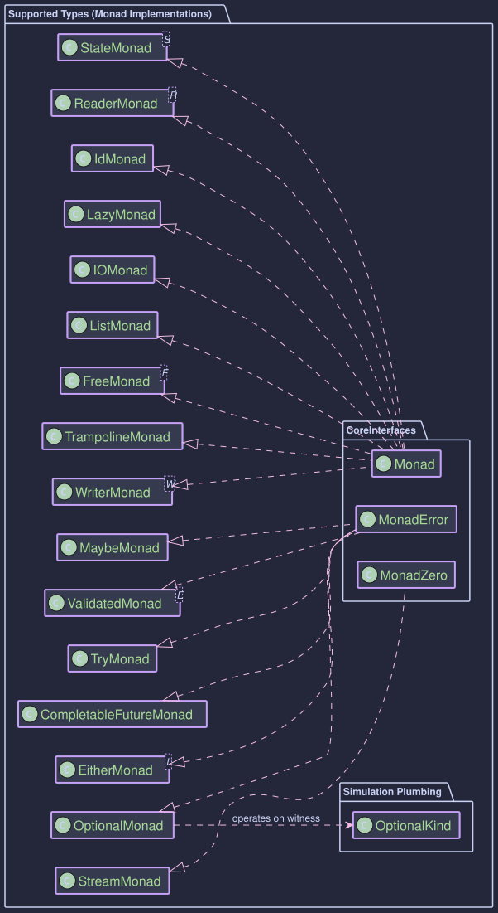
Key for Understanding Entries:
- Type: The Java type or custom type being simulated.
XxxKind<A>Interface: The specificKindinterface for this type (e.g.,OptionalKind<A>). It extendsKind<XxxKind.Witness, A>and usually contains the nestedfinal class Witness {}.- Witness Type
F_WITNESS: The phantom type used as the first parameter toKind(e.g.,OptionalKind.Witness). This is what parameterizes the type classes (e.g.,Monad<OptionalKind.Witness>). XxxKindHelperClass: Provideswidenandnarrowmethods.- For external types (like
java.util.List,java.util.Optional),widentypically creates an internalXxxHolderrecord which implementsXxxKind<A>, andnarrowextracts the Java type from this holder. - For library-defined types (
Id,Maybe,IO,Try, monad transformers), if the type itself directly implementsXxxKind<A>, thenwidenoften performs a (checked) cast, andnarrowchecksinstanceofthe actual type and casts.
- For external types (like
- Type Class Instances: Concrete implementations of
Functor<F_WITNESS>,Monad<F_WITNESS>, etc.
1. Id<A> (Identity)
- Type Definition: A custom record (
Id) that directly wraps a valueA. It's the simplest monad. IdKind<A>Interface:Id<A>itself implementsIdKind<A>, andIdKind<A> extends Kind<Id.Witness, A>.- Witness Type
F_WITNESS:Id.Witness IdKindHelper:IdKindHelper(wrapcastsIdtoKind,unwrapcastsKindtoId;narrowis a convenience for unwrap).- Type Class Instances:
IdentityMonad(Monad<Id.Witness>)
- Notes:
Id.of(a)createsId(a).mapandflatMapoperate directly. Useful as a base for monad transformers and generic programming with no extra effects.Id<A>directly implementsIdKind<A>. - Usage: How to use the Identity Monad
2. java.util.List<A>
- Type Definition: Standard Java
java.util.List<A>. ListKind<A>Interface:ListKind<A>extendsKind<ListKind.Witness, A>.- Witness Type
F_WITNESS:ListKind.Witness ListKindHelper: Uses an internalListHolder<A>record that implementsListKind<A>to wrapjava.util.List<A>.- Type Class Instances:
ListFunctor(Functor<ListKind.Witness>)ListMonad(Monad<ListKind.Witness>)
- Notes: Standard list monad behavior.
of(a)creates a singleton listList.of(a);of(null)results in an empty list. - Usage: How to use the List Monad
3. java.util.Optional<A>
- Type Definition: Standard Java
java.util.Optional<A>. OptionalKind<A>Interface:OptionalKind<A>extendsKind<OptionalKind.Witness, A>.- Witness Type
F_WITNESS:OptionalKind.Witness OptionalKindHelper: Uses an internalOptionalHolder<A>record that implementsOptionalKind<A>to wrapjava.util.Optional<A>.- Type Class Instances:
OptionalFunctor(Functor<OptionalKind.Witness>)OptionalMonad(MonadError<OptionalKind.Witness, Unit>)
- Notes:
Optional.empty()is the error state.raiseError(Unit.INSTANCE)createsOptional.empty().of(value)usesOptional.ofNullable(value). - Usage: How to use the Optional Monad
4. Maybe<A>
- Type Definition: Custom sealed interface (
Maybe) withJust<A>(non-null) andNothing<A>implementations. MaybeKind<A>Interface:Maybe<A>itself implementsMaybeKind<A>, andMaybeKind<A> extends Kind<MaybeKind.Witness, A>.- Witness Type
F_WITNESS:MaybeKind.Witness MaybeKindHelper:widencastsMaybetoKind;unwrapcastsKindtoMaybe. Providesjust(value),nothing(),fromNullable(value).- Type Class Instances:
MaybeFunctor(Functor<MaybeKind.Witness>)MaybeMonad(MonadError<MaybeKind.Witness, Unit>)
- Notes:
Nothingis the error state;raiseError(Unit.INSTANCE) createsNothing.Maybe.just(value)requires non-null.MaybeMonad.of(value)usesMaybe.fromNullable(). - Usage: How to use the Maybe Monad
5. Either<L, R>
- Type Definition: Custom sealed interface (
Either) withLeft<L,R>andRight<L,R>records. EitherKind<L, R>Interface:Either<L,R>itself implementsEitherKind<L,R>, andEitherKind<L,R> extends Kind<EitherKind.Witness<L>, R>.- Witness Type
F_WITNESS:EitherKind.Witness<L>(Error typeLis fixed for the witness). EitherKindHelper:wrapcastsEithertoKind;unwrapcastsKindtoEither. Providesleft(l),right(r).- Type Class Instances:
EitherFunctor<L>(Functor<EitherKind.Witness<L>>)EitherMonad<L>(MonadError<EitherKind.Witness<L>, L>)
- Notes: Right-biased.
Left(l)is the error state.of(r)createsRight(r). - Usage: How to use the Either Monad
6. Try<A>
- Type Definition: Custom sealed interface (
Try) withSuccess<A>andFailure<A>(wrappingThrowable). TryKind<A>Interface:Try<A>itself implementsTryKind<A>, andTryKind<A> extends Kind<TryKind.Witness, A>.- Witness Type
F_WITNESS:TryKind.Witness TryKindHelper:wrapcastsTrytoKind;unwrapcastsKindtoTry. Providessuccess(value),failure(throwable),tryOf(supplier).- Type Class Instances:
TryFunctor(Functor<TryKind.Witness>)TryApplicative(Applicative<TryKind.Witness>)TryMonad(MonadError<TryKind.Witness, Throwable>)
- Notes:
Failure(t)is the error state.of(v)createsSuccess(v). - Usage: How to use the Try Monad
7. java.util.concurrent.CompletableFuture<A>
- Type Definition: Standard Java
java.util.concurrent.CompletableFuture<A>. CompletableFutureKind<A>Interface:CompletableFutureKind<A>extendsKind<CompletableFutureKind.Witness, A>.- Witness Type
F_WITNESS:CompletableFutureKind.Witness CompletableFutureKindHelper: Uses an internalCompletableFutureHolder<A>record. Provideswrap,unwrap,join.- Type Class Instances:
CompletableFutureFunctor(Functor<CompletableFutureKind.Witness>)CompletableFutureApplicative(Applicative<CompletableFutureKind.Witness>)CompletableFutureMonad(Monad<CompletableFutureKind.Witness>)CompletableFutureMonad(MonadError<CompletableFutureKind.Witness, Throwable>)
- Notes: Represents asynchronous computations. A failed future is the error state.
of(v)createsCompletableFuture.completedFuture(v). - Usage: How to use the CompletableFuture Monad
8. IO<A>
- Type Definition: Custom interface (
IO) representing a deferred, potentially side-effecting computation. IOKind<A>Interface:IO<A>itself implementsIOKind<A>, andIOKind<A> extends Kind<IOKind.Witness, A>.- Witness Type
F_WITNESS:IOKind.Witness IOKindHelper:wrapcastsIOtoKind;unwrapcastsKindtoIO. Providesdelay(supplier),unsafeRunSync(kind).- Type Class Instances:
IOFunctor(Functor<IOKind.Witness>)IOApplicative(Applicative<IOKind.Witness>)IOMonad(Monad<IOKind.Witness>)
- Notes: Evaluation is deferred until
unsafeRunSync. Exceptions during execution are generally unhandled byIOMonaditself unless caught within the IO's definition. - Usage: How to use the IO Monad
9. Lazy<A>
- Type Definition: Custom class (
Lazy) for deferred computation with memoization. LazyKind<A>Interface:Lazy<A>itself implementsLazyKind<A>, andLazyKind<A> extends Kind<LazyKind.Witness, A>.- Witness Type
F_WITNESS:LazyKind.Witness LazyKindHelper:wrapcastsLazytoKind;unwrapcastsKindtoLazy. Providesdefer(supplier),now(value),force(kind).- Type Class Instances:
LazyMonad(Monad<LazyKind.Witness>)
- Notes: Result or exception is memoized.
of(a)creates an already evaluatedLazy.now(a). - Usage: How to use the Lazy Monad
10. Reader<R_ENV, A>
- Type Definition: Custom functional interface (
Reader) wrappingFunction<R_ENV, A>. ReaderKind<R_ENV, A>Interface:Reader<R_ENV,A>itself implementsReaderKind<R_ENV,A>, andReaderKind<R_ENV,A> extends Kind<ReaderKind.Witness<R_ENV>, A>.- Witness Type
F_WITNESS:ReaderKind.Witness<R_ENV>(Environment typeR_ENVis fixed). ReaderKindHelper:wrapcastsReadertoKind;unwrapcastsKindtoReader. Providesreader(func),ask(),constant(value),runReader(kind, env).- Type Class Instances:
ReaderFunctor<R_ENV>(Functor<ReaderKind.Witness<R_ENV>>)ReaderApplicative<R_ENV>(Applicative<ReaderKind.Witness<R_ENV>>)ReaderMonad<R_ENV>(Monad<ReaderKind.Witness<R_ENV>>)
- Notes:
of(a)creates aReaderthat ignores the environment and returnsa. - Usage: How to use the Reader Monad
11. State<S, A>
- Type Definition: Custom functional interface (
State) wrappingFunction<S, StateTuple<S, A>>. StateKind<S,A>Interface:State<S,A>itself implementsStateKind<S,A>, andStateKind<S,A> extends Kind<StateKind.Witness<S>, A>.- Witness Type
F_WITNESS:StateKind.Witness<S>(State typeSis fixed). StateKindHelper:wrapcastsStatetoKind;unwrapcastsKindtoState. Providespure(value),get(),set(state),modify(func),inspect(func),runState(kind, initialState), etc.- Type Class Instances:
StateFunctor<S>(Functor<StateKind.Witness<S>>)StateApplicative<S>(Applicative<StateKind.Witness<S>>)StateMonad<S>(Monad<StateKind.Witness<S>>)
- Notes:
of(a)(pure) returnsawithout changing state. - Usage: How to use the State Monad
12. Writer<W, A>
- Type Definition: Custom record (
Writer) holding(W log, A value). RequiresMonoid<W>. WriterKind<W, A>Interface:Writer<W,A>itself implementsWriterKind<W,A>, andWriterKind<W,A> extends Kind<WriterKind.Witness<W>, A>.- Witness Type
F_WITNESS:WriterKind.Witness<W>(Log typeWand itsMonoidare fixed). WriterKindHelper:wrapcastsWritertoKind;unwrapcastsKindtoWriter. Providesvalue(monoid, val),tell(monoid, log),runWriter(kind), etc.- Type Class Instances: (Requires
Monoid<W>for Applicative/Monad)WriterFunctor<W>(Functor<WriterKind.Witness<W>>)WriterApplicative<W>(Applicative<WriterKind.Witness<W>>)WriterMonad<W>(Monad<WriterKind.Witness<W>>)
- Notes:
of(a)(value) producesawith an empty log (fromMonoid.empty()). - Usage: How to use the Writer Monad
13. Validated<E, A>
- Type Definition: Custom sealed interface (
Validated) withValid<E, A>(holdingA) andInvalid<E, A>(holdingE) implementations. ValidatedKind<E, A>Interface: Defines the HKT structure (ValidatedKind) forValidated<E,A>. It extendsKind<ValidatedKind.Witness<E>, A>. ConcreteValid<E,A>andInvalid<E,A>instances are cast to this kind byValidatedKindHelper.- Witness Type
F_WITNESS:ValidatedKind.Witness<E>(Error typeEis fixed for the HKT witness). ValidatedKindHelperClass: (ValidatedKindHelper).widencastsValidated<E,A>(specificallyValidorInvalidinstances) toKind<ValidatedKind.Witness<E>, A>.narrowcastsKindback toValidated<E,A>. Provides static factory methodsvalid(value)andinvalid(error)that return the Kind-wrapped type.- Type Class Instances: (Error type
Eis fixed for the monad instance)ValidatedMonad<E>(MonadError<ValidatedKind.Witness<E>, E>). This also providesMonad,Functor, andApplicativebehavior.
- Notes:
Validatedis right-biased, meaning operations likemapandflatMapapply to theValidcase and propagateInvaliduntouched.ValidatedMonad.of(a)creates aValid(a). As aMonadError,ValidatedMonadprovidesraiseError(error)to create anInvalid(error)andhandleErrorWith(kind, handler)for standardized error recovery. Theapmethod is also right-biased and does not accumulate errors from multipleInvalids in the typical applicative sense; it propagates the firstInvalidencountered or anInvalidfunction. - Usage: How to use the Validated Monad
CompletableFuture: Asynchronous Computations with CompletableFuture
Java's java.util.concurrent.CompletableFuture<T> is a powerful tool for asynchronous programming. The higher-kinded-j library provides a way to treat CompletableFuture as a monadic context using the HKT simulation. This allows developers to compose asynchronous operations and handle their potential failures (Throwable) in a more functional and generic style, leveraging type classes like Functor, Applicative, Monad, and crucially, MonadError.
Higher-Kinded Bridge for CompletableFuture
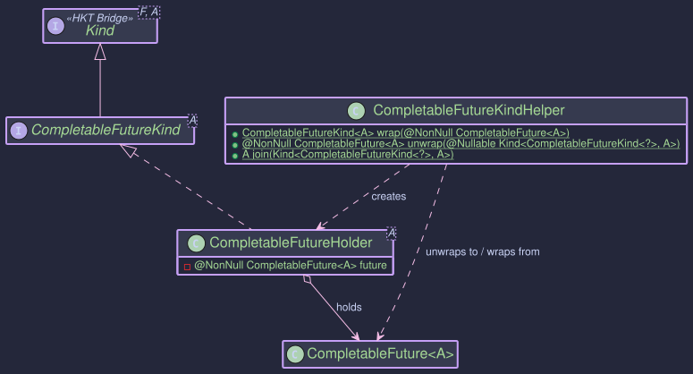
TypeClasses
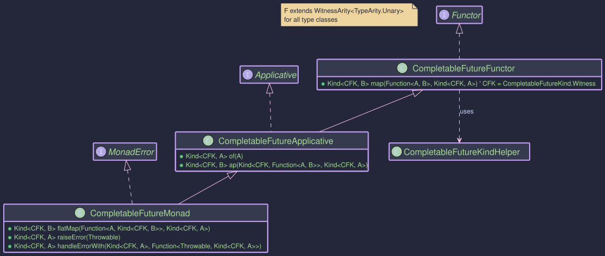
The simulation for CompletableFuture involves these components:
CompletableFuture<A>: The standard Java class representing an asynchronous computation that will eventually result in a value of typeAor fail with an exception (aThrowable).CompletableFutureKind<A>: The HKT marker interface (Kind<CompletableFutureKind.Witness, A>) forCompletableFuture. This allowsCompletableFutureto be used generically with type classes. The witness type isCompletableFutureKind.Witness.CompletableFutureKindHelper: The utility class for bridging betweenCompletableFuture<A>andCompletableFutureKind<A>. Key methods:widen(CompletableFuture<A>): Wraps a standardCompletableFutureinto itsKindrepresentation.narrow(Kind<CompletableFutureKind.Witness, A>): Unwraps theKindback to the concreteCompletableFuture. ThrowsKindUnwrapExceptionif the input Kind is invalid.join(Kind<CompletableFutureKind.Witness, A>): A convenience method to unwrap theKindand then block (join()) on the underlyingCompletableFutureto get its result. It re-throws runtime exceptions and errors directly but wraps checked exceptions inCompletionException. Use primarily for testing or at the very end of an application where blocking is acceptable.
CompletableFutureFunctor: ImplementsFunctor<CompletableFutureKind.Witness>. Providesmap, which corresponds toCompletableFuture.thenApply().CompletableFutureApplicative: ExtendsFunctor, implementsApplicative<CompletableFutureKind.Witness>.of(A value): Creates an already successfully completedCompletableFutureKindusingCompletableFuture.completedFuture(value).ap(Kind<F, Function<A,B>>, Kind<F, A>): Corresponds toCompletableFuture.thenCombine(), applying a function from one future to the value of another when both complete.
CompletableFutureMonad: ExtendsApplicative, implementsMonad<CompletableFutureKind.Witness>.flatMap(Function<A, Kind<F, B>>, Kind<F, A>): Corresponds toCompletableFuture.thenCompose(), sequencing asynchronous operations where one depends on the result of the previous one.
CompletableFutureMonad: ExtendsMonad, implementsMonadError<CompletableFutureKind.Witness, Throwable>. This is often the most useful instance to work with.raiseError(Throwable error): Creates an already exceptionally completedCompletableFutureKindusingCompletableFuture.failedFuture(error).handleErrorWith(Kind<F, A>, Function<Throwable, Kind<F, A>>): Corresponds toCompletableFuture.exceptionallyCompose(), allowing asynchronous recovery from failures.
Purpose and Usage
- Functional Composition of Async Ops: Use
map,ap, andflatMap(via the type class instances) to build complex asynchronous workflows in a declarative style, similar to how you'd compose synchronous operations withOptionalorList. - Unified Error Handling: Treat asynchronous failures (
Throwable) consistently usingMonadErroroperations (raiseError,handleErrorWith). This allows integrating error handling directly into the composition chain. - HKT Integration: Enables writing generic code that can operate on
CompletableFuturealongside other simulated monadic types (likeOptional,Either,IO) by programming against theKind<F, A>interface and type classes. This is powerfully demonstrated when usingCompletableFutureKindas the outer monadFin theEitherTtransformer (see Order Example Walkthrough).
Examples
public void createExample() {
// Get the MonadError instance
CompletableFutureMonad futureMonad = CompletableFutureMonad.INSTANCE;
// --- Using of() ---
// Creates a Kind wrapping an already completed future
Kind<CompletableFutureKind.Witness, String> successKind = futureMonad.of("Success!");
// --- Using raiseError() ---
// Creates a Kind wrapping an already failed future
RuntimeException error = new RuntimeException("Something went wrong");
Kind<CompletableFutureKind.Witness, String> failureKind = futureMonad.raiseError(error);
// --- Wrapping existing CompletableFutures ---
CompletableFuture<Integer> existingFuture = CompletableFuture.supplyAsync(() -> {
try {
TimeUnit.MILLISECONDS.sleep(20);
} catch (InterruptedException e) { /* ignore */ }
return 123;
});
Kind<CompletableFutureKind.Witness, Integer> wrappedExisting = FUTURE.widen(existingFuture);
CompletableFuture<Integer> failedExisting = new CompletableFuture<>();
failedExisting.completeExceptionally(new IllegalArgumentException("Bad input"));
Kind<CompletableFutureKind.Witness, Integer> wrappedFailed = FUTURE.widen(failedExisting);
// You typically don't interact with 'unwrap' unless needed at boundaries or for helper methods like 'join'.
CompletableFuture<String> unwrappedSuccess = FUTURE.narrow(successKind);
CompletableFuture<String> unwrappedFailure = FUTURE.narrow(failureKind);
}
These examples show how to use the type class instance (futureMonad) to apply operations.
public void monadExample() {
// Get the MonadError instance
CompletableFutureMonad futureMonad = CompletableFutureMonad.INSTANCE;
// --- map (thenApply) ---
Kind<CompletableFutureKind.Witness, Integer> initialValueKind = futureMonad.of(10);
Kind<CompletableFutureKind.Witness, String> mappedKind = futureMonad.map(
value -> "Result: " + value,
initialValueKind
);
// Join for testing/demonstration
System.out.println("Map Result: " + FUTURE.join(mappedKind)); // Output: Result: 10
// --- flatMap (thenCompose) ---
// Function A -> Kind<F, B>
Function<String, Kind<CompletableFutureKind.Witness, String>> asyncStep2 =
input -> FUTURE.widen(
CompletableFuture.supplyAsync(() -> input + " -> Step2 Done")
);
Kind<CompletableFutureKind.Witness, String> flatMappedKind = futureMonad.flatMap(
asyncStep2,
mappedKind // Result from previous map step ("Result: 10")
);
System.out.println("FlatMap Result: " + FUTURE.join(flatMappedKind)); // Output: Result: 10 -> Step2 Done
// --- ap (thenCombine) ---
Kind<CompletableFutureKind.Witness, Function<Integer, String>> funcKind = futureMonad.of(i -> "FuncResult:" + i);
Kind<CompletableFutureKind.Witness, Integer> valKind = futureMonad.of(25);
Kind<CompletableFutureKind.Witness, String> apResult = futureMonad.ap(funcKind, valKind);
System.out.println("Ap Result: " + FUTURE.join(apResult)); // Output: FuncResult:25
// --- mapN ---
Kind<CompletableFutureKind.Witness, Integer> f1 = futureMonad.of(5);
Kind<CompletableFutureKind.Witness, String> f2 = futureMonad.of("abc");
BiFunction<Integer, String, String> combine = (i, s) -> s + i;
Kind<CompletableFutureKind.Witness, String> map2Result = futureMonad.map2(f1, f2, combine);
System.out.println("Map2 Result: " + FUTURE.join(map2Result)); // Output: abc5
}
This is where CompletableFutureMonad shines, providing functional error recovery.
public void errorHandlingExample(){
// Get the MonadError instance
CompletableFutureMonad futureMonad = CompletableFutureMonad.INSTANCE;
RuntimeException runtimeEx = new IllegalStateException("Processing Failed");
IOException checkedEx = new IOException("File Not Found");
Kind<CompletableFutureKind.Witness, String> failedRuntimeKind = futureMonad.raiseError(runtimeEx);
Kind<CompletableFutureKind.Witness, String> failedCheckedKind = futureMonad.raiseError(checkedEx);
Kind<CompletableFutureKind.Witness, String> successKind = futureMonad.of("Original Success");
// --- Handler Function ---
// Function<Throwable, Kind<CompletableFutureKind.Witness, String>>
Function<Throwable, Kind<CompletableFutureKind.Witness, String>> recoveryHandler =
error -> {
System.out.println("Handling error: " + error.getMessage());
if (error instanceof IOException) {
// Recover from specific checked exceptions
return futureMonad.of("Recovered from IO Error");
} else if (error instanceof IllegalStateException) {
// Recover from specific runtime exceptions
return FUTURE.widen(CompletableFuture.supplyAsync(()->{
System.out.println("Async recovery..."); // Recovery can be async too!
return "Recovered from State Error (async)";
}));
} else if (error instanceof ArithmeticException) {
// Recover from ArithmeticException
return futureMonad.of("Recovered from Arithmetic Error: " + error.getMessage());
}
else {
// Re-raise unhandled errors
System.out.println("Unhandled error type: " + error.getClass().getSimpleName());
return futureMonad.raiseError(new RuntimeException("Recovery failed", error));
}
};
// --- Applying Handler ---
// Handle RuntimeException
Kind<CompletableFutureKind.Witness, String> recoveredRuntime = futureMonad.handleErrorWith(
failedRuntimeKind,
recoveryHandler
);
System.out.println("Recovered (Runtime): " + FUTURE.join(recoveredRuntime));
// Output:
// Handling error: Processing Failed
// Async recovery...
// Recovered (Runtime): Recovered from State Error (async)
// Handle CheckedException
Kind<CompletableFutureKind.Witness, String> recoveredChecked = futureMonad.handleErrorWith(
failedCheckedKind,
recoveryHandler
);
System.out.println("Recovered (Checked): " + FUTURE.join(recoveredChecked));
// Output:
// Handling error: File Not Found
// Recovered (Checked): Recovered from IO Error
// Handler is ignored for success
Kind<CompletableFutureKind.Witness, String> handledSuccess = futureMonad.handleErrorWith(
successKind,
recoveryHandler // This handler is never called
);
System.out.println("Handled (Success): " + FUTURE.join(handledSuccess));
// Output: Handled (Success): Original Success
// Example of re-raising an unhandled error
ArithmeticException unhandledEx = new ArithmeticException("Bad Maths");
Kind<CompletableFutureKind.Witness, String> failedUnhandledKind = futureMonad.raiseError(unhandledEx);
Kind<CompletableFutureKind.Witness, String> failedRecovery = futureMonad.handleErrorWith(
failedUnhandledKind,
recoveryHandler
);
try {
FUTURE.join(failedRecovery);
} catch (CompletionException e) { // join wraps the "Recovery failed" exception
System.err.println("Caught re-raised error: " + e.getCause());
System.err.println(" Original cause: " + e.getCause().getCause());
}
// Output:
// Handling error: Bad Maths
}
handleErrorWithallows you to inspect theThrowableand return a newCompletableFutureKind, potentially recovering the flow.- The handler receives the cause of the failure (unwrapped from
CompletionExceptionif necessary).
Either - Typed Error Handling
Purpose
The Either<L, R> type represents a value that can be one of two possible types, conventionally denoted as Left and Right. Its primary purpose in functional programming and this library is to provide an explicit, type-safe way to handle computations that can result in either a successful outcome or a specific kind of failure.
Right<L, R>: By convention, represents the success case, holding a value of typeR.Left<L, R>: By convention, represents the failure or alternative case, holding a value of typeL(often an error type).
Unlike throwing exceptions, Either makes the possibility of failure explicit in the return type of a function. Unlike Optional or Maybe, which simply signal the absence of a value, Either allows carrying specific information about why a computation failed in the Left value.
We can think of Either as an extension of Maybe. The Right is equivalent to Maybe.Just, and the Left is the equivalent of Maybe.Nothing but now we can allow it to carry a value.
The implementation in this library is a sealed interface Either<L, R> with two record implementations: Left<L, R> and Right<L, R>. Either<L, R> directly implements EitherKind<L, R>, which in turn extends Kind<EitherKind.Witness<L>, R>.
Structure
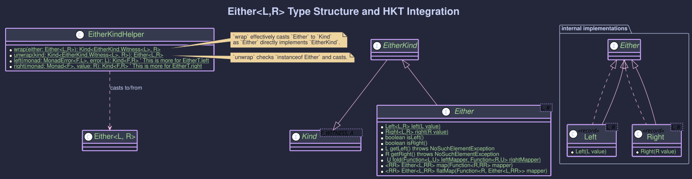
Creating Instances
You create Either instances using the static factory methods:
// Success case
Either<String, Integer> success = Either.right(123);
// Failure case
Either<String, Integer> failure = Either.left("File not found");
// Null values are permitted in Left or Right by default in this implementation
Either<String, Integer> rightNull = Either.right(null);
Either<String, Integer> leftNull = Either.left(null);
Working with Either
Several methods are available to interact with Either values:
-
isLeft(): Returnstrueif it's aLeft,falseotherwise.isRight(): Returnstrueif it's aRight,falseotherwise.
if (success.isRight()) { System.out.println("It's Right!"); } if (failure.isLeft()) { System.out.println("It's Left!"); }
-
getLeft(): Returns thevalueif it's aLeft, otherwise throwsNoSuchElementException.getRight(): Returns thevalueif it's aRight, otherwise throwsNoSuchElementException.
try { Integer value = success.getRight(); // Returns 123 String error = failure.getLeft(); // Returns "File not found" // String errorFromSuccess = success.getLeft(); // Throws NoSuchElementException } catch (NoSuchElementException e) { System.err.println("Attempted to get the wrong side: " + e.getMessage()); }
Note: Prefer fold or pattern matching over direct getLeft/getRight calls.
-
The
foldmethod is the safest way to handle both cases by providing two functions: one for theLeftcase and one for theRightcase. It returns the result of whichever function is applied.String resultMessage = failure.fold( leftValue -> "Operation failed with: " + leftValue, // Function for Left rightValue -> "Operation succeeded with: " + rightValue // Function for Right ); // resultMessage will be "Operation failed with: File not found" String successMessage = success.fold( leftValue -> "Error: " + leftValue, rightValue -> "Success: " + rightValue ); // successMessage will be "Success: 123"
Applies a function only to the Right value, leaving a Left unchanged. This is known as being "right-biased".
Function<Integer, String> intToString = Object::toString;
Either<String, String> mappedSuccess = success.map(intToString); // Right(123) -> Right("123")
Either<String, String> mappedFailure = failure.map(intToString); // Left(...) -> Left(...) unchanged
System.out.println(mappedSuccess); // Output: Right(value=123)
System.out.println(mappedFailure); // Output: Left(value=File not found)
Applies a function that itself returns an Either to a Right value. If the initial Either is Left, it's returned unchanged. If the function applied to the Right value returns a Left, that Left becomes the result. This allows sequencing operations where each step can fail. The Left type acts as a functor that dismisses the mapped function f and returns itself (map(f) -> Left(Value)). It preserves the value it holds. After a Left is encountered, subsequent transformations via map or flatMap are typically short-circuited.
public void basicFlatMap(){
// Example: Parse string, then check if positive
Function<String, Either<String, Integer>> parse = s -> {
try { return Either.right(Integer.parseInt(s.trim())); }
catch (NumberFormatException e) { return Either.left("Invalid number"); }
};
Function<Integer, Either<String, Integer>> checkPositive = i ->
(i > 0) ? Either.right(i) : Either.left("Number not positive");
Either<String, String> input1 = Either.right(" 10 ");
Either<String, String> input2 = Either.right(" -5 ");
Either<String, String> input3 = Either.right(" abc ");
Either<String, String> input4 = Either.left("Initial error");
// Chain parse then checkPositive
Either<String, Integer> result1 = input1.flatMap(parse).flatMap(checkPositive); // Right(10)
Either<String, Integer> result2 = input2.flatMap(parse).flatMap(checkPositive); // Left("Number not positive")
Either<String, Integer> result3 = input3.flatMap(parse).flatMap(checkPositive); // Left("Invalid number")
Either<String, Integer> result4 = input4.flatMap(parse).flatMap(checkPositive); // Left("Initial error")
System.out.println(result1);
System.out.println(result2);
System.out.println(result3);
System.out.println(result4);
}
To use Either within Higher-Kinded-J framework:
-
Identify Context: You are working with
Either<L, R>whereLis your chosen error type. The HKT witness will beEitherKind.Witness<L>. -
Get Type Class Instance: Obtain an instance of
EitherMonad<L>for your specific error typeL. This instance implementsMonadError<EitherKind.Witness<L>, L>.// Assuming TestError is your error type EitherMonad<TestError> eitherMonad = EitherMonad.instance() // Now 'eitherMonad' can be used for operations on Kind<EitherKind.Witness<String>, A> -
Wrap: Convert your
Either<L, R>instances toKind<EitherKind.Witness<L>, R>usingEITHER.widen(). SinceEither<L,R>directly implementsEitherKind<L,R>.EitherMonad<String> eitherMonad = EitherMonad.instance() Either<String, Integer> myEither = Either.right(10); // F_WITNESS is EitherKind.Witness<String>, A is Integer Kind<EitherKind.Witness<String>, Integer> eitherKind = EITHER.widen(myEither); -
Apply Operations: Use the methods on the
eitherMonadinstance (map,flatMap,ap,raiseError,handleErrorWith, etc.).// Using map via the Monad instance Kind<EitherKind.Witness<String>, String> mappedKind = eitherMonad.map(Object::toString, eitherKind); System.out.println("mappedKind: " + EITHER.narrow(mappedKind)); // Output: Right[value = 10] // Using flatMap via the Monad instance Function<Integer, Kind<EitherKind.Witness<String>, Double>> nextStep = i -> EITHER.widen( (i > 5) ? Either.right(i/2.0) : Either.left("TooSmall")); Kind<EitherKind.Witness<String>, Double> flatMappedKind = eitherMonad.flatMap(nextStep, eitherKind); // Creating a Left Kind using raiseError Kind<EitherKind.Witness<String>, Integer> errorKind = eitherMonad.raiseError("E101"); // L is String here // Handling an error Kind<EitherKind.Witness<String>, Integer> handledKind = eitherMonad.handleErrorWith(errorKind, error -> { System.out.println("Handling error: " + error); return eitherMonad.of(0); // Recover with Right(0) }); -
Unwrap: Get the final
Either<L, R>back usingEITHER.narrow()when needed.Either<String, Integer> finalEither = EITHER.narrow(handledKind); System.out.println("Final unwrapped Either: " + finalEither); // Output: Right(0)
- Explicitly modeling and handling domain-specific errors (e.g., validation failures, resource not found, business rule violations).
- Sequencing operations where any step might fail with a typed error, short-circuiting the remaining steps.
- Serving as the inner type for monad transformers like
EitherTto combine typed errors with other effects like asynchronicity (see the Order Example Walkthrough). - Providing a more informative alternative to returning
nullor relying solely on exceptions for expected failure conditions.
Identity Monad (Id)
The Identity Monad, often referred to as Id, is the simplest possible monad. It represents a computation that doesn't add any additional context or effect beyond simply holding a value. It's a direct wrapper around a value.
While it might seem trivial on its own, the Identity Monad plays a crucial role in a higher-kinded type library for several reasons:
-
Base Case for Monad Transformers: Many monad transformers (like
StateT,ReaderT,MaybeT, etc.) can be specialized to their simpler, non-transformed monad counterparts by usingIdas the underlying monad. For example:StateT<S, Id.Witness, A>is conceptually equivalent toState<S, A>.MaybeT<Id.Witness, A>is conceptually equivalent toMaybe<A>. This allows for a unified way to define transformers and derive base monads.
-
Generic Programming: When writing functions that are generic over any
Monad<F>,Idcan serve as the "no-effect" monad, allowing you to use these generic functions with pure values without introducing unnecessary complexity. -
Understanding Monads: It provides a clear example of the monadic structure (
of,flatMap,map) without any distracting side effects or additional computational context.
What is Id?
An Id<A> is simply a container that holds a value of type A.
Id.of(value)creates anIdinstance holdingvalue.idInstance.value()retrieves the value from theIdinstance.
Key Classes and Concepts
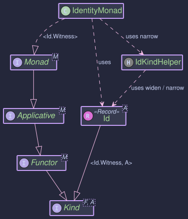
Id<A>: The data type itself. It's a final class that wraps a value of typeA. It implementsKind<Id.Witness, A>.Id.Witness: A static nested class (or interface) used as the first type parameter toKind(i.e.,FinKind<F, A>) to represent theIdtype constructor at the type level. This is part of the HKT emulation pattern.IdKindHelper: A utility class providing static helper methods:narrow(Kind<Id.Witness, A> kind): Safely casts aKindback to a concreteId<A>.widen(Id<A> id): widens anId<A>toKind<Id.Witness, A>. (Often an identity cast sinceIdimplementsKind).narrows(Kind<Id.Witness, A> kind): A convenience to narrow and then get the value.
IdentityMonad: The singleton class that implementsMonad<Id.Witness>, providing the monadic operations forId.
Using Id and IdentityMonad
public void createExample(){
// Direct creation
Id<String> idString = Id.of("Hello, Identity!");
Id<Integer> idInt = Id.of(123);
Id<String> idNull = Id.of(null); // Id can wrap null
// Accessing the value
String value = idString.value(); // "Hello, Identity!"
Integer intValue = idInt.value(); // 123
String nullValue = idNull.value(); // null
}
The IdentityMonad provides the standard monadic operations.
public void monadExample(){
IdentityMonad idMonad = IdentityMonad.instance();
// 1. 'of' (lifting a value)
Kind<Id.Witness, Integer> kindInt = idMonad.of(42);
Id<Integer> idFromOf = ID.narrow(kindInt);
System.out.println("From of: " + idFromOf.value()); // Output: From of: 42
// 2. 'map' (applying a function to the wrapped value)
Kind<Id.Witness, String> kindStringMapped = idMonad.map(
i -> "Value is " + i,
kindInt
);
Id<String> idMapped = ID.narrow(kindStringMapped);
System.out.println("Mapped: " + idMapped.value()); // Output: Mapped: Value is 42
// 3. 'flatMap' (applying a function that returns an Id)
Kind<Id.Witness, String> kindStringFlatMapped = idMonad.flatMap(
i -> Id.of("FlatMapped: " + (i * 2)), // Function returns Id<String>
kindInt
);
Id<String> idFlatMapped = ID.narrow(kindStringFlatMapped);
System.out.println("FlatMapped: " + idFlatMapped.value()); // Output: FlatMapped: 84
// flatMap can also be called directly on Id if the function returns Id
Id<String> directFlatMap = idFromOf.flatMap(i -> Id.of("Direct FlatMap: " + i));
System.out.println(directFlatMap.value()); // Output: Direct FlatMap: 42
// 4. 'ap' (applicative apply)
Kind<Id.Witness, Function<Integer, String>> kindFunction = idMonad.of(i -> "Applied: " + i);
Kind<Id.Witness, String> kindApplied = idMonad.ap(kindFunction, kindInt);
Id<String> idApplied = ID.narrow(kindApplied);
System.out.println("Applied: " + idApplied.value()); // Output: Applied: 42
}
As mentioned in the StateT Monad Transformer documentation, State<S,A> can be thought of as StateT<S, Id.Witness, A>.
Let's illustrate how you might define a State monad type alias or use StateT with IdentityMonad:
public void transformerExample(){
// Conceptually, State<S, A> is StateT<S, Id.Witness, A>
// We can create a StateTMonad instance using IdentityMonad as the underlying monad.
StateTMonad<Integer, Id.Witness> stateMonadOverId =
StateTMonad.instance(IdentityMonad.instance());
// Example: A "State" computation that increments the state and returns the old state
Function<Integer, Kind<Id.Witness, StateTuple<Integer, Integer>>> runStateFn =
currentState -> Id.of(StateTuple.of(currentState + 1, currentState));
// Create the StateT (acting as State)
Kind<StateTKind.Witness<Integer, Id.Witness>, Integer> incrementAndGet =
StateTKindHelper.stateT(runStateFn, IdentityMonad.instance());
// Run it
Integer initialState = 10;
Kind<Id.Witness, StateTuple<Integer, Integer>> resultIdTuple =
StateTKindHelper.runStateT(incrementAndGet, initialState);
// Unwrap the Id and then the StateTuple
Id<StateTuple<Integer, Integer>> idTuple = ID.narrow(resultIdTuple);
StateTuple<Integer, Integer> tuple = idTuple.value();
System.out.println("Initial State: " + initialState); // Output: Initial State: 10
System.out.println("Returned Value (Old State): " + tuple.value()); // Output: Returned Value (Old State): 10
System.out.println("Final State: " + tuple.state()); // Output: Final State: 11
}
This example shows that StateT with Id behaves just like a standard State monad, where the "effect" of the underlying monad is simply identity (no additional effect).
Higher-Kinded-J: Managing Side Effects with IO
In functional programming, managing side effects (like printing to the console, reading files, making network calls, generating random numbers, or getting the current time) while maintaining purity is a common challenge.
The IO<A> monad in higher-kinded-j provides a way to encapsulate these side-effecting computations, making them first-class values that can be composed and manipulated functionally.
The key idea is that an IO<A> value doesn't perform the side effect immediately upon creation. Instead, it represents a description or recipe for a computation that, when executed, will perform the effect and potentially produce a value of type A. The actual execution is deferred until explicitly requested.
Core Components
The IO Type
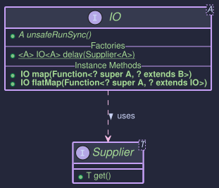
The HKT Bridge for IO
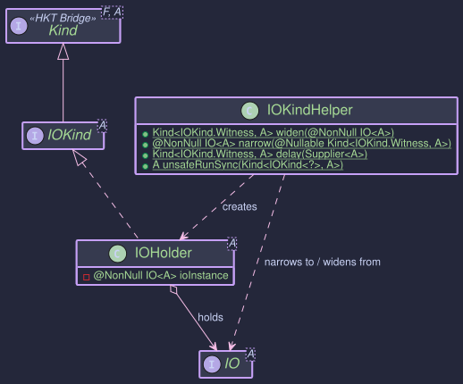
Typeclasses for IO
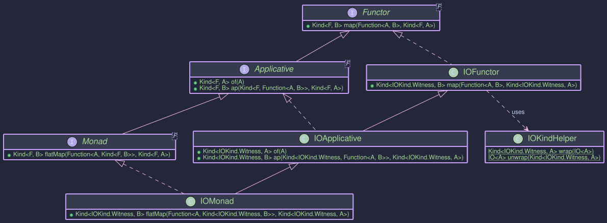
The IO functionality is built upon several related components:
IO<A>: The core functional interface. AnIO<A>instance essentially wraps aSupplier<A>(or similar function) that performs the side effect and returns a valueA. The crucial method isunsafeRunSync(), which executes the encapsulated computation.IOKind<A>: The HKT marker interface (Kind<IOKind.Witness, A>) forIO. This allowsIOto be treated as a generic type constructorFin type classes likeFunctor,Applicative, andMonad. The witness type isIOKind.Witness.IOKindHelper: The essential utility class for working withIOin the HKT simulation. It provides:widen(IO<A>): Wraps a concreteIO<A>instance into its HKT representationIOKind<A>.narrow(Kind<IOKind.Witness, A>): Unwraps anIOKind<A>back to the concreteIO<A>. ThrowsKindUnwrapExceptionif the input Kind is invalid.delay(Supplier<A>): The primary factory method to create anIOKind<A>by wrapping a side-effecting computation described by aSupplier.unsafeRunSync(Kind<IOKind.Witness, A>): The method to execute the computation described by anIOKind. This is typically called at the "end of the world" in your application (e.g., in themainmethod) to run the composed IO program.
IOFunctor: ImplementsFunctor<IOKind.Witness>. Provides themapoperation to transform the result valueAof anIOcomputation without executing the effect.IOApplicative: ExtendsIOFunctorand implementsApplicative<IOKind.Witness>. Providesof(to lift a pure value intoIOwithout side effects) andap(to apply a function withinIOto a value withinIO).IOMonad: ExtendsIOApplicativeand implementsMonad<IOKind.Witness>. ProvidesflatMapto sequenceIOcomputations, ensuring effects happen in the intended order.
Purpose and Usage
- Encapsulating Side Effects: Describe effects (like printing, reading files, network calls) as
IOvalues without executing them immediately. - Maintaining Purity: Functions that create or combine
IOvalues remain pure. They don't perform the effects themselves, they just build up a description of the effects to be performed later. - Composition: Use
mapandflatMap(viaIOMonad) to build complex sequences of side-effecting operations from smaller, reusableIOactions. - Deferred Execution: Effects are only performed when
unsafeRunSyncis called on the final, composedIOvalue. This separates the description of the program from its execution.
Important Note:IO in this library primarily deals with deferring execution. It does not automatically provide sophisticated error handling like Either or Try, nor does it manage asynchronicity like CompletableFuture. Exceptions thrown during unsafeRunSync will typically propagate unless explicitly handled within the Supplier provided to IOKindHelper.delay.
Use IOKindHelper.delay to capture side effects. Use IOMonad.of for pure values within IO.
import org.higherkindedj.hkt.Kind;
import org.higherkindedj.hkt.io.*;
import org.higherkindedj.hkt.unit.Unit;
import java.util.function.Supplier;
import java.util.Scanner;
// Get the IOMonad instance
IOMonad ioMonad = IOMonad.INSTANCE;
// IO action to print a message
Kind<IOKind.Witness, Unit> printHello = IOKindHelper.delay(() -> {
System.out.println("Hello from IO!");
return Unit.INSTANCE;
});
// IO action to read a line from the console
Kind<IOKind.Witness, String> readLine = IOKindHelper.delay(() -> {
System.out.print("Enter your name: ");
// Scanner should ideally be managed more robustly in real apps
try (Scanner scanner = new Scanner(System.in)) {
return scanner.nextLine();
}
});
// IO action that returns a pure value (no side effect description here)
Kind<IOKind.Witness, Integer> pureValueIO = ioMonad.of(42);
// IO action that simulates getting the current time (a side effect)
Kind<IOKind.Witness, Long> currentTime = IOKindHelper.delay(System::currentTimeMillis);
// Creating an IO action that might fail internally
Kind<IOKind.Witness, String> potentiallyFailingIO = IOKindHelper.delay(() -> {
if (Math.random() < 0.5) {
throw new RuntimeException("Simulated failure!");
}
return "Success!";
});
Nothing happens when you create these IOKind values. The Supplier inside delay is not executed.
Use IOKindHelper.unsafeRunSync to run the computation.
// (Continuing from above examples)
// Execute printHello
System.out.println("Running printHello:");
IOKindHelper.unsafeRunSync(printHello); // Actually prints "Hello from IO!"
// Execute readLine (will block for user input)
// System.out.println("\nRunning readLine:");
// String name = IOKindHelper.unsafeRunSync(readLine);
// System.out.println("User entered: " + name);
// Execute pureValueIO
System.out.println("\nRunning pureValueIO:");
Integer fetchedValue = IOKindHelper.unsafeRunSync(pureValueIO);
System.out.println("Fetched pure value: " + fetchedValue); // Output: 42
// Execute potentiallyFailingIO
System.out.println("\nRunning potentiallyFailingIO:");
try {
String result = IOKindHelper.unsafeRunSync(potentiallyFailingIO);
System.out.println("Succeeded: " + result);
} catch (RuntimeException e) {
System.err.println("Caught expected failure: " + e.getMessage());
}
// Notice that running the same IO action again executes the effect again
System.out.println("\nRunning printHello again:");
IOKindHelper.unsafeRunSync(printHello); // Prints "Hello from IO!" again
Use IOMonad instance methods.
import org.higherkindedj.hkt.io.IOMonad;
import org.higherkindedj.hkt.unit.Unit;
import java.util.function.Function;
IOMonad ioMonad = IOMonad.INSTANCE;
// --- map example ---
Kind<IOKind.Witness, String> readLineAction = IOKindHelper.delay(() -> "Test Input"); // Simulate input
// Map the result of readLineAction without executing readLine yet
Kind<IOKind.Witness, String> greetAction = ioMonad.map(
name -> "Hello, " + name + "!", // Function to apply to the result
readLineAction
);
System.out.println("Greet action created, not executed yet.");
// Now execute the mapped action
String greeting = IOKindHelper.unsafeRunSync(greetAction);
System.out.println("Result of map: " + greeting); // Output: Hello, Test Input!
// --- flatMap example ---
// Action 1: Get name
Kind<IOKind.Witness, String> getName = IOKindHelper.delay(() -> {
System.out.println("Effect: Getting name...");
return "Alice";
});
// Action 2 (depends on name): Print greeting
Function<String, Kind<IOKind.Witness, Unit>> printGreeting = name ->
IOKindHelper.delay(() -> {
System.out.println("Effect: Printing greeting for " + name);
System.out.println("Welcome, " + name + "!");
return Unit.INSTANCE;
});
// Combine using flatMap
Kind<IOKind.Witness, Void> combinedAction = ioMonad.flatMap(printGreeting, getName);
System.out.println("\nCombined action created, not executed yet.");
// Execute the combined action
IOKindHelper.unsafeRunSync(combinedAction);
// Output:
// Effect: Getting name...
// Effect: Printing greeting for Alice
// Welcome, Alice!
// --- Full Program Example ---
Kind<IOKind.Witness, Unit> program = ioMonad.flatMap(
ignored -> ioMonad.flatMap( // Chain after printing hello
name -> ioMonad.map( // Map the result of printing the greeting
ignored2 -> { System.out.println("Program finished");
return Unit.INSTANCE; },
printGreeting.apply(name) // Action 3: Print greeting based on name
),
readLine // Action 2: Read line
),
printHello // Action 1: Print Hello
);
System.out.println("\nComplete IO Program defined. Executing...");
// IOKindHelper.unsafeRunSync(program); // Uncomment to run the full program
Notes:
maptransforms the result of anIOaction without changing the effect itself (though the transformation happens after the effect runs).flatMapsequencesIOactions, ensuring the effect of the first action completes before the second action (which might depend on the first action's result) begins.
Lazy Monad: Lazy Evaluation with Lazy
This article introduces the Lazy<A> type and its associated components within the higher-kinded-j library. Lazy provides a mechanism for deferred computation, where a value is calculated only when needed and the result (or any exception thrown during calculation) is memoized (cached).
Core Components
The Lazy Type
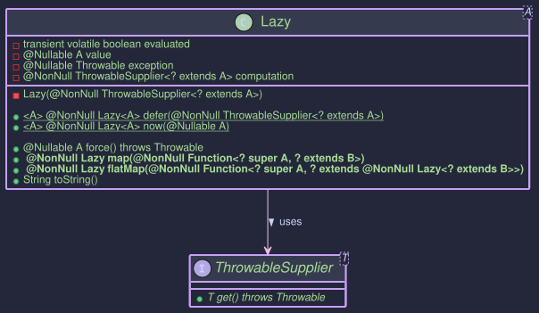
The HKT Bridge for Lazy
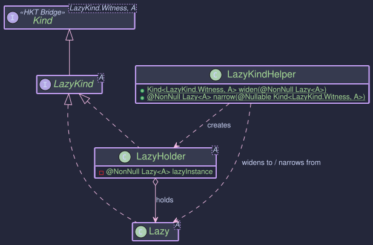
Typeclasses for Lazy
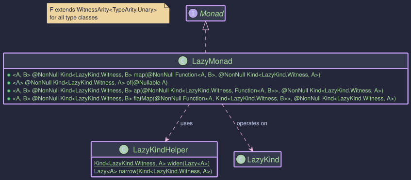
The lazy evaluation feature revolves around these key types:
ThrowableSupplier<T>: A functional interface similar tojava.util.function.Supplier, but itsget()method is allowed to throw anyThrowable(including checked exceptions). This is used as the underlying computation forLazy.Lazy<A>: The core class representing a computation that produces a value of typeAlazily. It takes aThrowableSupplier<? extends A>during construction (Lazy.defer). Evaluation is triggered only by theforce()method, and the result or exception is cached.Lazy.now(value)creates an already evaluated instance.LazyKind<A>: The HKT marker interface (Kind<LazyKind.Witness, A>) forLazy, allowing it to be used generically with type classes likeFunctorandMonad.LazyKindHelper: A utility class providing static methods to bridge between the concreteLazy<A>type and its HKT representationLazyKind<A>. It includes:widen(Lazy<A>): Wraps aLazyinstance intoLazyKind.narrow(Kind<LazyKind.Witness, A>): UnwrapsLazyKindback toLazy. ThrowsKindUnwrapExceptionif the input Kind is invalid.defer(ThrowableSupplier<A>): Factory to create aLazyKindfrom a computation.now(A value): Factory to create an already evaluatedLazyKind.force(Kind<LazyKind.Witness, A>): Convenience method to unwrap and force evaluation.
LazyMonad: The type class instance implementingMonad<LazyKind.Witness>,Applicative<LazyKind.Witness>, andFunctor<LazyKind.Witness>. It provides standard monadic operations (map,flatMap,of,ap) forLazyKind, ensuring laziness is maintained during composition.
Purpose and Usage
- Deferred Computation: Use
Lazywhen you have potentially expensive computations that should only execute if their result is actually needed. - Memoization: The result (or exception) of the computation is stored after the first call to
force(), subsequent calls return the cached result without re-computation. - Exception Handling: Computations wrapped in
Lazy.defercan throw anyThrowable. This exception is caught, memoized, and re-thrown byforce(). - Functional Composition:
LazyMonadallows chaining lazy computations usingmapandflatMapwhile preserving laziness. The composition itself doesn't trigger evaluation; only forcing the finalLazyKinddoes. - HKT Integration:
LazyKindandLazyMonadenable using lazy computations within generic functional code expectingKind<F, A>andMonad<F>.
// 1. Deferring a computation (that might throw checked exception)
java.util.concurrent.atomic.AtomicInteger counter = new java.util.concurrent.atomic.AtomicInteger(0);
Kind<LazyKind.Witness, String> deferredLazy = LAZY.defer(() -> {
System.out.println("Executing expensive computation...");
counter.incrementAndGet();
// Simulate potential failure
if (System.currentTimeMillis() % 2 == 0) {
// Throwing a checked exception is allowed by ThrowableSupplier
throw new java.io.IOException("Simulated IO failure");
}
Thread.sleep(50); // Simulate work
return "Computed Value";
});
// 2. Creating an already evaluated Lazy
Kind<LazyKind.Witness, String> nowLazy = LAZY.now("Precomputed Value");
// 3. Using the underlying Lazy type directly (less common when using HKT)
Lazy<String> directLazy = Lazy.defer(() -> { counter.incrementAndGet(); return "Direct Lazy"; });
Evaluation only happens when force() is called (directly or via the helper).
// (Continuing from above)
System.out.println("Lazy instances created. Counter: " + counter.get()); // Output: 0
try {
// Force the deferred computation
String result1 = LAZY.force(deferredLazy); // force() throws Throwable
System.out.println("Result 1: " + result1);
System.out.println("Counter after first force: " + counter.get()); // Output: 1
// Force again - uses memoized result
String result2 = LAZY.force(deferredLazy);
System.out.println("Result 2: " + result2);
System.out.println("Counter after second force: " + counter.get()); // Output: 1 (not re-computed)
// Force the 'now' instance
String resultNow = LAZY.force(nowLazy);
System.out.println("Result Now: " + resultNow);
System.out.println("Counter after forcing 'now': " + counter.get()); // Output: 1 (no computation ran for 'now')
} catch (Throwable t) { // Catch Throwable because force() can re-throw anything
System.err.println("Caught exception during force: " + t);
// Exception is also memoized:
try {
LAZY.force(deferredLazy);
} catch (Throwable t2) {
System.err.println("Caught memoized exception: " + t2);
System.out.println("Counter after failed force: " + counter.get()); // Output: 1
}
}
LazyMonad lazyMonad = LazyMonad.INSTANCE;
counter.set(0); // Reset counter for this example
Kind<LazyKind.Witness, Integer> initialLazy = LAZY.defer(() -> { counter.incrementAndGet(); return 10; });
// --- map ---
// Apply a function lazily
Function<Integer, String> toStringMapper = i -> "Value: " + i;
Kind<LazyKind.Witness, String> mappedLazy = lazyMonad.map(toStringMapper, initialLazy);
System.out.println("Mapped Lazy created. Counter: " + counter.get()); // Output: 0
try {
System.out.println("Mapped Result: " + LAZY.force(mappedLazy)); // Triggers evaluation of initialLazy & map
// Output: Mapped Result: Value: 10
System.out.println("Counter after forcing mapped: " + counter.get()); // Output: 1
} catch (Throwable t) { /* ... */ }
// --- flatMap ---
// Sequence lazy computations
Function<Integer, Kind<LazyKind.Witness, String>> multiplyAndStringifyLazy =
i -> LAZY.defer(() -> { // Inner computation is also lazy
int result = i * 5;
return "Multiplied: " + result;
});
Kind<LazyKind.Witness, String> flatMappedLazy = lazyMonad.flatMap(multiplyAndStringifyLazy, initialLazy);
System.out.println("FlatMapped Lazy created. Counter: " + counter.get()); // Output: 1 (map already forced initialLazy)
try {
System.out.println("FlatMapped Result: " + force(flatMappedLazy)); // Triggers evaluation of inner lazy
// Output: FlatMapped Result: Multiplied: 50
} catch (Throwable t) { /* ... */ }
// --- Chaining ---
Kind<LazyKind.Witness, String> chainedLazy = lazyMonad.flatMap(
value1 -> lazyMonad.map(
value2 -> "Combined: " + value1 + " & " + value2, // Combine results
LAZY.defer(()->value1 * 2) // Second lazy step, depends on result of first
),
LAZY.defer(()->5) // First lazy step
);
try{
System.out.println("Chained Result: "+force(chainedLazy)); // Output: Combined: 5 & 10
}catch(Throwable t){/* ... */}
List - Monadic Operations on Java Lists
Purpose
The ListMonad in the Higher-Kinded-J library provides a monadic interface for Java's standard java.util.List. It allows developers to work with lists in a more functional style, enabling operations like map, flatMap, and ap (apply) within the higher-kinded type system. This is particularly useful for sequencing operations that produce lists, transforming list elements, and applying functions within a list context, all while integrating with the generic Kind<F, A> abstractions.
Key benefits include:
- Functional Composition: Easily chain operations on lists, where each operation might return a list itself.
- HKT Integration:
ListKind(the higher-kinded wrapper forList) andListMonadallowListto be used with generic functions and type classes expectingKind<F, A>,Functor<F>,Applicative<F>, orMonad<F>. - Standard List Behavior: Leverages the familiar behavior of Java lists, such as non-uniqueness of elements and order preservation.
flatMapcorresponds to applying a function that returns a list to each element and then concatenating the results.
It implements Monad<ListKind<?>>, inheriting from Functor<ListKind<?>> and Applicative<ListKind<?>>.
Structure

How to Use ListMonad and ListKind
Creating Instances
ListKind<A> is the higher-kinded type representation for java.util.List<A>. You typically create ListKind instances using the ListKindHelper utility class or the of method from ListMonad.
LIST.widen(List)
Converts a standard java.util.List<A> into a Kind<ListKind.Witness, A>.
List<String> stringList = Arrays.asList("a", "b", "c");
Kind<ListKind.Witness, String> listKind1 = LIST.widen(stringList);
List<Integer> intList = Collections.singletonList(10);
Kind<ListKind.Witness, Integer> listKind2 = LIST.widen(intList);
List<Object> emptyList = Collections.emptyList();
Kind<ListKind.Witness, Object> listKindEmpty = LIST.widen(emptyList);
Lifts a single value into the ListKind context, creating a singleton list. A null input value results in an empty ListKind.
ListMonad listMonad = ListMonad.INSTANCE;
Kind<ListKind.Witness, String> listKindOneItem = listMonad.of("hello"); // Contains a list with one element: "hello"
Kind<ListKind.Witness, Integer> listKindAnotherItem = listMonad.of(42); // Contains a list with one element: 42
Kind<ListKind.Witness, Object> listKindFromNull = listMonad.of(null); // Contains an empty list
To get the underlying java.util.List<A> from a Kind<ListKind.Witness, A>, use LIST.narrow():
Kind<ListKind.Witness, A> listKind = LIST.widen(List.of("example"));
List<String> unwrappedList = LIST.narrow(listKind); // Returns Arrays.asList("example")
System.out.println(unwrappedList);
Key Operations
The ListMonad provides standard monadic operations:
map(Function<A, B> f, Kind<ListKind.Witness, A> fa):
Applies a function f to each element of the list within fa, returning a new ListKind containing the transformed elements.
ListMonad listMonad = ListMonad.INSTANCE;
ListKind<Integer> numbers = LIST.widen(Arrays.asList(1, 2, 3));
Function<Integer, String> intToString = i -> "Number: " + i;
ListKind<String> strings = listMonad.map(intToString, numbers);
// LIST.narrow(strings) would be: ["Number: 1", "Number: 2", "Number: 3"]
System.out.println(LIST.narrow(strings));
flatMap(Function<A, Kind<ListKind.Witness, B>> f, Kind<ListKind.Witness, A> ma):
Applies a function f to each element of the list within ma. The function f itself returns a ListKind<B>. flatMap then concatenates (flattens) all these resulting lists into a single ListKind<B>.
ListMonad listMonad = ListMonad.INSTANCE;
Kind<ListKind.Witness, Integer> initialValues = LIST.widen(Arrays.asList(1, 2, 3));
// Function that takes an integer and returns a list of itself and itself + 10
Function<Integer, Kind<ListKind.Witness, Integer>> replicateAndAddTen =
i -> LIST.widen(Arrays.asList(i, i + 10));
Kind<ListKind.Witness, Integer> flattenedList = listMonad.flatMap(replicateAndAddTen, initialValues);
// LIST.narrow(flattenedList) would be: [1, 11, 2, 12, 3, 13]
System.out.println(LIST.narrow(flattenedList));
// Example with empty list results
Function<Integer, Kind<ListKind.Witness, String>> toWordsIfEven =
i -> (i % 2 == 0) ?
LIST.widen(Arrays.asList("even", String.valueOf(i))) :
LIST.widen(new ArrayList<>()); // empty list for odd numbers
Kind<ListKind.Witness, String> wordsList = listMonad.flatMap(toWordsIfEven, initialValues);
// LIST.narrow(wordsList) would be: ["even", "2"]
System.out.println(LIST.narrow(wordsList));
ap(Kind<ListKind.Witness, Function<A, B>> ff, Kind<ListKind.Witness, A> fa):
Applies a list of functions ff to a list of values fa. This results in a new list where each function from ff is applied to each value in fa (Cartesian product style).
ListMonad listMonad = ListMonad.INSTANCE;
Function<Integer, String> addPrefix = i -> "Val: " + i;
Function<Integer, String> multiplyAndString = i -> "Mul: " + (i * 2);
Kind<ListKind.Witness, Function<Integer, String>> functions =
LIST.widen(Arrays.asList(addPrefix, multiplyAndString));
Kind<ListKind.Witness, Integer> values = LIST.widen(Arrays.asList(10, 20));
Kind<ListKind.Witness, String> appliedResults = listMonad.ap(functions, values);
// LIST.narrow(appliedResults) would be:
// ["Val: 10", "Val: 20", "Mul: 20", "Mul: 40"]
System.out.println(LIST.narrow(appliedResults));
To use ListMonad in generic contexts that operate over Kind<F, A>:
- Get an instance of
ListMonad:
ListMonad listMonad = ListMonad.INSTANCE;
- Wrap your List into
Kind:
List<Integer> myList = Arrays.asList(10, 20, 30);
Kind<ListKind.Witness, Integer> listKind = LIST.widen(myList);
- Use
ListMonadmethods:
import org.higherkindedj.hkt.Kind;
import org.higherkindedj.hkt.list.ListKind;
import org.higherkindedj.hkt.list.ListKindHelper;
import org.higherkindedj.hkt.list.ListMonad;
import java.util.Arrays;
import java.util.List;
import java.util.function.Function;
import java.util.stream.Collectors;
public class ListMonadExample {
public static void main(String[] args) {
ListMonad listMonad = ListMonad.INSTANCE;
// 1. Create a ListKind
Kind<ListKind.Witness, Integer> numbersKind = LIST.widen(Arrays.asList(1, 2, 3, 4));
// 2. Use map
Function<Integer, String> numberToDecoratedString = n -> "*" + n + "*";
Kind<ListKind.Witness, String> stringsKind = listMonad.map(numberToDecoratedString, numbersKind);
System.out.println("Mapped: " + LIST.narrow(stringsKind));
// Expected: Mapped: [*1*, *2*, *3*, *4*]
// 3. Use flatMap
// Function: integer -> ListKind of [integer, integer*10] if even, else empty ListKind
Function<Integer, Kind<ListKind.Witness, Integer>> duplicateIfEven = n -> {
if (n % 2 == 0) {
return LIST.widen(Arrays.asList(n, n * 10));
} else {
return LIST.widen(List.of()); // Empty list
}
};
Kind<ListKind.Witness, Integer> flatMappedKind = listMonad.flatMap(duplicateIfEven, numbersKind);
System.out.println("FlatMapped: " + LIST.narrow(flatMappedKind));
// Expected: FlatMapped: [2, 20, 4, 40]
// 4. Use of
Kind<ListKind.Witness, String> singleValueKind = listMonad.of("hello world");
System.out.println("From 'of': " + LIST.narrow(singleValueKind));
// Expected: From 'of': [hello world]
Kind<ListKind.Witness, String> fromNullOf = listMonad.of(null);
System.out.println("From 'of' with null: " + LIST.narrow(fromNullOf));
// Expected: From 'of' with null: []
// 5. Use ap
Kind<ListKind.Witness, Function<Integer, String>> listOfFunctions =
LIST.widen(Arrays.asList(
i -> "F1:" + i,
i -> "F2:" + (i * i)
));
Kind<ListKind.Witness, Integer> inputNumbersForAp = LIST.widen(Arrays.asList(5, 6));
Kind<ListKind.Witness, String> apResult = listMonad.ap(listOfFunctions, inputNumbersForAp);
System.out.println("Ap result: " + LIST.narrow(apResult));
// Expected: Ap result: [F1:5, F1:6, F2:25, F2:36]
// Unwrap to get back the standard List
List<Integer> finalFlatMappedList = LIST.narrow(flatMappedKind);
System.out.println("Final unwrapped flatMapped list: " + finalFlatMappedList);
}
}
This example demonstrates how to wrap Java Lists into ListKind, apply monadic operations using ListMonad, and then unwrap them back to standard Lists.
Maybe - Handling Optional Values with Non-Null Guarantee
Purpose
The Maybe<T> type in Higher-Kinded-J represents a value that might be present (Just<T>) or absent (Nothing<T>). It is conceptually similar to java.util.Optional<T> but with a key distinction: a Just<T> is guaranteed to hold a non-null value. This strictness helps prevent NullPointerExceptions when a value is asserted to be present. Maybe.fromNullable(T value) or MaybeMonad.of(T value) should be used if the input value could be null, as these will correctly produce a Nothing in such cases.
The MaybeMonad provides a monadic interface for Maybe, allowing for functional composition and integration with the Higher-Kinded Type (HKT) system. This facilitates chaining operations that may or may not yield a value, propagating the Nothing state automatically.
- Explicit Optionality with Non-Null Safety:
Just<T>guarantees its contained value is not null.Nothing<T>clearly indicates absence. - Functional Composition: Enables elegant chaining of operations using
map,flatMap, andap, whereNothingshort-circuits computations. - HKT Integration:
MaybeKind<A>(the HKT wrapper forMaybe<A>) andMaybeMonadallowMaybeto be used with generic functions and type classes that expectKind<F, A>,Functor<F>,Applicative<F>,Monad<M>, orMonadError<M, E>. - Error Handling for Absence:
MaybeMonadimplementsMonadError<MaybeKind.Witness, Unit>.Nothingis treated as the "error" state, withUnitas the phantom error type, signifying absence.
It implements MonadError<MaybeKind.Witness, Unit>, which transitively includes Monad<MaybeKind.Witness>, Applicative<MaybeKind.Witness>, and Functor<MaybeKind.Witness>.
Structure

How to Use MaybeMonad and Maybe
Creating Instances
Maybe<A> instances can be created directly using static factory methods on Maybe, or via MaybeMonad for HKT integration. MaybeKind<A> is the HKT wrapper.
Direct Maybe Creation:
Creates a Just holding a non-null value. Throws NullPointerException if value is null.
Maybe<String> justHello = Maybe.just("Hello"); // Just("Hello")
Maybe<String> illegalJust = Maybe.just(null); // Throws NullPointerException
Returns a singleton Nothing instance.
Maybe<Integer> noInt = Maybe.nothing(); // Nothing
Creates Just(value) if value is non-null, otherwise Nothing.
Maybe<String> fromPresent = Maybe.fromNullable("Present"); // Just("Present")
Maybe<String> fromNull = Maybe.fromNullable(null); // Nothing
MaybeKindHelper (for HKT wrapping):
MaybeKindHelper.widen(Maybe maybe)
Converts a Maybe<A> to MaybeKind<A>.
Kind<MaybeKind.Witness, String> kindJust = MAYBE.widen(Maybe.just("Wrapped"));
Kind<MaybeKind.Witness,Integer> kindNothing = MAYBE.widen(Maybe.nothing());
MaybeMonad Instance Methods:
Lifts a value into Kind<MaybeKind.Witness, A>. Uses Maybe.fromNullable() internally.
MaybeMonad maybeMonad = MaybeMonad.INSTANCE;
Kind<MaybeKind.Witness, String> kindFromMonad = maybeMonad.of("Monadic"); // Just("Monadic")
Kind<MaybeKind.Witness, String> kindNullFromMonad = maybeMonad.of(null); // Nothing
Creates a Kind<MaybeKind.Witness, E> representing Nothing. The error (Unit) argument is ignored.
Kind<MaybeKind.Witness, Double> errorKind = maybeMonad.raiseError(Unit.INSTANCE); // Nothing
To get the underlying Maybe<A> from a MaybeKind<A>, use MAYBE.narrow():
MaybeKind<String> kindJust = MAYBE.just("Example");
Maybe<String> unwrappedMaybe = MAYBE.narrow(kindJust); // Just("Example")
System.out.println("Unwrapped: " + unwrappedMaybe);
MaybeKind<Integer> kindNothing = MAYBE.nothing();
Maybe<Integer> unwrappedNothing = MAYBE.narrow(kindNothing); // Nothing
System.out.println("Unwrapped Nothing: " + unwrappedNothing);
Interacting with Maybe values
The Maybe interface itself provides useful methods:
isJust(): Returnstrueif it's aJust.isNothing(): Returnstrueif it's aNothing.get(): Returns the value ifJust, otherwise throwsNoSuchElementException. Use with caution.orElse(@NonNull T other): Returns the value ifJust, otherwise returnsother.orElseGet(@NonNull Supplier<? extends @NonNull T> other): Returns the value ifJust, otherwise invokesother.get().- The
Maybeinterface also has its ownmapandflatMapmethods, which are similar in behavior to those onMaybeMonadbut operate directly onMaybeinstances.
Key Operations (via MaybeMonad)
Applies f to the value inside ma if it's Just. If ma is Nothing, or if f returns null (which Maybe.fromNullable then converts to Nothing), the result is Nothing.
void mapExample() {
MaybeMonad maybeMonad = MaybeMonad.INSTANCE;
Kind<MaybeKind.Witness, Integer> justNum = MAYBE.just(10);
Kind<MaybeKind.Witness, Integer> nothingNum = MAYBE.nothing();
Function<Integer, String> numToString = n -> "Val: " + n;
Kind<MaybeKind.Witness, String> justStr = maybeMonad.map(numToString, justNum); // Just("Val: 10")
Kind<MaybeKind.Witness, String> nothingStr = maybeMonad.map(numToString, nothingNum); // Nothing
Function<Integer, String> numToNull = n -> null;
Kind<MaybeKind.Witness, String> mappedToNull = maybeMonad.map(numToNull, justNum); // Nothing
System.out.println("Map (Just): " + MAYBE.narrow(justStr));
System.out.println("Map (Nothing): " + MAYBE.narrow(nothingStr));
System.out.println("Map (To Null): " + MAYBE.narrow(mappedToNull));
}
If ma is Just(a), applies f to a. f must return a Kind<MaybeKind.Witness, B>. If ma is Nothing, or f returns Nothing, the result is Nothing.
void flatMapExample() {
MaybeMonad maybeMonad = MaybeMonad.INSTANCE;
Function<String, Kind<MaybeKind.Witness, Integer>> parseString = s -> {
try {
return MAYBE.just(Integer.parseInt(s));
} catch (NumberFormatException e) {
return MAYBE.nothing();
}
};
Kind<MaybeKind.Witness, String> justFiveStr = MAYBE.just("5");
Kind<MaybeKind.Witness, Integer> parsedJust = maybeMonad.flatMap(parseString, justFiveStr); // Just(5)
Kind<MaybeKind.Witness, String> justNonNumStr = MAYBE.just("abc");
Kind<MaybeKind.Witness, Integer> parsedNonNum = maybeMonad.flatMap(parseString, justNonNumStr); // Nothing
System.out.println("FlatMap (Just): " + MAYBE.narrow(parsedJust));
System.out.println("FlatMap (NonNum): " + MAYBE.narrow(parsedNonNum));
}
If ff is Just(f) and fa is Just(a), applies f to a. Otherwise, Nothing.
void apExample() {
MaybeMonad maybeMonad = MaybeMonad.INSTANCE;
Kind<MaybeKind.Witness, Integer> justNum = MAYBE.just(10);
Kind<MaybeKind.Witness, Integer> nothingNum = MAYBE.nothing();
Kind<MaybeKind.Witness, Function<Integer, String>> justFunc = MAYBE.just(i -> "Result: " + i);
Kind<MaybeKind.Witness, Function<Integer, String>> nothingFunc = MAYBE.nothing();
Kind<MaybeKind.Witness, String> apApplied = maybeMonad.ap(justFunc, justNum); // Just("Result: 10")
Kind<MaybeKind.Witness, String> apNothingFunc = maybeMonad.ap(nothingFunc, justNum); // Nothing
Kind<MaybeKind.Witness, String> apNothingVal = maybeMonad.ap(justFunc, nothingNum); // Nothing
System.out.println("Ap (Applied): " + MAYBE.narrow(apApplied));
System.out.println("Ap (Nothing Func): " + MAYBE.narrow(apNothingFunc));
System.out.println("Ap (Nothing Val): " + MAYBE.narrow(apNothingVal));
}
Example: handleErrorWith(Kind<MaybeKind.Witness, A> ma, Function<Void, Kind<MaybeKind.Witness, A>> handler)
If ma is Just, it's returned. If ma is Nothing (the "error" state), handler is invoked (with Unit.INSTANCE for Unit) to provide a recovery MaybeKind.
void handleErrorWithExample() {
MaybeMonad maybeMonad = MaybeMonad.INSTANCE;
Function<Unit, Kind<MaybeKind.Witness, String>> recover = v -> MAYBE.just("Recovered");
Kind<MaybeKind.Witness, String> handledJust = maybeMonad.handleErrorWith(MAYBE.just("Original"), recover); // Just("Original")
Kind<MaybeKind.Witness, String> handledNothing = maybeMonad.handleErrorWith(MAYBE.nothing(), recover); // Just("Recovered")
System.out.println("HandleError (Just): " + MAYBE.narrow(handledJust));
System.out.println("HandleError (Nothing): " + MAYBE.narrow(handledNothing));
}
A complete example demonstrating generic usage:
public void monadExample() {
MaybeMonad maybeMonad = MaybeMonad.INSTANCE;
// 1. Create MaybeKind instances
Kind<MaybeKind.Witness, Integer> presentIntKind = MAYBE.just(100);
Kind<MaybeKind.Witness, Integer> absentIntKind = MAYBE.nothing();
Kind<MaybeKind.Witness, String> nullInputStringKind = maybeMonad.of(null); // Becomes Nothing
// 2. Use map
Function<Integer, String> intToStatus = n -> "Status: " + n;
Kind<MaybeKind.Witness, String> mappedPresent = maybeMonad.map(intToStatus, presentIntKind);
Kind<MaybeKind.Witness, String> mappedAbsent = maybeMonad.map(intToStatus, absentIntKind);
System.out.println("Mapped (Present): " + MAYBE.narrow(mappedPresent)); // Just(Status: 100)
System.out.println("Mapped (Absent): " + MAYBE.narrow(mappedAbsent)); // Nothing
// 3. Use flatMap
Function<Integer, Kind<MaybeKind.Witness, String>> intToPositiveStatusKind = n ->
(n > 0) ? maybeMonad.of("Positive: " + n) : MAYBE.nothing();
Kind<MaybeKind.Witness, String> flatMappedPresent = maybeMonad.flatMap(intToPositiveStatusKind, presentIntKind);
Kind<MaybeKind.Witness, String> flatMappedZero = maybeMonad.flatMap(intToPositiveStatusKind, maybeMonad.of(0)); // 0 is not > 0
System.out.println("FlatMapped (Present Positive): " + MAYBE.narrow(flatMappedPresent)); // Just(Positive: 100)
System.out.println("FlatMapped (Zero): " + MAYBE.narrow(flatMappedZero)); // Nothing
// 4. Use 'of' and 'raiseError'
Kind<MaybeKind.Witness, String> fromOf = maybeMonad.of("Direct Value");
Kind<MaybeKind.Witness, String> fromRaiseError = maybeMonad.raiseError(Unit.INSTANCE); // Creates Nothing
System.out.println("From 'of': " + MAYBE.narrow(fromOf)); // Just(Direct Value)
System.out.println("From 'raiseError': " + MAYBE.narrow(fromRaiseError)); // Nothing
System.out.println("From 'of(null)': " + MAYBE.narrow(nullInputStringKind)); // Nothing
// 5. Use handleErrorWith
Function<Void, Kind<MaybeKind.Witness, Integer>> recoverWithDefault =
v -> maybeMonad.of(-1); // Default value if absent
Kind<MaybeKind.Witness, Integer> recoveredFromAbsent =
maybeMonad.handleErrorWith(absentIntKind, recoverWithDefault);
Kind<MaybeKind.Witness, Integer> notRecoveredFromPresent =
maybeMonad.handleErrorWith(presentIntKind, recoverWithDefault);
System.out.println("Recovered (from Absent): " + MAYBE.narrow(recoveredFromAbsent)); // Just(-1)
System.out.println("Recovered (from Present): " + MAYBE.narrow(notRecoveredFromPresent)); // Just(100)
// Using the generic processData function
Kind<MaybeKind.Witness, String> processedPresent = processData(presentIntKind, x -> "Processed: " + x, "N/A", maybeMonad);
Kind<MaybeKind.Witness, String> processedAbsent = processData(absentIntKind, x -> "Processed: " + x, "N/A", maybeMonad);
System.out.println("Generic Process (Present): " + MAYBE.narrow(processedPresent)); // Just(Processed: 100)
System.out.println("Generic Process (Absent): " + MAYBE.narrow(processedAbsent)); // Just(N/A)
// Unwrap to get back the standard Maybe
Maybe<String> finalMappedMaybe = MAYBE.narrow(mappedPresent);
System.out.println("Final unwrapped mapped maybe: " + finalMappedMaybe); // Just(Status: 100)
}
public static <A, B> Kind<MaybeKind.Witness, B> processData(
Kind<MaybeKind.Witness, A> inputKind,
Function<A, B> mapper,
B defaultValueOnAbsence,
MaybeMonad monad
) {
// inputKind is now Kind<MaybeKind.Witness, A>, which is compatible with monad.map
Kind<MaybeKind.Witness, B> mappedKind = monad.map(mapper, inputKind);
// The result of monad.map is Kind<MaybeKind.Witness, B>.
// The handler (Unit v) -> monad.of(defaultValueOnAbsence) also produces Kind<MaybeKind.Witness, B>.
return monad.handleErrorWith(mappedKind, (Unit v) -> monad.of(defaultValueOnAbsence));
}
This example highlights how MaybeMonad facilitates working with optional values in a functional, type-safe manner, especially when dealing with the HKT abstractions and requiring non-null guarantees for present values.
Optional - Monadic Operations for Java Optional
Purpose
The OptionalMonad in the Higher-Kinded-J library provides a monadic interface for Java's standard java.util.Optional<T>. It allows developers to work with Optional values in a more functional and composable style, enabling operations like map, flatMap, and ap (apply) within the higher-kinded type (HKT) system. This is particularly useful for sequencing operations that may or may not produce a value, handling the presence or absence of values gracefully.
Key benefits include:
- Functional Composition: Easily chain operations on
Optionals, where each operation might return anOptionalitself. If any step results in anOptional.empty(), subsequent operations are typically short-circuited, propagating the empty state. - HKT Integration:
OptionalKind<A>(the higher-kinded wrapper forOptional<A>) andOptionalMonadallowOptionalto be used with generic functions and type classes expectingKind<F, A>,Functor<F>,Applicative<F>,Monad<M>, or evenMonadError<M, E>. - Error Handling for Absence:
OptionalMonadimplementsMonadError<OptionalKind.Witness, Unit>. In this context,Optional.empty()is treated as the "error" state, andUnitis used as the phantom error type, signifying absence rather than a traditional exception.
It implements MonadError<OptionalKind.Witness, Unit>, which means it also transitively implements Monad<OptionalKind.Witness>, Applicative<OptionalKind.Witness>, and Functor<OptionalKind.Witness>.
Structure
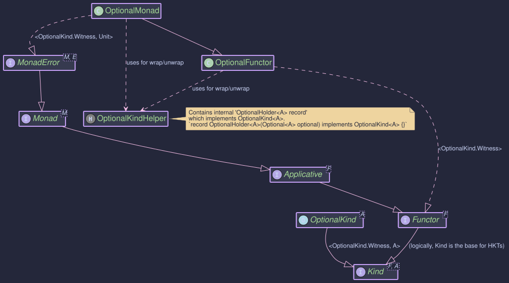
How to Use OptionalMonad and OptionalKind
Creating Instances
OptionalKind<A> is the higher-kinded type representation for java.util.Optional<A>. You typically create OptionalKind instances using the OptionalKindHelper utility class or the of and raiseError methods from OptionalMonad.
OPTIONAL.widen(Optional)
Converts a standard java.util.Optional<A> into an OptionalKind<A>.
// Wrapping a present Optional
Optional<String> presentOptional = Optional.of("Hello");
OptionalKind<String> kindPresent = OPTIONAL.widen(presentOptional);
// Wrapping an empty Optional
Optional<Integer> emptyOptional = Optional.empty();
OptionalKind<Integer> kindEmpty = OPTIONAL.widen(emptyOptional);
// Wrapping an Optional that might be null (though Optional itself won't be null)
String possiblyNullValue = null;
Optional<String> nullableOptional = Optional.ofNullable(possiblyNullValue); // Results in Optional.empty()
OptionalKind<String> kindFromNullable = OPTIONAL.widen(nullableOptional);
Lifts a single value (which can be null) into the OptionalKind context. It uses Optional.ofNullable(value) internally.
OptionalMonad optionalMonad = OptionalMonad.INSTANCE;
Kind<OptionalKind.Witness, String> kindFromValue = optionalMonad.of("World"); // Wraps Optional.of("World")
Kind<OptionalKind.Witness, Integer> kindFromNullValue = optionalMonad.of(null); // Wraps Optional.empty()
Creates an empty OptionalKind. Since Unit is the error type, this method effectively represents the "error" state of an Optional, which is Optional.empty(). The error argument (which would be Unit.INSTANCE for Unit) is ignored.
OptionalMonad optionalMonad = OptionalMonad.INSTANCE;
Kind<OptionalKind.Witness, String> emptyKindFromError = optionalMonad.raiseError(Unit.INSTANCE); // Represents Optional.empty()
To get the underlying java.util.Optional<A> from an OptionalKind<A>, use OPTIONAL.narrow():
OptionalKind<String> kindPresent = OPTIONAL.widen(Optional.of("Example"));
Optional<String> unwrappedOptional = OPTIONAL.narrow(kindPresent); // Returns Optional.of("Example")
System.out.println("Unwrapped: " + unwrappedOptional);
OptionalKind<Integer> kindEmpty = OPTIONAL.widen(Optional.empty());
Optional<Integer> unwrappedEmpty = OPTIONAL.narrow(kindEmpty); // Returns Optional.empty()
System.out.println("Unwrapped Empty: " + unwrappedEmpty);
Key Operations
The OptionalMonad provides standard monadic and error-handling operations:
Applies a function f to the value inside fa if it's present. If fa is empty, it remains empty. The function f can return null, which Optional.map will turn into an Optional.empty().
public void mapExample() {
OptionalMonad optionalMonad = OptionalMonad.INSTANCE;
OptionalKind<Integer> presentNumber = OPTIONAL.widen(Optional.of(10));
OptionalKind<Integer> emptyNumber = OPTIONAL.widen(Optional.empty());
Function<Integer, String> intToString = i -> "Number: " + i;
Kind<OptionalKind.Witness, String> presentString = optionalMonad.map(intToString, presentNumber);
// OPTIONAL.narrow(presentString) would be Optional.of("Number: 10")
Kind<OptionalKind.Witness, String> emptyString = optionalMonad.map(intToString, emptyNumber);
// OPTIONAL.narrow(emptyString) would be Optional.empty()
Function<Integer, String> intToNull = i -> null;
Kind<OptionalKind.Witness, String> mappedToNull = optionalMonad.map(intToNull, presentNumber);
// OPTIONAL.narrow(mappedToNull) would be Optional.empty()
System.out.println("Map (Present): " + OPTIONAL.narrow(presentString));
System.out.println("Map (Empty): " + OPTIONAL.narrow(emptyString));
System.out.println("Map (To Null): " + OPTIONAL.narrow(mappedToNull));
}
Applies a function f to the value inside ma if it's present. The function f itself returns an OptionalKind<B>. If ma is empty, or if f returns an empty OptionalKind, the result is an empty OptionalKind.
public void flatMapExample() {
OptionalMonad optionalMonad = OptionalMonad.INSTANCE;
OptionalKind<String> presentInput = OPTIONAL.widen(Optional.of("5"));
OptionalKind<String> emptyInput = OPTIONAL.widen(Optional.empty());
Function<String, Kind<OptionalKind.Witness, Integer>> parseToIntKind = s -> {
try {
return OPTIONAL.widen(Optional.of(Integer.parseInt(s)));
} catch (NumberFormatException e) {
return OPTIONAL.widen(Optional.empty());
}
};
Kind<OptionalKind.Witness, Integer> parsedPresent = optionalMonad.flatMap(parseToIntKind, presentInput);
// OPTIONAL.narrow(parsedPresent) would be Optional.of(5)
Kind<OptionalKind.Witness, Integer> parsedEmpty = optionalMonad.flatMap(parseToIntKind, emptyInput);
// OPTIONAL.narrow(parsedEmpty) would be Optional.empty()
OptionalKind<String> nonNumericInput = OPTIONAL.widen(Optional.of("abc"));
Kind<OptionalKind.Witness, Integer> parsedNonNumeric = optionalMonad.flatMap(parseToIntKind, nonNumericInput);
// OPTIONAL.narrow(parsedNonNumeric) would be Optional.empty()
System.out.println("FlatMap (Present): " + OPTIONAL.narrow(parsedPresent));
System.out.println("FlatMap (Empty Input): " + OPTIONAL.narrow(parsedEmpty));
System.out.println("FlatMap (Non-numeric): " + OPTIONAL.narrow(parsedNonNumeric));
}
Applies an OptionalKind containing a function ff to an OptionalKind containing a value fa. If both are present, the function is applied. Otherwise, the result is empty.
public void apExample() {
OptionalMonad optionalMonad = OptionalMonad.INSTANCE;
OptionalKind<Function<Integer, String>> presentFuncKind =
OPTIONAL.widen(Optional.of(i -> "Value: " + i));
OptionalKind<Function<Integer, String>> emptyFuncKind =
OPTIONAL.widen(Optional.empty());
OptionalKind<Integer> presentValueKind = OPTIONAL.widen(Optional.of(100));
OptionalKind<Integer> emptyValueKind = OPTIONAL.widen(Optional.empty());
// Both present
Kind<OptionalKind.Witness, String> result1 = optionalMonad.ap(presentFuncKind, presentValueKind);
// OPTIONAL.narrow(result1) is Optional.of("Value: 100")
// Function empty
Kind<OptionalKind.Witness, String> result2 = optionalMonad.ap(emptyFuncKind, presentValueKind);
// OPTIONAL.narrow(result2) is Optional.empty()
// Value empty
Kind<OptionalKind.Witness, String> result3 = optionalMonad.ap(presentFuncKind, emptyValueKind);
// OPTIONAL.narrow(result3) is Optional.empty()
System.out.println("Ap (Both Present): " + OPTIONAL.narrow(result1));
System.out.println("Ap (Function Empty): " + OPTIONAL.narrow(result2));
System.out.println("Ap (Value Empty): " + OPTIONAL.narrow(result3));
}
Example: handleErrorWith(Kind<OptionalKind.Witness, A> ma, Function<Unit, Kind<OptionalKind.Witness, A>> handler)
If ma is present, it's returned. If ma is empty (the "error" state), the handler function is invoked (with Unit.INSTANCE as the Unit argument) to provide a recovery OptionalKind.
public void handleErrorWithExample() {
OptionalMonad optionalMonad = OptionalMonad.INSTANCE;
Kind<OptionalKind.Witness, String> presentKind = OPTIONAL.widen(Optional.of("Exists"));
OptionalKind<String> emptyKind = OPTIONAL.widen(Optional.empty());
Function<Unit, Kind<OptionalKind.Witness, String>> recoveryFunction =
(Unit unitInstance) -> OPTIONAL.widen(Optional.of("Recovered Value"));
// Handling error on a present OptionalKind
Kind<OptionalKind.Witness, String> handledPresent =
optionalMonad.handleErrorWith(presentKind, recoveryFunction);
// OPTIONAL.narrow(handledPresent) is Optional.of("Exists")
// Handling error on an empty OptionalKind
Kind<OptionalKind.Witness, String> handledEmpty =
optionalMonad.handleErrorWith(emptyKind, recoveryFunction);
// OPTIONAL.narrow(handledEmpty) is Optional.of("Recovered Value")
System.out.println("HandleError (Present): " + OPTIONAL.narrow(handledPresent));
System.out.println("HandleError (Empty): " + OPTIONAL.narrow(handledEmpty));
}
- OptionalExample.java
To use
OptionalMonadin generic contexts that operate overKind<F, A>:
public void monadExample() {
OptionalMonad optionalMonad = OptionalMonad.INSTANCE;
// 1. Create OptionalKind instances
OptionalKind<Integer> presentIntKind = OPTIONAL.widen(Optional.of(10));
Kind<OptionalKind.Witness, Integer> emptyIntKind = optionalMonad.raiseError(null); // Creates empty
// 2. Use map
Function<Integer, String> intToMessage = n -> "Value is " + n;
Kind<OptionalKind.Witness, String> mappedPresent = optionalMonad.map(intToMessage, presentIntKind);
Kind<OptionalKind.Witness, String> mappedEmpty = optionalMonad.map(intToMessage, emptyIntKind);
System.out.println("Mapped (Present): " + OPTIONAL.narrow(mappedPresent)); // Optional[Value is 10]
System.out.println("Mapped (Empty): " + OPTIONAL.narrow(mappedEmpty)); // Optional.empty
// 3. Use flatMap
Function<Integer, Kind<OptionalKind.Witness, Double>> intToOptionalDouble = n ->
(n > 0) ? optionalMonad.of(n / 2.0) : optionalMonad.raiseError(null);
Kind<OptionalKind.Witness, Double> flatMappedPresent = optionalMonad.flatMap(intToOptionalDouble, presentIntKind);
Kind<OptionalKind.Witness, Double> flatMappedEmpty = optionalMonad.flatMap(intToOptionalDouble, emptyIntKind);
Kind<OptionalKind.Witness, Integer> zeroIntKind = optionalMonad.of(0);
Kind<OptionalKind.Witness, Double> flatMappedZero = optionalMonad.flatMap(intToOptionalDouble, zeroIntKind);
System.out.println("FlatMapped (Present): " + OPTIONAL.narrow(flatMappedPresent)); // Optional[5.0]
System.out.println("FlatMapped (Empty): " + OPTIONAL.narrow(flatMappedEmpty)); // Optional.empty
System.out.println("FlatMapped (Zero): " + OPTIONAL.narrow(flatMappedZero)); // Optional.empty
// 4. Use 'of' and 'raiseError' (already shown in creation)
// 5. Use handleErrorWith
Function<Unit, Kind<OptionalKind.Witness, Integer>> recoverWithDefault =
v -> optionalMonad.of(-1); // Default value if empty
Kind<OptionalKind.Witness, Integer> recoveredFromEmpty =
optionalMonad.handleErrorWith(emptyIntKind, recoverWithDefault);
Kind<OptionalKind.Witness, Integer> notRecoveredFromPresent =
optionalMonad.handleErrorWith(presentIntKind, recoverWithDefault);
System.out.println("Recovered (from Empty): " + OPTIONAL.narrow(recoveredFromEmpty)); // Optional[-1]
System.out.println("Recovered (from Present): " + OPTIONAL.narrow(notRecoveredFromPresent)); // Optional[10]
// Unwrap to get back the standard Optional
Optional<String> finalMappedOptional = OPTIONAL.narrow(mappedPresent);
System.out.println("Final unwrapped mapped optional: " + finalMappedOptional);
}
This example demonstrates wrapping Optionals, applying monadic and error-handling operations via OptionalMonad, and unwrapping back to standard Optionals. The MonadError capabilities allow treating absence (Optional.empty) as a recoverable "error" state.
Reader Monad - Managed Dependencies and Configuration
Purpose
The Reader monad is a functional programming pattern primarily used for managing dependencies and context propagation in a clean and composable way. Imagine you have multiple functions or components that all need access to some shared, read-only environment, such as:
- Configuration settings (database URLs, API keys, feature flags).
- Shared resources (thread pools, connection managers).
- User context (user ID, permissions).
Instead of explicitly passing this environment object as an argument to every single function (which can become cumbersome and clutter signatures), the Reader monad encapsulates computations that depend on such an environment.
A Reader<R, A> represents a computation that, when provided with an environment of type R, will produce a value of type A. It essentially wraps a function R -> A.
The benefits of using the Reader monad include:
- Implicit Dependency Injection: The environment (
R) is implicitly passed along the computation chain. Functions defined within the Reader context automatically get access to the environment when needed, without needing it explicitly in their signature. - Composability: Reader computations can be easily chained together using standard monadic operations like
mapandflatMap. - Testability: Dependencies are managed explicitly when the final Reader computation is run, making it easier to provide mock environments or configurations during testing.
- Code Clarity: Reduces the need to pass configuration objects through multiple layers of functions.
In Higher-Kinded-J, the Reader monad pattern is implemented via the Reader<R, A> interface and its corresponding HKT simulation types (ReaderKind, ReaderKindHelper) and type class instances (ReaderMonad, ReaderApplicative, ReaderFunctor).
Structure
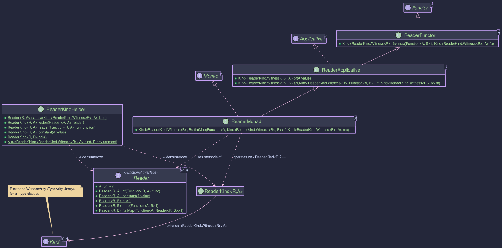
The Reader<R, A> Type
The core type is the Reader<R, A> functional interface:
@FunctionalInterface
public interface Reader<R, A> {
@Nullable A run(@NonNull R r); // The core function: Environment -> Value
// Static factories
static <R, A> @NonNull Reader<R, A> of(@NonNull Function<R, A> runFunction);
static <R, A> @NonNull Reader<R, A> constant(@Nullable A value);
static <R> @NonNull Reader<R, R> ask();
// Instance methods (for composition)
default <B> @NonNull Reader<R, B> map(@NonNull Function<? super A, ? extends B> f);
default <B> @NonNull Reader<R, B> flatMap(@NonNull Function<? super A, ? extends Reader<R, ? extends B>> f);
}
run(R r): Executes the computation by providing the environmentrand returning the resultA.of(Function<R, A>): Creates aReaderfrom a given function.constant(A value): Creates aReaderthat ignores the environment and always returns the provided value.ask(): Creates aReaderthat simply returns the environment itself as the result.map(Function<A, B>): Transforms the resultAtoBafter the reader is run, without affecting the required environmentR.flatMap(Function<A, Reader<R, B>>): Sequences computations. It runs the first reader, uses its resultAto create a second reader (Reader<R, B>), and then runs that second reader with the original environmentR.
Reader Components
To integrate Reader with Higher-Kinded-J:
ReaderKind<R, A>: The marker interface extendingKind<ReaderKind.Witness<R>, A>. The witness typeFisReaderKind.Witness<R>(whereRis fixed for a given monad instance), and the value typeAis the result type of the reader.ReaderKindHelper: The utility class with static methods:widen(Reader<R, A>): Converts aReadertoReaderKind<R, A>.narrow(Kind<ReaderKind.Witness<R>, A>): ConvertsReaderKindback toReader. ThrowsKindUnwrapExceptionif the input is invalid.reader(Function<R, A>): Factory method to create aReaderKindfrom a function.constant(A value): Factory method for aReaderKindreturning a constant value.ask(): Factory method for aReaderKindthat returns the environment.runReader(Kind<ReaderKind.Witness<R>, A> kind, R environment): The primary way to execute aReaderKindcomputation by providing the environment.
Type Class Instances (ReaderFunctor, ReaderApplicative, ReaderMonad)
These classes provide the standard functional operations for ReaderKind.Witness<R>, allowing you to treat Reader computations generically within Higher-Kinded-J:
ReaderFunctor<R>: ImplementsFunctor<ReaderKind.Witness<R>>. Provides themapoperation.ReaderApplicative<R>: ExtendsReaderFunctor<R>and implementsApplicative<ReaderKind.Witness<R>>. Providesof(lifting a value) andap(applying a wrapped function to a wrapped value).ReaderMonad<R>: ExtendsReaderApplicative<R>and implementsMonad<ReaderKind.Witness<R>>. ProvidesflatMapfor sequencing computations that depend on previous results while implicitly carrying the environmentR.
You typically instantiate ReaderMonad<R> for the specific environment type R you are working with.
1. Define Your Environment
// Example Environment: Application Configuration
record AppConfig(String databaseUrl, int timeoutMillis, String apiKey) {}
2. Create Reader Computations
Use ReaderKindHelper factory methods:
import static org.higherkindedj.hkt.reader.ReaderKindHelper.*;
import org.higherkindedj.hkt.Kind;
import org.higherkindedj.hkt.reader.ReaderKind;
// Reader that retrieves the database URL from the config
Kind<ReaderKind.Witness<AppConfig>, String> getDbUrl = reader(AppConfig::databaseUrl);
// Reader that retrieves the timeout
Kind<ReaderKind.Witness<AppConfig>, Integer> getTimeout = reader(AppConfig::timeoutMillis);
// Reader that returns a constant value, ignoring the environment
Kind<ReaderKind.Witness<AppConfig>, String> getDefaultUser = constant("guest");
// Reader that returns the entire configuration environment
Kind<ReaderKind.Witness<AppConfig>, AppConfig> getConfig = ask();
3. Get the ReaderMonad Instance
Instantiate the monad for your specific environment type R.
import org.higherkindedj.hkt.reader.ReaderMonad;
// Monad instance for computations depending on AppConfig
ReaderMonad<AppConfig> readerMonad = new ReaderMonad<>();
4. Compose Computations using map and flatMap
Use the methods on the readerMonad instance.
// Example 1: Map the timeout value
Kind<ReaderKind.Witness<AppConfig>, String> timeoutMessage = readerMonad.map(
timeout -> "Timeout is: " + timeout + "ms",
getTimeout // Input: Kind<ReaderKind.Witness<AppConfig>, Integer>
);
// Example 2: Use flatMap to get DB URL and then construct a connection string (depends on URL)
Function<String, Kind<ReaderKind.Witness<AppConfig>, String>> buildConnectionString =
dbUrl -> reader( // <- We return a new Reader computation
config -> dbUrl + "?apiKey=" + config.apiKey() // Access apiKey via the 'config' env
);
Kind<ReaderKind.Witness<AppConfig>, String> connectionStringReader = readerMonad.flatMap(
buildConnectionString, // Function: String -> Kind<ReaderKind.Witness<AppConfig>, String>
getDbUrl // Input: Kind<ReaderKind.Witness<AppConfig>, String>
);
// Example 3: Combine multiple values using mapN (from Applicative)
Kind<ReaderKind.Witness<AppConfig>, String> dbInfo = readerMonad.map2(
getDbUrl,
getTimeout,
(url, timeout) -> "DB: " + url + " (Timeout: " + timeout + ")"
);
5. Run the Computation
Provide the actual environment using ReaderKindHelper.runReader:
AppConfig productionConfig = new AppConfig("prod-db.example.com", 5000, "prod-key-123");
AppConfig stagingConfig = new AppConfig("stage-db.example.com", 10000, "stage-key-456");
// Run the composed computations with different environments
String prodTimeoutMsg = runReader(timeoutMessage, productionConfig);
String stageTimeoutMsg = runReader(timeoutMessage, stagingConfig);
String prodConnectionString = runReader(connectionStringReader, productionConfig);
String stageConnectionString = runReader(connectionStringReader, stagingConfig);
String prodDbInfo = runReader(dbInfo, productionConfig);
String stageDbInfo = runReader(dbInfo, stagingConfig);
// Get the raw config using ask()
AppConfig retrievedProdConfig = runReader(getConfig, productionConfig);
System.out.println("Prod Timeout: " + prodTimeoutMsg); // Output: Timeout is: 5000ms
System.out.println("Stage Timeout: " + stageTimeoutMsg); // Output: Timeout is: 10000ms
System.out.println("Prod Connection: " + prodConnectionString); // Output: prod-db.example.com?apiKey=prod-key-123
System.out.println("Stage Connection: " + stageConnectionString);// Output: stage-db.example.com?apiKey=stage-key-456
System.out.println("Prod DB Info: " + prodDbInfo); // Output: DB: prod-db.example.com (Timeout: 5000)
System.out.println("Stage DB Info: " + stageDbInfo); // Output: DB: stage-db.example.com (Timeout: 10000)
System.out.println("Retrieved Prod Config: " + retrievedProdConfig); // Output: AppConfig[databaseUrl=prod-db.example.com, timeoutMillis=5000, apiKey=prod-key-123]
Notice how the functions (buildConnectionString, the lambda in map2) don't need AppConfig as a parameter, but they can access it when needed within the reader(...) factory or implicitly via flatMap composition. The configuration is only provided once at the end when runReader is called.
Sometimes, a computation depending on an environment R might perform an action (like logging or initialising a component based on R) but doesn't produce a specific value other than signaling its completion. In such cases, the result type A of the Reader<R, A> can be org.higherkindedj.hkt.unit.Unit.
import static org.higherkindedj.hkt.reader.ReaderKindHelper.*; import org.higherkindedj.hkt.Kind; import org.higherkindedj.hkt.reader.ReaderKind; import org.higherkindedj.hkt.reader.ReaderMonad; import org.higherkindedj.hkt.unit.Unit; // Import Unit
// Assume AppConfig is defined as before // record AppConfig(String databaseUrl, int timeoutMillis, String apiKey) {}
// ReaderMonad instance (can be the same as before)
// ReaderMonad
// A Reader computation that performs a side-effect (printing to console)
// using the config and returns Unit.
Kind<ReaderKind.Witness
// You can compose this with other Reader computations.
// For example, get the DB URL and then log the API key.
Kind<ReaderKind.Witness
// To run it: // AppConfig currentConfig = new AppConfig("prod-db.example.com", 5000, "prod-key-123"); // Unit result = runReader(logApiKey, currentConfig); // System.out.println("Log API Key result: " + result); // Output: Log API Key result: ()
// Unit resultChained = runReader(getUrlAndLogKey, currentConfig); // System.out.println("Get URL and Log Key result: " + resultChained); // Output: // Database URL for logging context: prod-db.example.com // Accessed API Key: prod... // Get URL and Log Key result: ()
In this example:
logApiKeyis aReader<AppConfig, Unit>. Its purpose is to perform an action (logging) using theAppConfig.- It returns
Unit.INSTANCEto signify that the action completed successfully but yields no other specific data. - When composing, flatMap can be used to sequence such an action. If logApiKey were the last step in a sequence, the overall
flatMapchain would also result inKind<ReaderKind.Witness<AppConfig>, Unit>.
The Reader monad (Reader<R, A>, ReaderKind, ReaderMonad) in Higher-Kinded-J provides a functional approach to dependency injection and configuration management.
It allows you to define computations that depend on a read-only environment R without explicitly passing R everywhere. By using Higher-Kinded-J and the ReaderMonad, you can compose these dependent functions cleanly using map and flatMap, providing the actual environment only once when the final computation is executed via runReader.
This leads to more modular, testable, and less cluttered code when dealing with shared context.
State Monad - Managing State Functionally
Purpose
In many applications, we need to manage computations that involve state that changes over time.
Examples could include:
- A counter being incremented.
- A configuration object being updated.
- The state of a game character.
- Parsing input where the current position needs to be tracked.
While imperative programming uses mutable variables, functional programming prefers immutability. The State monad provides a purely functional way to handle stateful computations without relying on mutable variables.
A State<S, A> represents a computation that takes an initial state S and produces a result value A along with a new, updated state S. It essentially wraps a function of the type S -> (A, S).
Key Benefits
- Explicit State: The state manipulation is explicitly encoded within the type
State<S, A>. - Purity: Functions using the State monad remain pure; they don't cause side effects by mutating external state. Instead, they describe how the state should transform.
- Composability: State computations can be easily sequenced using standard monadic operations (
map,flatMap), where the state is automatically threaded through the sequence without explicitly threading state everywhere. - Decoupling: Logic is decoupled from state handling mechanics.
- Testability: Pure state transitions are easier to test and reason about than code relying on mutable side effects.
In Higher-Kinded-J, the State monad pattern is implemented via the State<S, A> interface, its associated StateTuple<S, A> record, the HKT simulation types (StateKind, StateKindHelper), and the type class instances (StateMonad, StateApplicative, StateFunctor).
Structure
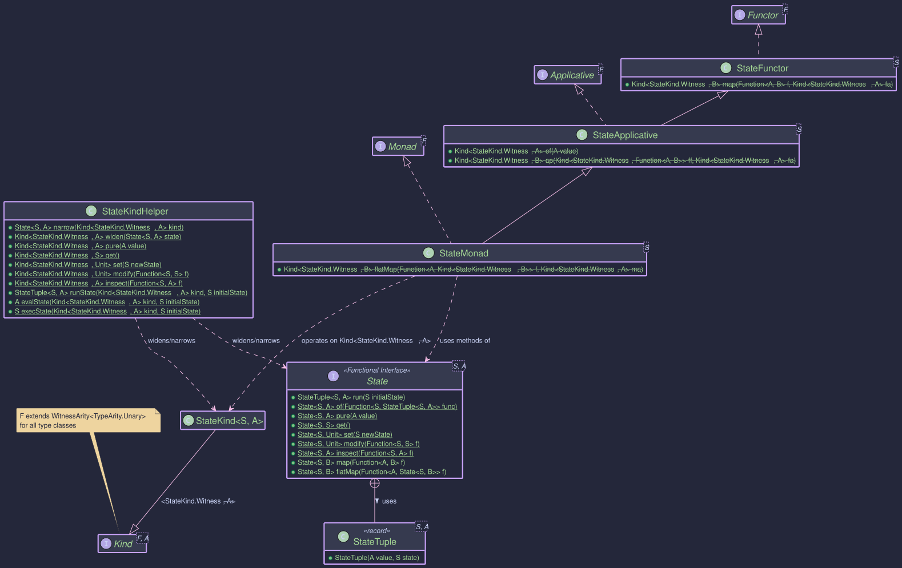
The State<S, A> Type and StateTuple<S, A>
The core type is the State<S, A> functional interface:
@FunctionalInterface
public interface State<S, A> {
// Represents the result: final value A and final state S
record StateTuple<S, A>(@Nullable A value, @NonNull S state) { /* ... */ }
// The core function: Initial State -> (Result Value, Final State)
@NonNull StateTuple<S, A> run(@NonNull S initialState);
// Static factories
static <S, A> @NonNull State<S, A> of(@NonNull Function<@NonNull S, @NonNull StateTuple<S, A>> runFunction);
static <S, A> @NonNull State<S, A> pure(@Nullable A value); // Creates State(s -> (value, s))
static <S> @NonNull State<S, S> get(); // Creates State(s -> (s, s))
static <S> @NonNull State<S, Unit> set(@NonNull S newState); // Creates State(s -> (Unit.INSTANCE, newState))
static <S> @NonNull State<S, Unit> modify(@NonNull Function<@NonNull S, @NonNull S> f); // Creates State(s -> (Unit.INSTANCE, f(s)))
static <S, A> @NonNull State<S, A> inspect(@NonNull Function<@NonNull S, @Nullable A> f); // Creates State(s -> (f(s), s))
// Instance methods for composition
default <B> @NonNull State<S, B> map(@NonNull Function<? super A, ? extends B> f);
default <B> @NonNull State<S, B> flatMap(@NonNull Function<? super A, ? extends State<S, ? extends B>> f);
}
StateTuple<S, A>: A simple record holding the pair(value: A, state: S)returned by running aStatecomputation.run(S initialState): Executes the stateful computation by providing the starting state.of(...): The basic factory method taking the underlying functionS -> StateTuple<S, A>.pure(A value): Creates a computation that returns the given valueAwithout changing the state.get(): Creates a computation that returns the current stateSas its value, leaving the state unchanged.set(S newState): Creates a computation that replaces the current state withnewStateand returnsUnit.INSTANCEas its result value.modify(Function<S, S> f): Creates a computation that applies a functionfto the current state to get the new state, returning Unit.INSTANCE as its result value.inspect(Function<S, A> f): Creates a computation that applies a functionfto the current state to calculate a result valueA, leaving the state unchanged.map(...): Transforms the result valueAtoBafter the computation runs, leaving the state transition logic untouched.flatMap(...): The core sequencing operation. It runs the firstStatecomputation, takes its result valueA, uses it to create a secondStatecomputation, and runs that second computation using the state produced by the first one. The final result and state are those from the second computation.
State Components
To integrate State with Higher-Kinded-J:
StateKind<S, A>: The marker interface extendingKind<StateKind.Witness<S>, A>. The witness typeFisStateKind.Witness<S>(whereSis fixed for a given monad instance), and the value typeAis the result typeAfromStateTuple.StateKindHelper: The utility class with static methods:widen(State<S, A>): Converts aStatetoKind<StateKind.Witness<S>, A>.narrow(Kind<StateKind.Witness<S>, A>): ConvertsStateKindback toState. ThrowsKindUnwrapExceptionif the input is invalid.pure(A value): Factory forKindequivalent toState.pure.get(): Factory forKindequivalent toState.get.set(S newState): Factory forKindequivalent toState.set.modify(Function<S, S> f): Factory forKindequivalent toState.modify.inspect(Function<S, A> f): Factory forKindequivalent toState.inspect.runState(Kind<StateKind.Witness<S>, A> kind, S initialState): Runs the computation and returns theStateTuple<S, A>.evalState(Kind<StateKind.Witness<S>, A> kind, S initialState): Runs the computation and returns only the final valueA.execState(Kind<StateKind.Witness<S>, A> kind, S initialState): Runs the computation and returns only the final stateS.
Type Class Instances (StateFunctor, StateApplicative, StateMonad)
These classes provide the standard functional operations for StateKind.Witness<S>:
StateFunctor<S>: ImplementsFunctor<StateKind.Witness<S>>. Providesmap.StateApplicative<S>: ExtendsStateFunctor<S>, implementsApplicative<StateKind.Witness<S>>. Providesof(same aspure) andap.StateMonad<S>: ExtendsStateApplicative<S>, implementsMonad<StateKind.Witness<S>>. ProvidesflatMapfor sequencing stateful computations.
You instantiate StateMonad<S> for the specific state type S you are working with.
We want to model a bank account where we can:
- Deposit funds.
- Withdraw funds (if sufficient balance).
- Get the current balance.
- Get the transaction history.
All these operations will affect or depend on the account's state (balance and history).
1. Define the State
First, we define a record to represent the state of our bank account.
public record AccountState(BigDecimal balance, List<Transaction> history) {
public AccountState {
requireNonNull(balance, "Balance cannot be null.");
requireNonNull(history, "History cannot be null.");
// Ensure history is unmodifiable and a defensive copy is made.
history = Collections.unmodifiableList(new ArrayList<>(history));
}
// Convenience constructor for initial state
public static AccountState initial(BigDecimal initialBalance) {
requireNonNull(initialBalance, "Initial balance cannot be null");
if (initialBalance.compareTo(BigDecimal.ZERO) < 0) {
throw new IllegalArgumentException("Initial balance cannot be negative.");
}
Transaction initialTx = new Transaction(
TransactionType.INITIAL_BALANCE,
initialBalance,
LocalDateTime.now(),
"Initial account balance"
);
// The history now starts with this initial transaction
return new AccountState(initialBalance, Collections.singletonList(initialTx));
}
public AccountState addTransaction(Transaction transaction) {
requireNonNull(transaction, "Transaction cannot be null");
List<Transaction> newHistory = new ArrayList<>(history); // Takes current history
newHistory.add(transaction); // Adds new one
return new AccountState(this.balance, Collections.unmodifiableList(newHistory));
}
public AccountState withBalance(BigDecimal newBalance) {
requireNonNull(newBalance, "New balance cannot be null");
return new AccountState(newBalance, this.history);
}
}
2. Define Transaction Types
We'll also need a way to represent transactions.
public enum TransactionType {
INITIAL_BALANCE,
DEPOSIT,
WITHDRAWAL,
REJECTED_WITHDRAWAL,
REJECTED_DEPOSIT
}
public record Transaction(
TransactionType type, BigDecimal amount, LocalDateTime timestamp, String description) {
public Transaction {
requireNonNull(type, "Transaction type cannot be null");
requireNonNull(amount, "Transaction amount cannot be null");
requireNonNull(timestamp, "Transaction timestamp cannot be null");
requireNonNull(description, "Transaction description cannot be null");
if (type != INITIAL_BALANCE && amount.compareTo(BigDecimal.ZERO) <= 0) {
if (!(type == REJECTED_DEPOSIT && amount.compareTo(BigDecimal.ZERO) <= 0)
&& !(type == REJECTED_WITHDRAWAL && amount.compareTo(BigDecimal.ZERO) <= 0)) {
throw new IllegalArgumentException(
"Transaction amount must be positive for actual operations.");
}
}
}
}
3. Define State Actions
Now, we define our bank operations as functions that return Kind<StateKind.Witness<AccountState>, YourResultType>.
These actions describe how the state should change and what value they produce.
We'll put these in a BankAccountWorkflow.java class.
public class BankAccountWorkflow {
private static final StateMonad<AccountState> accountStateMonad = new StateMonad<>();
public static Function<BigDecimal, Kind<StateKind.Witness<AccountState>, Unit>> deposit(
String description) {
return amount ->
STATE.widen(
State.modify(
currentState -> {
if (amount.compareTo(BigDecimal.ZERO) <= 0) {
// For rejected deposit, log the problematic amount
Transaction rejected =
new Transaction(
TransactionType.REJECTED_DEPOSIT,
amount,
LocalDateTime.now(),
"Rejected Deposit: " + description + " - Invalid Amount " + amount);
return currentState.addTransaction(rejected);
}
BigDecimal newBalance = currentState.balance().add(amount);
Transaction tx =
new Transaction(
TransactionType.DEPOSIT, amount, LocalDateTime.now(), description);
return currentState.withBalance(newBalance).addTransaction(tx);
}));
}
public static Function<BigDecimal, Kind<StateKind.Witness<AccountState>, Boolean>> withdraw(
String description) {
return amount ->
STATE.widen(
State.of(
currentState -> {
if (amount.compareTo(BigDecimal.ZERO) <= 0) {
// For rejected withdrawal due to invalid amount, log the problematic amount
Transaction rejected =
new Transaction(
TransactionType.REJECTED_WITHDRAWAL,
amount,
LocalDateTime.now(),
"Rejected Withdrawal: " + description + " - Invalid Amount " + amount);
return new StateTuple<>(false, currentState.addTransaction(rejected));
}
if (currentState.balance().compareTo(amount) >= 0) {
BigDecimal newBalance = currentState.balance().subtract(amount);
Transaction tx =
new Transaction(
TransactionType.WITHDRAWAL, amount, LocalDateTime.now(), description);
AccountState updatedState =
currentState.withBalance(newBalance).addTransaction(tx);
return new StateTuple<>(true, updatedState);
} else {
// For rejected withdrawal due to insufficient funds, log the amount that was
// attempted
Transaction tx =
new Transaction(
TransactionType.REJECTED_WITHDRAWAL,
amount,
LocalDateTime.now(),
"Rejected Withdrawal: "
+ description
+ " - Insufficient Funds. Balance: "
+ currentState.balance());
AccountState updatedState = currentState.addTransaction(tx);
return new StateTuple<>(false, updatedState);
}
}));
}
public static Kind<StateKind.Witness<AccountState>, BigDecimal> getBalance() {
return STATE.widen(State.inspect(AccountState::balance));
}
public static Kind<StateKind.Witness<AccountState>, List<Transaction>> getHistory() {
return STATE.widen(State.inspect(AccountState::history));
}
// ... main method will be added
}
4. Compose Computations using map and flatMap
We use flatMap and map from accountStateMonad to sequence these actions. The state is threaded automatically.
public class BankAccountWorkflow {
// ... (monad instance and previous actions)
public static void main(String[] args) {
// Initial state: Account with £100 balance.
AccountState initialState = AccountState.initial(new BigDecimal("100.00"));
var workflow =
For.from(accountStateMonad, deposit("Salary").apply(new BigDecimal("20.00")))
.from(a -> withdraw("Bill Payment").apply(new BigDecimal("50.00")))
.from(b -> withdraw("Groceries").apply(new BigDecimal("70.00")))
.from(c -> getBalance())
.from(t -> getHistory())
.yield((deposit, w1, w2, bal, history) -> {
var report = new StringBuilder();
history.forEach(tx -> report.append(" - %s\n".formatted(tx)));
return report.toString();
});
StateTuple<AccountState, String> finalResultTuple =
StateKindHelper.runState(workflow, initialState);
System.out.println(finalResultTuple.value());
System.out.println("\nDirect Final Account State:");
System.out.println("Balance: £" + finalResultTuple.state().balance());
System.out.println(
"History contains " + finalResultTuple.state().history().size() + " transaction(s):");
finalResultTuple.state().history().forEach(tx -> System.out.println(" - " + tx));
}
}
5. Run the Computation
The StateKindHelper.runState(workflow, initialState) call executes the entire sequence of operations, starting with initialState.
It returns a StateTuple containing the final result of the entire workflow (in this case, the String report) and the final state of the AccountState.
Direct Final Account State:
Balance: £0.00
History contains 4 transaction(s):
- Transaction[type=INITIAL_BALANCE, amount=100.00, timestamp=2025-05-18T17:35:53.564874439, description=Initial account balance]
- Transaction[type=DEPOSIT, amount=20.00, timestamp=2025-05-18T17:35:53.578424630, description=Salary]
- Transaction[type=WITHDRAWAL, amount=50.00, timestamp=2025-05-18T17:35:53.579196349, description=Bill Payment]
- Transaction[type=WITHDRAWAL, amount=70.00, timestamp=2025-05-18T17:35:53.579453984, description=Groceries]
The State monad (State<S, A>, StateKind, StateMonad) , as provided by higher-kinded-j, offers an elegant and functional way to manage state transformations.
By defining atomic state operations and composing them with map and flatMap, you can build complex stateful workflows that are easier to reason about, test, and maintain, as the state is explicitly managed by the monad's structure rather than through mutable side effects. The For comprehension helps simplify the workflow.
Key operations like get, set, modify, and inspect provide convenient ways to interact with the state within the monadic context.
Try - Typed Error Handling
Purpose
The Try<T> type in the Higher-Kinded-J library represents a computation that might result in a value of type T (a Success) or fail with a Throwable (a Failure). It serves as a functional alternative to traditional try-catch blocks for handling exceptions, particularly checked exceptions, within a computation chain. We can think of it as an Either where the Left is an Exception, but also using try-catch blocks behind the scene, so that we don’t have to.
Try Type
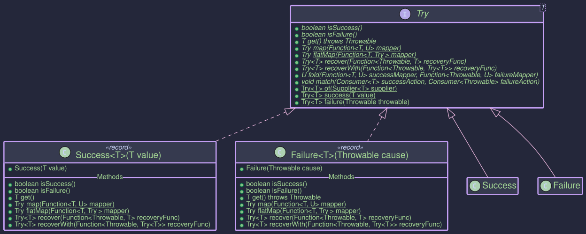
Monadic Structure
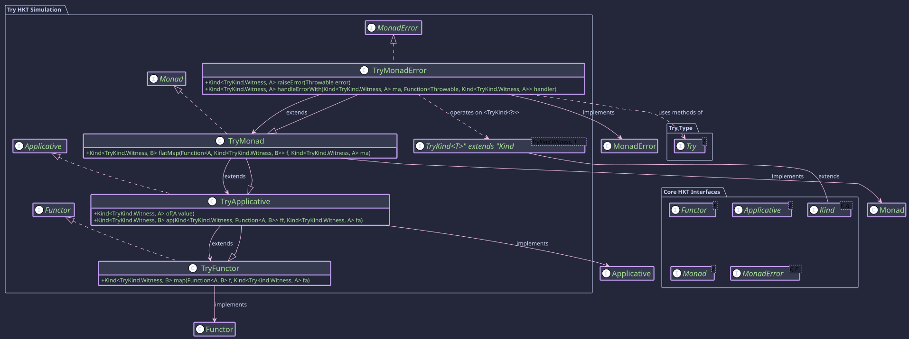
Key benefits include:
- Explicit Error Handling: Makes it clear from the return type (
Try<T>) that a computation might fail. - Composability: Allows chaining operations using methods like
mapandflatMap, where failures are automatically propagated without interrupting the flow with exceptions. - Integration with HKT: Provides HKT simulation (
TryKind) and type class instances (TryMonad) to work seamlessly with generic functional abstractions operating overKind<F, A>. - Error Recovery: Offers methods like
recoverandrecoverWithto handle failures gracefully within the computation chain.
It implements MonadError<TryKind<?>, Throwable>, signifying its monadic nature and its ability to handle errors of type `Throwable.
How to Use Try<T>
You can create Try instances in several ways:
-
Try.of(Supplier): Executes aSupplierand wraps the result inSuccessor catches any thrownThrowable(includingErrorand checked exceptions) and wraps it inFailure.import org.higherkindedj.hkt.trymonad.Try; import java.io.FileInputStream; // Success case Try<String> successResult = Try.of(() -> "This will succeed"); // Success("This will succeed") // Failure case (checked exception) Try<FileInputStream> failureResult = Try.of(() -> new FileInputStream("nonexistent.txt")); // Failure(FileNotFoundException) // Failure case (runtime exception) Try<Integer> divisionResult = Try.of(() -> 10 / 0); // Failure(ArithmeticException) -
Try.success(value): Directly creates aSuccessinstance holding the given value (which can be null).Try<String> directSuccess = Try.success("Known value"); Try<String> successNull = Try.success(null); -
Try.failure(throwable): Directly creates aFailureinstance holding the given non-nullThrowable.Try<String> directFailure = Try.failure(new RuntimeException("Something went wrong"));
isSuccess(): Returnstrueif it's aSuccess.isFailure(): Returnstrueif it's aFailure.
Getting the Value (Use with Caution)
get(): Returns the value ifSuccess, otherwise throws the containedThrowable. Avoid using this directly; preferfold,map,flatMap, or recovery methods.
Applies a function to the value inside a Success. If the function throws an exception, the result becomes a Failure. If the original Try was a Failure, map does nothing and returns the original Failure.
Try<Integer> initialSuccess = Try.success(5);
Try<String> mappedSuccess = initialSuccess.map(value -> "Value: " + value); // Success("Value: 5")
Try<Integer> initialFailure = Try.failure(new RuntimeException("Fail"));
Try<String> mappedFailure = initialFailure.map(value -> "Value: " + value); // Failure(RuntimeException)
Try<Integer> mapThrows = initialSuccess.map(value -> { throw new NullPointerException(); }); // Failure(NullPointerException)
Applies a function that returns another Try to the value inside a Success. This is used to sequence operations where each step might fail. Failures are propagated.
Function<Integer, Try<Double>> safeDivide =
value -> (value == 0) ? Try.failure(new ArithmeticException("Div by zero")) : Try.success(10.0 / value);
Try<Integer> inputSuccess = Try.success(2);
Try<Double> result1 = inputSuccess.flatMap(safeDivide); // Success(5.0)
Try<Integer> inputZero = Try.success(0);
Try<Double> result2 = inputZero.flatMap(safeDivide); // Failure(ArithmeticException)
Try<Integer> inputFailure = Try.failure(new RuntimeException("Initial fail"));
Try<Double> result3 = inputFailure.flatMap(safeDivide); // Failure(RuntimeException) - initial failure propagates
Handling Failures (fold, recover, recoverWith)
Safely handles both cases by applying one of two functions.
String message = result2.fold(
successValue -> "Succeeded with " + successValue,
failureThrowable -> "Failed with " + failureThrowable.getMessage()
); // "Failed with Div by zero"
If Failure, applies a function Throwable -> T to produce a new Success value. If the recovery function throws, the result is a Failure containing that new exception.
Function<Throwable, Double> recoverHandler = throwable -> -1.0;
Try<Double> recovered1 = result2.recover(recoverHandler); // Success(-1.0)
Try<Double> recovered2 = result1.recover(recoverHandler); // Stays Success(5.0)
Similar to recover, but the recovery function Throwable -> Try<T> must return a Try. This allows recovery to potentially result in another Failure.
Function<Throwable, Try<Double>> recoverWithHandler = throwable ->
(throwable instanceof ArithmeticException) ? Try.success(Double.POSITIVE_INFINITY) : Try.failure(throwable);
Try<Double> recoveredWith1 = result2.recoverWith(recoverWithHandler); // Success(Infinity)
Try<Double> recoveredWith2 = result3.recoverWith(recoverWithHandler); // Failure(RuntimeException) - re-raised
To use Try with generic code expecting Kind<F, A>:
- Get Instance:
TryMonad tryMonad = TryMonad.INSTANCE; - Wrap(Widen): Use
TRY.widen(myTry)or factories likeTRY.tryOf(() -> ...). - Operate: Use
tryMonad.map(...),tryMonad.flatMap(...),tryMonad.handleErrorWith(...)etc. - Unwrap(Narrow): Use
TRY.narrow(tryKind)to get theTry<T>back.
TryMonad tryMonad = TryMonad.INSTANCE;
Kind<TryKind.Witness, Integer> tryKind1 = TRY.tryOf(() -> 10 / 2); // Success(5) Kind
Kind<TryKind.Witness, Integer> tryKind2 = TRY.tryOf(() -> 10 / 0); // Failure(...) Kind
// Map using Monad instance
Kind<TryKind.Witness, String> mappedKind = tryMonad.map(Object::toString, tryKind1); // Success("5") Kind
// FlatMap using Monad instance
Function<Integer, Kind<TryKind.Witness, Double>> safeDivideKind =
i -> TRY.tryOf(() -> 10.0 / i);
Kind<TryKind.Witness, Double> flatMappedKind = tryMonad.flatMap(safeDivideKind, tryKind1); // Success(2.0) Kind
// Handle error using MonadError instance
Kind<TryKind.Witness, Integer> handledKind = tryMonad.handleErrorWith(
tryKind2, // The Failure Kind
error -> TRY.success(-1) // Recover to Success(-1) Kind
);
// Unwrap
Try<String> mappedTry = TRY.narrow(mappedKind); // Success("5")
Try<Double> flatMappedTry = TRY.narrow(flatMappedKind); // Success(2.0)
Try<Integer> handledTry = TRY.narrow(handledKind); // Success(-1)
System.out.println(mappedTry);
System.out.println(flatMappedTry);
System.out.println(handledTry);
Validated - Handling Valid or Invalid Operations
Purpose
The Validated<E, A> type in Higher-Kinded-J represents a value that can either be Valid<A> (correct) or Invalid<E> (erroneous). It is commonly used in scenarios like input validation where you want to clearly distinguish between a successful result and an error. Unlike types like Either which are often used for general-purpose sum types, Validated is specifically focused on the valid/invalid dichotomy. Operations like map, flatMap, and ap are right-biased, meaning they operate on the Valid value and propagate Invalid values unchanged.
The ValidatedMonad<E> provides a monadic interface for Validated<E, A> (where the error type E is fixed for the monad instance), allowing for functional composition and integration with the Higher-Kinded-J framework. This facilitates chaining operations that can result in either a valid outcome or an error.
- Explicit Validation Outcome: The type signature
Validated<E, A>makes it clear that a computation can result in either a success (Valid<A>) or an error (Invalid<E>). - Functional Composition: Enables chaining of operations using
map,flatMap, andap. If an operation results in anInvalid, subsequent operations in the chain are typically short-circuited, propagating theInvalidstate. - HKT Integration:
ValidatedKind<E, A>(the HKT wrapper forValidated<E, A>) andValidatedMonad<E>allowValidatedto be used with generic functions and type classes that expectKind<F, A>,Functor<F>,Applicative<F>, orMonad<M>. - Clear Error Handling: Provides methods like
fold,ifValid,ifInvalidto handle bothValidandInvalidcases explicitly. - Standardized Error Handling: As a
MonadError<ValidatedKind.Witness<E>, E>, it offersraiseErrorto construct error states andhandleErrorWithfor recovery, integrating with generic error-handling combinators.
ValidatedMonad<E> implements MonadError<ValidatedKind.Witness<E>, E>, which transitively includes Monad<ValidatedKind.Witness<E>>, Applicative<ValidatedKind.Witness<E>>, and Functor<ValidatedKind.Witness<E>>.
Structure
Validated Type Conceptually, Validated<E, A> has two sub-types:
Valid<A>: Contains a valid value of typeA.Invalid<E>: Contains an error value of typeE.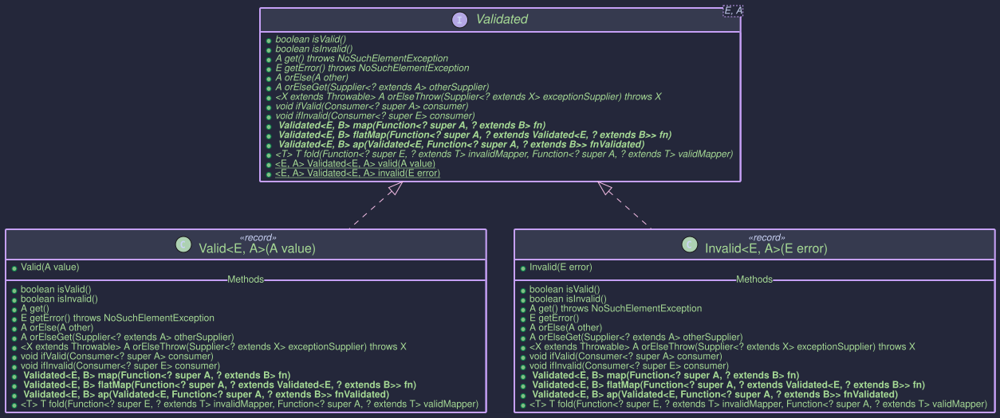
Monadic Structure The ValidatedMonad<E> enables monadic operations on ValidatedKind.Witness<E>.
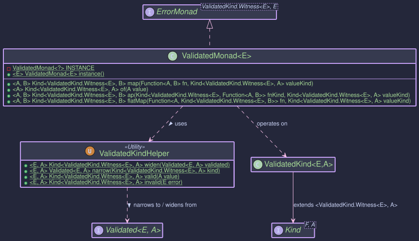
How to Use ValidatedMonad<E> and Validated<E, A>
Creating Instances
Validated<E, A> instances can be created directly using static factory methods on Validated. For HKT integration, ValidatedKindHelper and ValidatedMonad are used. ValidatedKind<E, A> is the HKT wrapper.
Direct Validated Creation & HKT Helpers: Refer to ValidatedMonadExample.java (Section 1) for runnable examples.
Creates a Valid instance holding a non-null value.
Validated<List<String>, String> validInstance = Validated.valid("Success!"); // Valid("Success!")
Creates an Invalid instance holding a non-null error.
Validated<List<String>, String> invalidInstance = Validated.invalid(Collections.singletonList("Error: Something went wrong.")); // Invalid([Error: Something went wrong.])
Converts a Validated<E, A> to Kind<ValidatedKind.Witness<E>, A> using VALIDATED.widen().
Kind<ValidatedKind.Witness<List<String>>, String> kindValid = VALIDATED.widen(Validated.valid("Wrapped"));
Converts a Kind<ValidatedKind.Witness<E>, A> back to Validated<E, A> using VALIDATED.narrow().
Validated<List<String>, String> narrowedValidated = VALIDATED.narrow(kindValid);
Convenience for widen(Validated.valid(value))using VALIDATED.valid().
Kind<ValidatedKind.Witness<List<String>>, Integer> kindValidInt = VALIDATED.valid(123);
Convenience for widen(Validated.invalid(error)) using VALIDATED.invalid().
Kind<ValidatedKind.Witness<List<String>>, Integer> kindInvalidInt = VALIDATED.invalid(Collections.singletonList("Bad number"));
ValidatedMonad<E> Instance Methods:
Refer to ValidatedMonadExample.java (Sections 1 & 6) for runnable examples.
Lifts a value into ValidatedKind.Witness<E>, creating a Valid(value). This is part of the Applicative interface.
ValidatedMonad<List<String>> validatedMonad = ValidatedMonad.instance();
Kind<ValidatedKind.Witness<List<String>>, String> kindFromMonadOf = validatedMonad.of("Monadic Valid"); // Valid("Monadic Valid")
System.out.println("From monad.of(): " + VALIDATED.narrow(kindFromMonadOf));
Lifts an error E into the ValidatedKind context, creating an Invalid(error). This is part of the MonadError interface.
ValidatedMonad<List<String>> validatedMonad = ValidatedMonad.instance();
List<String> errorPayload = Collections.singletonList("Raised error condition");
Kind<ValidatedKind.Witness<List<String>>, String> raisedError =
validatedMonad.raiseError(errorPayload); // Invalid(["Raised error condition"])
System.out.println("From monad.raiseError(): " + VALIDATED.narrow(raisedError));
Interacting with Validated<E, A> values
The Validated<E, A> interface itself provides useful methods: Refer to ValidatedMonadExample.java (Section 5) for runnable examples of fold, ifValid, ifInvalid.
isValid(): Returnstrueif it's aValid.isInvalid(): Returnstrueif it's anInvalid.get(): Returns the value ifValid, otherwise throwsNoSuchElementException. Use with caution.getError(): Returns the error ifInvalid, otherwise throwsNoSuchElementException. Use with caution.orElse(@NonNull A other): Returns the value ifValid, otherwise returnsother.orElseGet(@NonNull Supplier<? extends @NonNull A> otherSupplier): Returns the value ifValid, otherwise invokesotherSupplier.get().orElseThrow(@NonNull Supplier<? extends X> exceptionSupplier): Returns the value ifValid, otherwise throws the exception from the supplier.ifValid(@NonNull Consumer<? super A> consumer): Performs action ifValid.ifInvalid(@NonNull Consumer<? super E> consumer): Performs action ifInvalid.fold(@NonNull Function<? super E, ? extends T> invalidMapper, @NonNull Function<? super A, ? extends T> validMapper): Applies one of two functions depending on the state.Validatedalso has its ownmap,flatMap, andapmethods that operate directly onValidatedinstances.
Key Operations (via ValidatedMonad<E>)
These operations are performed on the HKT wrapper Kind<ValidatedKind.Witness<E>, A>. Refer to ValidatedMonadExample.java (Sections 2, 3, 4) for runnable examples of map, flatMap, and ap.
Applies f to the value inside kind if it's Valid. If kind is Invalid, or if f throws an exception (The behaviour depends on Validated.map internal error handling, typically an Invalid from Validated.map would be a new Invalid), the result is Invalid.
// From ValidatedMonadExample.java (Section 2)
ValidatedMonad<List<String>> validatedMonad = ValidatedMonad.instance();
Kind<ValidatedKind.Witness<List<String>>, Integer> validKindFromOf = validatedMonad.of(42);
Kind<ValidatedKind.Witness<List<String>>, Integer> invalidIntKind =
VALIDATED.invalid(Collections.singletonList("Initial error for map"));
Function<Integer, String> intToString = i -> "Value: " + i;
Kind<ValidatedKind.Witness<List<String>>, String> mappedValid =
validatedMonad.map(intToString, validKindFromOf); // Valid("Value: 42")
System.out.println("Map (Valid input): " + VALIDATED.narrow(mappedValid));
Kind<ValidatedKind.Witness<List<String>>, String> mappedInvalid =
validatedMonad.map(intToString, invalidIntKind); // Invalid(["Initial error for map"])
System.out.println("Map (Invalid input): " + VALIDATED.narrow(mappedInvalid));
If kind is Valid(a), applies f to a. f must return a Kind<ValidatedKind.Witness<E>, B>. If kind is Invalid, or f returns an Invalid Kind, the result is Invalid.
// From ValidatedMonadExample.java (Section 3)
ValidatedMonad<List<String>> validatedMonad = ValidatedMonad.instance();
Kind<ValidatedKind.Witness<List<String>>, Integer> positiveNumKind = validatedMonad.of(10);
Kind<ValidatedKind.Witness<List<String>>, Integer> nonPositiveNumKind = validatedMonad.of(-5);
Kind<ValidatedKind.Witness<List<String>>, Integer> invalidIntKind =
VALIDATED.invalid(Collections.singletonList("Initial error for flatMap"));
Function<Integer, Kind<ValidatedKind.Witness<List<String>>, String>> intToValidatedStringKind =
i -> {
if (i > 0) {
return VALIDATED.valid("Positive: " + i);
} else {
return VALIDATED.invalid(Collections.singletonList("Number not positive: " + i));
}
};
Kind<ValidatedKind.Witness<List<String>>, String> flatMappedToValid =
validatedMonad.flatMap(intToValidatedStringKind, positiveNumKind); // Valid("Positive: 10")
System.out.println("FlatMap (Valid to Valid): " + VALIDATED.narrow(flatMappedToValid));
Kind<ValidatedKind.Witness<List<String>>, String> flatMappedToInvalid =
validatedMonad.flatMap(intToValidatedStringKind, nonPositiveNumKind); // Invalid(["Number not positive: -5"])
System.out.println("FlatMap (Valid to Invalid): " + VALIDATED.narrow(flatMappedToInvalid));
Kind<ValidatedKind.Witness<List<String>>, String> flatMappedFromInvalid =
validatedMonad.flatMap(intToValidatedStringKind, invalidIntKind); // Invalid(["Initial error for flatMap"])
System.out.println("FlatMap (Invalid input): " + VALIDATED.narrow(flatMappedFromInvalid));
If ff is Valid(f) and fa is Valid(a), applies f to a, resulting in Valid(f(a)). If either ff or fa is Invalid, the result is Invalid. Specifically, if ff is Invalid, its error is returned. If ff is Valid but fa is Invalid, then fa's error is returned. If both are Invalid, ff's error takes precedence. Note: This ap behavior is right-biased and does not accumulate errors in the way some applicative validations might; it propagates the first encountered Invalid or the Invalid function.
// From ValidatedMonadExample.java (Section 4)
ValidatedMonad<List<String>> validatedMonad = ValidatedMonad.instance();
Kind<ValidatedKind.Witness<List<String>>, Function<Integer, String>> validFnKind =
VALIDATED.valid(i -> "Applied: " + (i * 2));
Kind<ValidatedKind.Witness<List<String>>, Function<Integer, String>> invalidFnKind =
VALIDATED.invalid(Collections.singletonList("Function is invalid"));
Kind<ValidatedKind.Witness<List<String>>, Integer> validValueForAp = validatedMonad.of(25);
Kind<ValidatedKind.Witness<List<String>>, Integer> invalidValueForAp =
VALIDATED.invalid(Collections.singletonList("Value is invalid"));
// Valid function, Valid value
Kind<ValidatedKind.Witness<List<String>>, String> apValidFnValidVal =
validatedMonad.ap(validFnKind, validValueForAp); // Valid("Applied: 50")
System.out.println("Ap (ValidFn, ValidVal): " + VALIDATED.narrow(apValidFnValidVal));
// Invalid function, Valid value
Kind<ValidatedKind.Witness<List<String>>, String> apInvalidFnValidVal =
validatedMonad.ap(invalidFnKind, validValueForAp); // Invalid(["Function is invalid"])
System.out.println("Ap (InvalidFn, ValidVal): " + VALIDATED.narrow(apInvalidFnValidVal));
// Valid function, Invalid value
Kind<ValidatedKind.Witness<List<String>>, String> apValidFnInvalidVal =
validatedMonad.ap(validFnKind, invalidValueForAp); // Invalid(["Value is invalid"])
System.out.println("Ap (ValidFn, InvalidVal): " + VALIDATED.narrow(apValidFnInvalidVal));
// Invalid function, Invalid value
Kind<ValidatedKind.Witness<List<String>>, String> apInvalidFnInvalidVal =
validatedMonad.ap(invalidFnKind, invalidValueForAp); // Invalid(["Function is invalid"])
System.out.println("Ap (InvalidFn, InvalidVal): " + VALIDATED.narrow(apInvalidFnInvalidVal));
MonadError Operations
As ValidatedMonad<E> implements MonadError<ValidatedKind.Witness<E>, E>, it provides standardized ways to create and handle errors. Refer to ValidatedMonadExample.java (Section 6) for detailed examples.
// From ValidatedMonadExample.java (Section 6)
ValidatedMonad<List<String>> validatedMonad = ValidatedMonad.instance();
List<String> initialError = Collections.singletonList("Initial Failure");
// 1. Create an Invalid Kind using raiseError
Kind<ValidatedKind.Witness<List<String>>, Integer> invalidKindRaised = // Renamed to avoid conflict
validatedMonad.raiseError(initialError);
System.out.println("Raised error: " + VALIDATED.narrow(invalidKindRaised)); // Invalid([Initial Failure])
// 2. Handle the error: recover to a Valid state
Function<List<String>, Kind<ValidatedKind.Witness<List<String>>, Integer>> recoverToValid =
errors -> {
System.out.println("MonadError: Recovery handler called with errors: " + errors);
return validatedMonad.of(0); // Recover with default value 0
};
Kind<ValidatedKind.Witness<List<String>>, Integer> recoveredValid =
validatedMonad.handleErrorWith(invalidKindRaised, recoverToValid);
System.out.println("Recovered to Valid: " + VALIDATED.narrow(recoveredValid)); // Valid(0)
// 3. Handle the error: transform to another Invalid state
Function<List<String>, Kind<ValidatedKind.Witness<List<String>>, Integer>> transformError =
errors -> validatedMonad.raiseError(Collections.singletonList("Transformed Error: " + errors.get(0)));
Kind<ValidatedKind.Witness<List<String>>, Integer> transformedInvalid =
validatedMonad.handleErrorWith(invalidKindRaised, transformError);
System.out.println("Transformed to Invalid: " + VALIDATED.narrow(transformedInvalid)); // Invalid([Transformed Error: Initial Failure])
// 4. Handle a Valid Kind: handler is not called
Kind<ValidatedKind.Witness<List<String>>, Integer> validKindOriginal = validatedMonad.of(100);
Kind<ValidatedKind.Witness<List<String>>, Integer> notHandled =
validatedMonad.handleErrorWith(validKindOriginal, recoverToValid); // Handler not called
System.out.println("Handling Valid (no change): " + VALIDATED.narrow(notHandled)); // Valid(100)
// 5. Using a default method like handleError
Kind<ValidatedKind.Witness<List<String>>, Integer> errorForHandle = validatedMonad.raiseError(Collections.singletonList("Error for handleError"));
Function<List<String>, Integer> plainValueRecoveryHandler = errors -> -1; // Returns plain value
Kind<ValidatedKind.Witness<List<String>>, Integer> recoveredWithHandle = validatedMonad.handleError(errorForHandle, plainValueRecoveryHandler);
System.out.println("Recovered with handleError: " + VALIDATED.narrow(recoveredWithHandle)); // Valid(-1)
The default recover and recoverWith methods from MonadError are also available.
This example demonstrates how ValidatedMonad along with Validated can be used to chain operations that might succeed or fail. With ValidatedMonad now implementing MonadError, operations like raiseError can be used for clearer error signaling, and handleErrorWith (or other MonadError methods) can be used for more robust recovery strategies within such validation flows.
- ValidatedMonadExample.java (see "Combined Validation Scenario").
// Simplified from the ValidatedMonadExample.java
public void combinedValidationScenarioWithMonadError() {
ValidatedMonad<List<String>> validatedMonad = ValidatedMonad.instance();
Kind<ValidatedKind.Witness<List<String>>, String> userInput1 = validatedMonad.of("123");
Kind<ValidatedKind.Witness<List<String>>, String> userInput2 = validatedMonad.of("abc"); // This will lead to an Invalid
Function<String, Kind<ValidatedKind.Witness<List<String>>, Integer>> parseToIntKindMonadError =
(String s) -> {
try {
return validatedMonad.of(Integer.parseInt(s)); // Lifts to Valid
} catch (NumberFormatException e) {
// Using raiseError for semantic clarity
return validatedMonad.raiseError(
Collections.singletonList("'" + s + "' is not a number (via raiseError)."));
}
};
Kind<ValidatedKind.Witness<List<String>>, Integer> parsed1 =
validatedMonad.flatMap(parseToIntKindMonadError, userInput1);
Kind<ValidatedKind.Witness<List<String>>, Integer> parsed2 =
validatedMonad.flatMap(parseToIntKindMonadError, userInput2); // Will be Invalid
System.out.println("Parsed Input 1 (Combined): " + VALIDATED.narrow(parsed1)); // Valid(123)
System.out.println("Parsed Input 2 (Combined): " + VALIDATED.narrow(parsed2)); // Invalid(['abc' is not a number...])
// Example of recovering the parse of userInput2 using handleErrorWith
Kind<ValidatedKind.Witness<List<String>>, Integer> parsed2Recovered =
validatedMonad.handleErrorWith(
parsed2,
errors -> {
System.out.println("Combined scenario recovery: " + errors);
return validatedMonad.of(0); // Default to 0 if parsing failed
});
System.out.println(
"Parsed Input 2 (Recovered to 0): " + VALIDATED.narrow(parsed2Recovered)); // Valid(0)
}
This example demonstrates how ValidatedMonad along with Validated can be used to chain operations that might succeed or fail, propagating errors and allowing for clear handling of either outcome, further enhanced by MonadError capabilities.
Writer - Accumulating Output Alongside Computations
Purpose
The Writer monad is a functional pattern designed for computations that, in addition to producing a primary result value, also need to accumulate some secondary output or log along the way. Think of scenarios like:
- Detailed logging of steps within a complex calculation.
- Collecting metrics or events during a process.
- Building up a sequence of results or messages.
A Writer<W, A> represents a computation that produces a main result of type A and simultaneously accumulates an output of type W. The key requirement is that the accumulated type W must form a Monoid.
The Role of Monoid<W>
A Monoid<W> is a type class that defines two things for type W:
empty(): Provides an identity element (like""for String concatenation,0for addition, or an empty list).combine(W w1, W w2): Provides an associative binary operation to combine two values of typeW(like+for strings or numbers, or list concatenation).
The Writer monad uses the Monoid<W> to:
- Provide a starting point (the
emptyvalue) for the accumulation. - Combine the accumulated outputs (
W) from different steps using thecombineoperation when sequencing computations withflatMaporap.
Common examples for W include String (using concatenation), Integer (using addition or multiplication), or List (using concatenation).
Structure
The Writer<W, A> record directly implements WriterKind<W, A>, which in turn extends Kind<WriterKind.Witness<W>, A>.

The Writer<W, A> Type
The core type is the Writer<W, A> record:
// From: org.higherkindedj.hkt.writer.Writer
public record Writer<W, A>(@NonNull W log, @Nullable A value) implements WriterKind<W, A> {
// Static factories
public static <W, A> @NonNull Writer<W, A> create(@NonNull W log, @Nullable A value);
public static <W, A> @NonNull Writer<W, A> value(@NonNull Monoid<W> monoidW, @Nullable A value); // Creates (monoidW.empty(), value)
public static <W> @NonNull Writer<W, Unit> tell(@NonNull W log); // Creates (log, Unit.INSTANCE)
// Instance methods (primarily for direct use, HKT versions via Monad instance)
public <B> @NonNull Writer<W, B> map(@NonNull Function<? super A, ? extends B> f);
public <B> @NonNull Writer<W, B> flatMap(
@NonNull Monoid<W> monoidW, // Monoid needed for combining logs
@NonNull Function<? super A, ? extends Writer<W, ? extends B>> f
);
public @Nullable A run(); // Get the value A, discard log
public @NonNull W exec(); // Get the log W, discard value
}
- It simply holds a pair: the accumulated
log(of typeW) and the computedvalue(of typeA). create(log, value): Basic constructor.value(monoid, value): Creates a Writer with the given value and an empty log according to the providedMonoid.tell(log): Creates a Writer with the given log, andUnit.INSTANCEas it's value, signifying that the operation's primary purpose is the accumulation of the log. Useful for just adding to the log. (Note: The originalWriter.javamight havetell(W log)and infer monoid elsewhere, orWriterMonadhandlestell).map(...): Transforms the computed valueAtoBwhile leaving the logWuntouched.flatMap(...): Sequences computations. It runs the first Writer, uses its valueAto create a second Writer, and combines the logs from both using the providedMonoid.run(): Extracts only the computed valueA, discarding the log.exec(): Extracts only the accumulated logW, discarding the value.
Writer Components
To integrate Writer with Higher-Kinded-J:
WriterKind<W, A>: The HKT interface.Writer<W, A>itself implementsWriterKind<W, A>.WriterKind<W, A>extendsKind<WriterKind.Witness<W>, A>.- It contains a nested
final class Witness<LOG_W> {}which serves as the phantom typeF_WITNESSforWriter<LOG_W, ?>.
- It contains a nested
WriterKindHelper: The utility class with static methods:widen(Writer<W, A>): Converts aWritertoKind<WriterKind.Witness<W>, A>. SinceWriterdirectly implementsWriterKind, this is effectively a checked cast.narrow(Kind<WriterKind.Witness<W>, A>): ConvertsKindback toWriter<W,A>. This is also effectively a checked cast after aninstanceof Writercheck.value(Monoid<W> monoid, A value): Factory method for aKindrepresenting aWriterwith an empty log.tell(W log): Factory method for aKindrepresenting aWriterthat only logs.runWriter(Kind<WriterKind.Witness<W>, A>): Unwraps toWriter<W,A>and returns the record itself.run(Kind<WriterKind.Witness<W>, A>): Executes (unwraps) and returns only the valueA.exec(Kind<WriterKind.Witness<W>, A>): Executes (unwraps) and returns only the logW.
Type Class Instances (WriterFunctor, WriterApplicative, WriterMonad)
These classes provide the standard functional operations for Kind<WriterKind.Witness<W>, A>, allowing you to treat Writer computations generically. Crucially, WriterApplicative<W> and WriterMonad<W> require a Monoid<W> instance during construction.
WriterFunctor<W>: ImplementsFunctor<WriterKind.Witness<W>>. Providesmap(operates only on the valueA).WriterApplicative<W>: ExtendsWriterFunctor<W>, implementsApplicative<WriterKind.Witness<W>>. Requires aMonoid<W>. Providesof(lifting a value with an empty log) andap(applying a wrapped function to a wrapped value, combining logs).WriterMonad<W>: ExtendsWriterApplicative<W>, implementsMonad<WriterKind.Witness<W>>. Requires aMonoid<W>. ProvidesflatMapfor sequencing computations, automatically combining logs using theMonoid.
You typically instantiate WriterMonad<W> for the specific log type W and its corresponding Monoid.
1. Choose Your Log Type W and Monoid<W>
Decide what you want to accumulate (e.g., String for logs, List<String> for messages, Integer for counts) and get its Monoid.
class StringMonoid implements Monoid<String> {
@Override public String empty() { return ""; }
@Override public String combine(String x, String y) { return x + y; }
}
Monoid<String> stringMonoid = new StringMonoid();
2. Get the WriterMonad Instance
Instantiate the monad for your chosen log type W, providing its Monoid.
import org.higherkindedj.hkt.writer.WriterMonad;
// Monad instance for computations logging Strings
// F_WITNESS here is WriterKind.Witness<String>
WriterMonad<String> writerMonad = new WriterMonad<>(stringMonoid);
3. Create Writer Computations
Use WriterKindHelper factory methods, providing the Monoid where needed. The result is Kind<WriterKind.Witness<W>, A>.
// Writer with an initial value and empty log
Kind<WriterKind.Witness<String>, Integer> initialValue = WRITER.value(stringMonoid, 5); // Log: "", Value: 5
// Writer that just logs a message (value is Unit.INSTANCE)
Kind<WriterKind.Witness<String>, Unit> logStart = WRITER.tell("Starting calculation; "); // Log: "Starting calculation; ", Value: ()
// A function that performs a calculation and logs its step
Function<Integer, Kind<WriterKind.Witness<String>, Integer>> addAndLog =
x -> {
int result = x + 10;
String logMsg = "Added 10 to " + x + " -> " + result + "; ";
// Create a Writer directly then wrap with helper or use helper factory
return WRITER.widen(Writer.create(logMsg, result));
};
Function<Integer, Kind<WriterKind.Witness<String>, String>> multiplyAndLogToString =
x -> {
int result = x * 2;
String logMsg = "Multiplied " + x + " by 2 -> " + result + "; ";
return WRITER.widen(Writer.create(logMsg, "Final:" + result));
};
4. Compose Computations using map and flatMap
Use the methods on the writerMonad instance. flatMap automatically combines logs using the Monoid.
// Chain the operations:
// Start with a pure value 0 in the Writer context (empty log)
Kind<WriterKind.Witness<String>, Integer> computationStart = writerMonad.of(0);
// 1. Log the start
Kind<WriterKind.Witness<String>, Integer> afterLogStart = writerMonad.flatMap(ignoredUnit -> initialValue, logStart);
Kind<WriterKind.Witness<String>, Integer> step1Value = WRITER.value(stringMonoid, 5); // ("", 5)
Kind<WriterKind.Witness<String>, Unit> step1Log = WRITER.tell("Initial value set to 5; "); // ("Initial value set to 5; ", ())
// Start -> log -> transform value -> log -> transform value ...
Kind<WriterKind.Witness<String>, Integer> calcPart1 = writerMonad.flatMap(
ignored -> addAndLog.apply(5), // Apply addAndLog to 5, after logging "start"
WRITER.tell("Starting with 5; ")
);
// calcPart1: Log: "Starting with 5; Added 10 to 5 -> 15; ", Value: 15
Kind<WriterKind.Witness<String>, String> finalComputation = writerMonad.flatMap(
intermediateValue -> multiplyAndLogToString.apply(intermediateValue),
calcPart1
);
// finalComputation: Log: "Starting with 5; Added 10 to 5 -> 15; Multiplied 15 by 2 -> 30; ", Value: "Final:30"
// Using map: Only transforms the value, log remains unchanged from the input Kind
Kind<WriterKind.Witness<String>, Integer> initialValForMap = value(stringMonoid, 100); // Log: "", Value: 100
Kind<WriterKind.Witness<String>, String> mappedVal = writerMonad.map(
i -> "Value is " + i,
initialValForMap
); // Log: "", Value: "Value is 100"
5. Run the Computation and Extract Results
Use WRITER.runWriter, WRITER.run, or WRITER.exec from WriterKindHelper.
import org.higherkindedj.hkt.writer.Writer;
// Get the final Writer record (log and value)
Writer<String, String> finalResultWriter = runWriter(finalComputation);
String finalLog = finalResultWriter.log();
String finalValue = finalResultWriter.value();
System.out.println("Final Log: " + finalLog);
// Output: Final Log: Starting with 5; Added 10 to 5 -> 15; Multiplied 15 by 2 -> 30;
System.out.println("Final Value: " + finalValue);
// Output: Final Value: Final:30
// Or get only the value or log
String justValue = WRITER.run(finalComputation); // Extracts value from finalResultWriter
String justLog = WRITER.exec(finalComputation); // Extracts log from finalResultWriter
System.out.println("Just Value: " + justValue); // Output: Just Value: Final:30
System.out.println("Just Log: " + justLog); // Output: Just Log: Starting with 5; Added 10 to 5 -> 15; Multiplied 15 by 2 -> 30;
Writer<String, String> mappedResult = WRITER.runWriter(mappedVal);
System.out.println("Mapped Log: " + mappedResult.log()); // Output: Mapped Log
System.out.println("Mapped Value: " + mappedResult.value()); // Output: Mapped Value: Value is 100
The Writer monad (Writer<W, A>, WriterKind.Witness<W>, WriterMonad<W>) in Higher-Kinded-J provides a structured way to perform computations that produce a main value (A) while simultaneously accumulating some output (W, like logs or metrics).
It relies on a Monoid<W> instance to combine the accumulated outputs when sequencing steps with flatMap. This pattern helps separate the core computation logic from the logging/accumulation aspect, leading to cleaner, more composable code.
The Higher-Kinded-J enables these operations to be performed generically using standard type class interfaces, with Writer<W,A> directly implementing WriterKind<W,A>.
MonadZero
The MonadZero type class extends the Monad interface to include the concept of a "zero" or "empty" element. It is designed for monads that can represent failure, absence, or emptiness, allowing them to be used in filtering operations.
Purpose and Concept
A Monad provides a way to sequence computations within a context (flatMap, map, of). A MonadZero adds one critical operation to this structure:
zero(): Returns the "empty" or "zero" element for the monad.
This zero element acts as an absorbing element in a monadic sequence, similar to how multiplying by zero results in zero. If a computation results in a zero, subsequent operations in the chain are typically skipped.
Key Implementations in this Project:
- For List,
zero()returns an empty list[]. - For Maybe,
zero()returnsNothing. - For Optional,
zero()returnsOptional.empty().
Primary Uses
The main purpose of MonadZero is to enable filtering within monadic comprehensions. It allows you to discard results that don't meet a certain criterion.
1. Filtering in For-Comprehensions
The most powerful application in this codebase is within the For comprehension builder. The builder has two entry points:
For.from(monad, ...): For any standardMonad.For.from(monadZero, ...): An overloaded version specifically for aMonadZero.
Only the version that accepts a MonadZero provides the .when(predicate) filtering step. When the predicate in a .when() clause evaluates to false, the builder internally calls monad.zero() to terminate that specific computational path.
2. Generic Functions
It allows you to write generic functions that can operate over any monad that has a concept of "failure" or "emptiness," such as List, Maybe, or Optional.
Code Example: For Comprehension with ListMonad
The following example demonstrates how MonadZero enables filtering.
import org.higherkindedj.hkt.Kind;
import org.higherkindedj.hkt.expression.For;
import org.higherkindedj.hkt.list.ListKind;
import org.higherkindedj.hkt.list.ListMonad;
import java.util.Arrays;
import java.util.List;
import static org.higherkindedj.hkt.list.ListKindHelper.LIST;
// 1. Get the MonadZero instance for List
final ListMonad listMonad = ListMonad.INSTANCE;
// 2. Define the initial data sources
final Kind<ListKind.Witness, Integer> list1 = LIST.widen(Arrays.asList(1, 2, 3));
final Kind<ListKind.Witness, Integer> list2 = LIST.widen(Arrays.asList(10, 20));
// 3. Build the comprehension using the filterable 'For'
final Kind<ListKind.Witness, String> result =
For.from(listMonad, list1) // Start with a MonadZero
.from(a -> list2) // Generator (flatMap)
.when(t -> (t._1() + t._2()) % 2 != 0) // Filter: if the sum is odd
.let(t -> "Sum: " + (t._1() + t._2())) // Binding (map)
.yield((a, b, c) -> a + " + " + b + " = " + c); // Final projection
// 4. Unwrap the result
final List<String> narrow = LIST.narrow(result);
System.out.println("Result of List comprehension: " + narrow);
Explanation:
- The comprehension iterates through all pairs of
(a, b)fromlist1andlist2. - The
.when(...)clause checks if the suma + bis odd. - If the sum is even, the
monad.zero()method (which returns an empty list) is invoked for that path, effectively discarding it. - If the sum is odd, the computation continues to the
.let()and.yield()steps.
Output:
Result of List comprehension: [1 + 10 = Sum: 11, 1 + 20 = Sum: 21, 3 + 10 = Sum: 13, 3 + 20 = Sum: 23]
Transformers: Combining Monadic Effects
The Problem
When building applications, we often encounter scenarios where we need to combine different computational contexts or effects. For example:
- An operation might be asynchronous (represented by
CompletableFuture). - The same operation might also fail with specific domain errors (represented by
Either<DomainError, Result>). - An operation might need access to a configuration (using
Reader) and also be asynchronous. - A computation might accumulate logs (using
Writer) and also potentially fail (usingMaybeorEither).
Monads Stack Poorly
Directly nesting these monadic types, like CompletableFuture<Either<DomainError, Result>> or Reader<Config, Optional<Data>>, leads to complex, deeply nested code ("callback hell" or nested flatMap/map calls). It becomes difficult to sequence operations and handle errors or contexts uniformly.
For instance, an operation might need to be both asynchronous and handle potential domain-specific errors. Representing this naively leads to nested types like:
// A future that, when completed, yields either a DomainError or a SuccessValue
Kind<CompletableFutureKind.Witness, Either<DomainError, SuccessValue>> nestedResult;
But now, how do we map or flatMap over this stack without lots of boilerplate?
Monad Transformers: A wrapper to simplify nested Monads
Monad Transformers are a design pattern in functional programming used to combine the effects of two different monads into a single, new monad. They provide a standard way to "stack" monadic contexts, allowing you to work with the combined structure more easily using familiar monadic operations like map and flatMap.
A monad transformer T takes a monad M and produces a new monad T<M> that combines the effects of both T (conceptually) and M.
For example:
MaybeT m awraps a monadmand addsMaybe-like failureStateT s m awraps a monadmand adds state-handling capabilityReaderT r m aadds dependency injection (read-only environment)
They allow you to stack monadic behaviors.
Key characteristics:
- Stacking: They allow "stacking" monadic effects in a standard way.
- Unified Interface: The resulting transformed monad (e.g.,
EitherT<CompletableFutureKind, ...>) itself implements theMonad(and oftenMonadError, etc.) interface. - Abstraction: They hide the complexity of manually managing the nested structure. You can use standard
map,flatMap,handleErrorWithoperations on the transformed monad, and it automatically handles the logic for both underlying monads correctly.
Transformers in Higher-Kinded-J

1. EitherT<F, L, R> (Monad Transformer)
- Definition: A monad transformer (
EitherT) that combines an outer monadFwith an innerEither<L, R>. Implemented as a record wrappingKind<F, Either<L, R>>. - Kind Interface:
EitherTKind<F, L, R> - Witness Type
G:EitherTKind.Witness<F, L>(whereFandLare fixed for a given type class instance) - Helper:
EitherTKindHelper(wrap,unwrap). Instances are primarily created viaEitherTstatic factories (fromKind,right,left,fromEither,liftF). - Type Class Instances:
EitherTMonad<F, L>(MonadError<EitherTKind.Witness<F, L>, L>)
- Notes: Simplifies working with nested structures like
F<Either<L, R>>. Requires aMonad<F>instance for the outer monadFpassed to its constructor. ImplementsMonadErrorfor the innerEither'sLefttypeL. See the Order Processing Example Walkthrough for practical usage withCompletableFutureasF. - Usage: How to use the EitherT Monad Transformer

2. MaybeT<F, A> (Monad Transformer)
- Definition: A monad transformer (
MaybeT) that combines an outer monadFwith an innerMaybe<A>. Implemented as a record wrappingKind<F, Maybe<A>>. - Kind Interface:
MaybeTKind<F, A> - Witness Type
G:MaybeTKind.Witness<F>(whereFis fixed for a given type class instance) - Helper:
MaybeTKindHelper(wrap,unwrap). Instances are primarily created viaMaybeTstatic factories (fromKind,just,nothing,fromMaybe,liftF). - Type Class Instances:
MaybeTMonad<F>(MonadError<MaybeTKind.Witness<F>, Void>)
- Notes: Simplifies working with nested structures like
F<Maybe<A>>. Requires aMonad<F>instance for the outer monadF. ImplementsMonadErrorwhere the error type isVoid, corresponding to theNothingstate from the innerMaybe. - Usage: How to use the MaybeT Monad Transformer
3. OptionalT<F, A> (Monad Transformer)
- Definition: A monad transformer (
OptionalT) that combines an outer monadFwith an innerjava.util.Optional<A>. Implemented as a record wrappingKind<F, Optional<A>>. - Kind Interface:
OptionalTKind<F, A> - Witness Type
G:OptionalTKind.Witness<F>(whereFis fixed for a given type class instance) - Helper:
OptionalTKindHelper(wrap,unwrap). Instances are primarily created viaOptionalTstatic factories (fromKind,some,none,fromOptional,liftF). - Type Class Instances:
OptionalTMonad<F>(MonadError<OptionalTKind.Witness<F>, Void>)
- Notes: Simplifies working with nested structures like
F<Optional<A>>. Requires aMonad<F>instance for the outer monadF. ImplementsMonadErrorwhere the error type isVoid, corresponding to theOptional.empty()state from the innerOptional. - Usage: How to use the OptionalT Monad Transformer
4. ReaderT<F, R, A> (Monad Transformer)
- Definition: A monad transformer (
ReaderT) that combines an outer monadFwith an innerReader<R, A>-like behavior (dependency on environmentR). Implemented as a record wrapping a functionR -> Kind<F, A>. - Kind Interface:
ReaderTKind<F, R, A> - Witness Type
G:ReaderTKind.Witness<F, R>(whereFandRare fixed for a given type class instance) - Helper:
ReaderTKindHelper(wrap,unwrap). Instances are primarily created viaReaderTstatic factories (of,lift,reader,ask). - Type Class Instances:
ReaderTMonad<F, R>(Monad<ReaderTKind<F, R, ?>>)
- Notes: Simplifies managing computations that depend on a read-only environment
Rwhile also involving other monadic effects fromF. Requires aMonad<F>instance for the outer monad. Therun()method ofReaderTtakesRand returnsKind<F, A>. - Usage: How to use the ReaderT Monad Transformer
. StateT<S, F, A> (Monad Transformer)
- Definition: A monad transformer (
StateT) that adds stateful computation (typeS) to an underlying monadF. It represents a functionS -> Kind<F, StateTuple<S, A>>. - Kind Interface:
StateTKind<S, F, A> - Witness Type
G:StateTKind.Witness<S, F>(whereSfor state andFfor the underlying monad witness are fixed for a given type class instance;Ais the value type parameter) - Helper:
StateTKindHelper(narrow,wrap,runStateT,evalStateT,execStateT,lift). Instances are created viaStateT.create(),StateTMonad.of(), orStateTKind.lift(). - Type Class Instances:
StateTMonad<S, F>(Monad<StateTKind.Witness<S, F>>)
- Notes: Allows combining stateful logic with other monadic effects from
F. Requires aMonad<F>instance for the underlying monad. TherunStateT(initialState)method executes the computation, returningKind<F, StateTuple<S, A>>. - Usage:How to use the StateT Monad Transformer
EitherT - Combining Monadic Effects
EitherT Monad Transformer.
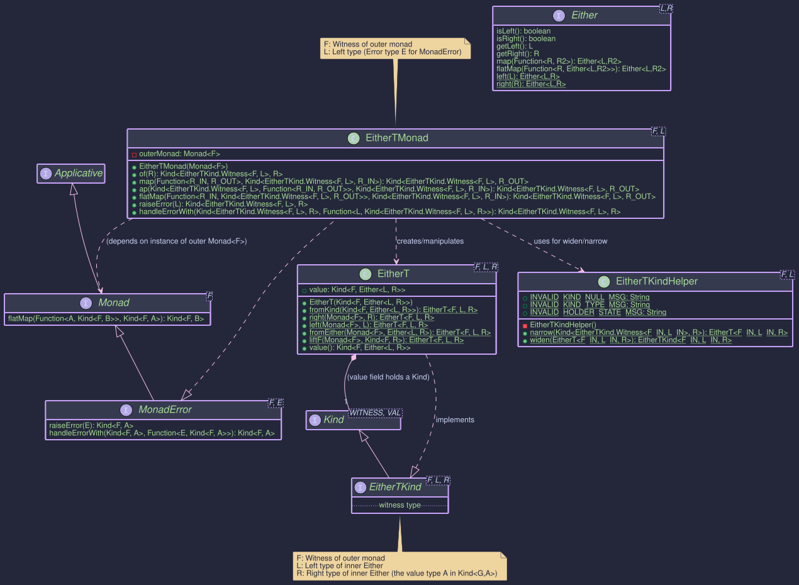
EitherT<F, L, R>: Combining any Monad F with Either<L, R>
The EitherT monad transformer allows you to combine the error-handling capabilities of Either<L, R> with another outer monad F. It transforms a computation that results in Kind<F, Either<L, R>> into a single monadic structure that can be easily composed. This is particularly useful when dealing with operations that can fail (represented by Left<L>) within an effectful context F (like asynchronous operations using CompletableFutureKind or computations involving state with StateKind).
F: The witness type of the outer monad (e.g.,CompletableFutureKind.Witness,OptionalKind.Witness). This monad handles the primary effect (e.g., asynchronicity, optionality).L: The Left type of the innerEither. This typically represents the error type for the computation or alternative result.R: The Right type of the innerEither. This typically represents the success value type.
public record EitherT<F, L, R>(@NonNull Kind<F, Either<L, R>> value) {
/* ... static factories ... */ }
It holds a value of type Kind<F, Either<L, R>>. The real power comes from its associated type class instance, EitherTMonad.
Essentially, EitherT<F, L, R> wraps a value of type Kind<F, Either<L, R>>. It represents a computation within the context F that will eventually yield an Either<L, R>.
The primary goal of EitherT is to provide a unified Monad interface (specifically MonadError for the L type) for this nested structure, hiding the complexity of manually handling both the outer F context and the inner Either context.
EitherTKind<F, L, R>: The Witness Type
Just like other types in the Higher-Kinded-J, EitherT needs a corresponding Kind interface to act as its witness type in generic functions. This is EitherTKind<F, L, R>.
- It extends
Kind<G, R>whereG(the witness for the combined monad) isEitherTKind.Witness<F, L>. FandLare fixed for a specificEitherTcontext, whileRis the variable type parameterAinKind<G, A>.
You'll primarily interact with this type when providing type signatures or receiving results from EitherTMonad methods.
EitherTKindHelper
- Provides widen and narrow methods to safely convert between the concrete
EitherT<F, L, R>and its Kind representation (Kind<EitherTKind<F, L, ?>, R>).
EitherTMonad<F, L>: Operating on EitherT
- The EitherTMonad class implements
MonadError<EitherTKind.Witness<F, L>, L>.
- It requires a Monad
instance for the outer monad F to be provided during construction. This outer monad instance is used internally to handle the effects of F. - It uses
EITHER_T.widenandEITHER_T.narrowinternally to manage the conversion between theKindand the concreteEitherT. - The error type E for MonadError is fixed to L, the 'Left' type of the inner Either. Error handling operations like
raiseError(L l)will create anEitherTrepresentingF<Left(l)>, andhandleErrorWithallows recovering from such Left states.
// Example: F = CompletableFutureKind.Witness, L = DomainError
// 1. Get the MonadError instance for the outer monad F
MonadError<CompletableFutureKind.Witness, Throwable> futureMonad = CompletableFutureMonad.INSTANCE;
// 2. Create the EitherTMonad, providing the outer monad instance
// This EitherTMonad handles DomainError for the inner Either.
MonadError<EitherTKind.Witness<CompletableFutureKind.Witness, DomainError>, DomainError> eitherTMonad =
new EitherTMonad<>(futureMonad);
// Now 'eitherTMonad' can be used to operate on Kind<EitherTKind.Witness<CompletableFutureKind.Witness, DomainError>, A> values.
eitherTMonad.of(value): Lifts a pure valueAinto theEitherTcontext. Result:F<Right(A)>.eitherTMonad.map(f, eitherTKind): Applies functionA -> Bto theRightvalue inside the nested structure, preserving bothFandEithercontexts (if Right). Result:F<Either<L, B>>.eitherTMonad.flatMap(f, eitherTKind): The core sequencing operation. Takes a functionA -> Kind<EitherTKind.Witness<F, L>, B>(i.e.,A -> EitherT<F, L, B>). It unwraps the inputEitherT, handles theFcontext, checks the innerEither:- If
Left(l), it propagatesF<Left(l)>. - If
Right(a), it appliesf(a)to get the nextEitherT<F, L, B>, and extracts its innerKind<F, Either<L, B>>, effectively chaining theFcontexts and theEitherlogic.
- If
eitherTMonad.raiseError(errorL): Creates anEitherTrepresenting a failure in the innerEither. Result:F<Left(L)>.eitherTMonad.handleErrorWith(eitherTKind, handler): Handles a failureLfrom the innerEither. Takes a handlerL -> Kind<EitherTKind.Witness<F, L>, A>. It unwraps the inputEitherT, checks the innerEither:- If
Right(a), propagatesF<Right(a)>. - If
Left(l), applieshandler(l)to get a recoveryEitherT<F, L, A>, and extracts its innerKind<F, Either<L, A>>.
- If
You typically create EitherT instances using its static factory methods, providing the necessary outer Monad<F> instance:
// Assume:
Monad<OptionalKind.Witness> optMonad = OptionalMonad.INSTANCE; // Outer Monad F=Optional
String errorL = "FAILED";
String successR = "OK";
Integer otherR = 123;
// 1. Lifting a pure 'Right' value: Optional<Right(R)>
EitherT<OptionalKind.Witness, String, String> etRight = EitherT.right(optMonad, successR);
// Resulting wrapped value: Optional.of(Either.right("OK"))
// 2. Lifting a pure 'Left' value: Optional<Left(L)>
EitherT<OptionalKind.Witness, String, Integer> etLeft = EitherT.left(optMonad, errorL);
// Resulting wrapped value: Optional.of(Either.left("FAILED"))
// 3. Lifting a plain Either: Optional<Either(input)>
Either<String, String> plainEither = Either.left(errorL);
EitherT<OptionalKind.Witness, String, String> etFromEither = EitherT.fromEither(optMonad, plainEither);
// Resulting wrapped value: Optional.of(Either.left("FAILED"))
// 4. Lifting an outer monad value F<R>: Optional<Right(R)>
Kind<OptionalKind.Witness, Integer> outerOptional = OPTIONAL.widen(Optional.of(otherR));
EitherT<OptionalKind.Witness, String, Integer> etLiftF = EitherT.liftF(optMonad, outerOptional);
// Resulting wrapped value: Optional.of(Either.right(123))
// 5. Wrapping an existing nested Kind: F<Either<L, R>>
Kind<OptionalKind.Witness, Either<String, String>> nestedKind =
OPTIONAL.widen(Optional.of(Either.right(successR)));
EitherT<OptionalKind.Witness, String, String> etFromKind = EitherT.fromKind(nestedKind);
// Resulting wrapped value: Optional.of(Either.right("OK"))
// Accessing the wrapped value:
Kind<OptionalKind.Witness, Either<String, String>> wrappedValue = etRight.value();
Optional<Either<String, String>> unwrappedOptional = OPTIONAL.narrow(wrappedValue);
// unwrappedOptional is Optional.of(Either.right("OK"))
The most common use case for EitherT is combining asynchronous operations (CompletableFuture) with domain error handling (Either). The OrderWorkflowRunner class provides a detailed example.
Here's a simplified conceptual structure based on that example:
public class EitherTExample {
// --- Setup ---
// Assume DomainError is a sealed interface for specific errors
// Re-defining a local DomainError to avoid dependency on the full DomainError hierarchy for this isolated example.
// In a real scenario, you would use the shared DomainError.
record DomainError(String message) {}
record ValidatedData(String data) {}
record ProcessedData(String data) {}
MonadError<CompletableFutureKind.Witness, Throwable> futureMonad = CompletableFutureMonad.INSTANCE;
MonadError<EitherTKind.Witness<CompletableFutureKind.Witness, DomainError>, DomainError> eitherTMonad =
new EitherTMonad<>(futureMonad);
// --- Workflow Steps (returning Kinds) ---
// Simulates a sync validation returning Either
Kind<EitherKind.Witness<DomainError>, ValidatedData> validateSync(String input) {
System.out.println("Validating synchronously...");
if (input.isEmpty()) {
return EITHER.widen(Either.left(new DomainError("Input empty")));
}
return EITHER.widen(Either.right(new ValidatedData("Validated:" + input)));
}
// Simulates an async processing step returning Future<Either>
Kind<CompletableFutureKind.Witness, Either<DomainError, ProcessedData>> processAsync(ValidatedData vd) {
System.out.println("Processing asynchronously for: " + vd.data());
CompletableFuture<Either<DomainError, ProcessedData>> future =
CompletableFuture.supplyAsync(() -> {
try {
Thread.sleep(50);
} catch (InterruptedException e) { /* ignore */ }
if (vd.data().contains("fail")) {
return Either.left(new DomainError("Processing failed"));
}
return Either.right(new ProcessedData("Processed:" + vd.data()));
});
return FUTURE.widen(future);
}
// Function to run the workflow for given input
Kind<CompletableFutureKind.Witness, Either<DomainError, ProcessedData>> runWorkflow(String initialInput) {
// Start with initial data lifted into EitherT
Kind<EitherTKind.Witness<CompletableFutureKind.Witness, DomainError>, String> initialET = eitherTMonad.of(initialInput);
// Step 1: Validate (Sync Either lifted into EitherT)
Kind<EitherTKind.Witness<CompletableFutureKind.Witness, DomainError>, ValidatedData> validatedET =
eitherTMonad.flatMap(
input -> {
// Call sync step returning Kind<EitherKind.Witness,...>
// Correction 1: Use EitherKind.Witness here
Kind<EitherKind.Witness<DomainError>, ValidatedData> validationResult = validateSync(input);
// Lift the Either result into EitherT using fromEither
return EitherT.fromEither(futureMonad, EITHER.narrow(validationResult));
},
initialET
);
// Step 2: Check Inventory (Asynchronous - returns Future<Either<DomainError, Unit>>)
Kind<EitherTKind.Witness<CompletableFutureKind.Witness, DomainError>, WorkflowContext> inventoryET =
eitherTMonad.flatMap( // Chain from validation result
ctx -> { // Executed only if validatedET was F<Right(...)>
// Call async step -> Kind<CompletableFutureKind.Witness, Either<DomainError, Unit>>
Kind<CompletableFutureKind.Witness, Either<DomainError, Unit>> inventoryCheckFutureKind =
steps.checkInventoryAsync(ctx.validatedOrder().productId(), ctx.validatedOrder().quantity());
// Lift the F<Either> directly into EitherT using fromKind
Kind<EitherTKind.Witness<CompletableFutureKind.Witness, DomainError>, Unit> inventoryCheckET =
EitherT.fromKind(inventoryCheckFutureKind);
// If inventory check resolves to Right (now Right(Unit.INSTANCE)), update context.
return eitherTMonad.map(unitInstance -> ctx.withInventoryChecked(), inventoryCheckET);
},
validatedET // Input is result of validation step
);
// Unwrap the final EitherT to get the underlying Future<Either>
return ((EitherT<CompletableFutureKind.Witness, DomainError, ProcessedData>) processedET).value();
}
public void asyncWorkflowErrorHandlingExample(){
// --- Workflow Definition using EitherT ---
// Input data
String inputData = "Data";
String badInputData = "";
String processingFailData = "Data-fail";
// --- Execution ---
System.out.println("--- Running Good Workflow ---");
Kind<CompletableFutureKind.Witness, Either<DomainError, ProcessedData>> resultGoodKind = runWorkflow(inputData);
System.out.println("Good Result: "+FUTURE.join(resultGoodKind));
// Expected: Right(ProcessedData[data=Processed:Validated:Data])
System.out.println("\n--- Running Bad Input Workflow ---");
Kind<CompletableFutureKind.Witness, Either<DomainError, ProcessedData>> resultBadInputKind = runWorkflow(badInputData);
System.out.println("Bad Input Result: "+ FUTURE.join(resultBadInputKind));
// Expected: Left(DomainError[message=Input empty])
System.out.println("\n--- Running Processing Failure Workflow ---");
Kind<CompletableFutureKind.Witness, Either<DomainError, ProcessedData>> resultProcFailKind = runWorkflow(processingFailData);
System.out.println("Processing Fail Result: "+FUTURE.join(resultProcFailKind));
// Expected: Left(DomainError[message=Processing failed])
}
public static void main(String[] args){
EitherTExample example = new EitherTExample();
example.asyncWorkflowErrorHandlingExample();
}
}
This example demonstrates:
- Instantiating
EitherTMonadwith the outerCompletableFutureMonad. - Lifting the initial value using
eitherTMonad.of. - Using
eitherTMonad.flatMapto sequence steps. - Lifting a synchronous
Eitherresult intoEitherTusingEitherT.fromEither. - Lifting an asynchronous
Kind<F, Either<L,R>>result usingEitherT.fromKind. - Automatic short-circuiting: If validation returns
Left, the processing step is skipped. - Unwrapping the final
EitherTusing.value()to get theKind<CompletableFutureKind.Witness, Either<DomainError, ProcessedData>>result.
The primary use is chaining operations using flatMap and handling errors using handleErrorWith or related methods. The OrderWorkflowRunner is the best example. Let's break down a key part:
// --- From OrderWorkflowRunner.java ---
// Assume setup:
// F = CompletableFutureKind<?>
// L = DomainError
// futureMonad = CompletableFutureMonad.INSTANCE;
// eitherTMonad = new EitherTMonad<>(futureMonad);
// steps = new OrderWorkflowSteps(dependencies); // Contains workflow logic
// Initial Context (lifted)
WorkflowContext initialContext = WorkflowContext.start(orderData);
Kind<EitherTKind.Witness<CompletableFutureKind.Witness, DomainError>, WorkflowContext> initialET =
eitherTMonad.of(initialContext); // F<Right(initialContext)>
// Step 1: Validate Order (Synchronous - returns Either)
Kind<EitherTKind.Witness<CompletableFutureKind.Witness, DomainError>, WorkflowContext> validatedET =
eitherTMonad.flatMap( // Use flatMap on EitherTMonad
ctx -> { // Lambda receives WorkflowContext if initialET was Right
// Call sync step -> Either<DomainError, ValidatedOrder>
Either<DomainError, ValidatedOrder> syncResultEither =
EITHER.narrow(steps.validateOrder(ctx.initialData()));
// Lift sync Either into EitherT: -> F<Either<DomainError, ValidatedOrder>>
Kind<EitherTKind.Witness<CompletableFutureKind.Witness, DomainError>, ValidatedOrder>
validatedOrderET = EitherT.fromEither(futureMonad, syncResultEither);
// If validation produced Left, map is skipped.
// If validation produced Right(vo), map updates the context: F<Right(ctx.withValidatedOrder(vo))>
return eitherTMonad.map(ctx::withValidatedOrder, validatedOrderET);
},
initialET // Input to the flatMap
);
// Step 2: Check Inventory (Asynchronous - returns Future<Either<DomainError, Void>>)
Kind<EitherTKind.Witness<CompletableFutureKind.Witness, DomainError>, WorkflowContext> inventoryET =
eitherTMonad.flatMap( // Chain from validation result
ctx -> { // Executed only if validatedET was F<Right(...)>
// Call async step -> Kind<CompletableFutureKind.Witness, Either<DomainError, Void>>
Kind<CompletableFutureKind.Witness, Either<DomainError, Void>> inventoryCheckFutureKind =
steps.checkInventoryAsync(ctx.validatedOrder().productId(), ctx.validatedOrder().quantity());
// Lift the F<Either> directly into EitherT using fromKind
Kind<EitherTKind.Witness<CompletableFutureKind.Witness, DomainError>, Void> inventoryCheckET =
EitherT.fromKind(inventoryCheckFutureKind);
// If inventory check resolves to Right, update context. If Left, map is skipped.
return eitherTMonad.map(ignored -> ctx.withInventoryChecked(), inventoryCheckET);
},
validatedET // Input is result of validation step
);
// Step 4: Create Shipment (Asynchronous with Recovery)
Kind<EitherTKind.Witness<CompletableFutureKind.Witness, DomainError>, WorkflowContext> shipmentET =
eitherTMonad.flatMap( // Chain from previous step
ctx -> {
// Call async shipment step -> F<Either<DomainError, ShipmentInfo>>
Kind<CompletableFutureKind.Witness, Either<DomainError, ShipmentInfo>> shipmentAttemptFutureKind =
steps.createShipmentAsync(ctx.validatedOrder().orderId(), ctx.validatedOrder().shippingAddress());
// Lift into EitherT
Kind<EitherTKind.Witness<CompletableFutureKind.Witness, DomainError>, ShipmentInfo> shipmentAttemptET =
EitherT.fromKind(shipmentAttemptFutureKind);
// *** Error Handling using MonadError ***
Kind<EitherTKind.Witness<CompletableFutureKind.Witness, DomainError>, ShipmentInfo> recoveredShipmentET =
eitherTMonad.handleErrorWith( // Operates on the EitherT value
shipmentAttemptET,
error -> { // Lambda receives DomainError if shipmentAttemptET resolves to Left(error)
if (error instanceof DomainError.ShippingError se && "Temporary Glitch".equals(se.reason())) {
// Specific recoverable error: Return a *successful* EitherT
return eitherTMonad.of(new ShipmentInfo("DEFAULT_SHIPPING_USED"));
} else {
// Non-recoverable error: Re-raise it within EitherT
return eitherTMonad.raiseError(error); // Returns F<Left(error)>
}
});
// Map the potentially recovered result to update context
return eitherTMonad.map(ctx::withShipmentInfo, recoveredShipmentET);
},
paymentET // Assuming paymentET was the previous step
);
// ... rest of workflow ...
// Final unwrap
// EitherT<CompletableFutureKind.Witness, DomainError, FinalResult> finalET = ...;
// Kind<CompletableFutureKind.Witness, Either<DomainError, FinalResult>> finalResultKind = finalET.value();
This demonstrates how EitherTMonad.flatMap sequences the steps, while EitherT.fromEither, EitherT.fromKind, and eitherTMonad.of/raiseError/handleErrorWith manage the lifting and error handling within the combined Future<Either<...>> context.
The Higher-Kinded-J library simplifies the implementation and usage of concepts like monad transformers (e.g., EitherT) in Java precisely because it simulates Higher-Kinded Types (HKTs). Here's how:
-
The Core Problem Without HKTs: Java's type system doesn't allow you to directly parameterize a type by a type constructor like
List,Optional, orCompletableFuture. You can writeList<String>, but you cannot easily write a generic classTransformer<F, A>whereFitself represents any container type (likeList<_>) andAis the value type. This limitation makes defining general monad transformers rather difficult. A monad transformer likeEitherTneeds to combine an arbitrary outer monadFwith the innerEithermonad. Without HKTs, you would typically have to:- Create separate, specific transformers for each outer monad (e.g.,
EitherTOptional,EitherTFuture,EitherTIO). This leads to significant code duplication. - Resort to complex, often unsafe casting or reflection.
- Write extremely verbose code manually handling the nested structure for every combination.
- Create separate, specific transformers for each outer monad (e.g.,
-
How this helps with simulating HKTs):
Higher-Kinded-Jintroduces theKind<F, A>interface. This interface, along with specific "witness types" (likeOptionalKind.Witness,CompletableFutureKind.Witness,EitherKind.Witness<L>), simulates the concept ofF<A>. It allows you to passF(the type constructor, represented by its witness type) as a type parameter, even though Java doesn't support it natively. -
Simplifying Transformer Definition (
EitherT<F, L, R>): Because we can now simulateF<A>usingKind<F, A>, we can define theEitherTdata structure generically:// Simplified from EitherT.java public record EitherT<F, L, R>(@NonNull Kind<F, Either<L, R>> value) implements EitherTKind<F, L, R> { /* ... */ }Here,
Fis a type parameter representing the witness type of the outer monad.EitherTdoesn't need to know which specific monadFis at compile time; it just knows it holds aKind<F, ...>. This makes theEitherTstructure itself general-purpose. -
Simplifying Transformer Operations (
EitherTMonad<F, L>): The real benefit comes with the type class instanceEitherTMonad. This class implementsMonadError<EitherTKind.Witness<F, L>, L>, providing the standard monadic operations (map,flatMap,of,ap,raiseError,handleErrorWith) for the combinedEitherTstructure.Critically,
EitherTMonadtakes theMonad<F>instance for the specific outer monadFas a constructor argument:// From EitherTMonad.java public class EitherTMonad<F, L> implements MonadError<EitherTKind.Witness<F, L>, L> { private final @NonNull Monad<F> outerMonad; // <-- Holds the specific outer monad instance public EitherTMonad(@NonNull Monad<F> outerMonad) { this.outerMonad = Objects.requireNonNull(outerMonad, "Outer Monad instance cannot be null"); } // ... implementation of map, flatMap etc. ... }Inside its
map,flatMap, etc., implementations,EitherTMonaduses the providedouterMonadinstance (via itsmapandflatMapmethods) to handle the outer contextF, while also managing the innerEitherlogic (checking forLeft/Right, applying functions, propagatingLeft). This is where the Higher-Kinded-J drastically simplifies things:
- You only need one
EitherTMonadimplementation. - It works generically for any outer monad
Ffor which you have aMonad<F>instance (likeOptionalMonad,CompletableFutureMonad,IOMonad, etc.). - The complex logic of combining the two monads' behaviors (e.g., how
flatMapshould work onF<Either<L, R>>) is encapsulated withinEitherTMonad, leveraging the simulated HKTs and the providedouterMonadinstance. - As a user, you just instantiate
EitherTMonadwith the appropriate outer monad instance and then use its standard methods (map,flatMap, etc.) on yourEitherTvalues, as seen in theOrderWorkflowRunnerexample. You don't need to manually handle the nesting.
In essence, the HKT simulation provided by Higher-Kinded-J allows defining the structure (EitherT) and the operations (EitherTMonad) generically over the outer monad F, overcoming Java's native limitations and making monad transformers feasible and much less boilerplate-heavy than they would otherwise be.
OptionalT - Combining Monadic Effects with java.util.Optional
OptionalT Monad Transformer
The OptionalT monad transformer (short for Optional Transformer) is designed to combine the semantics of java.util.Optional<A> (representing a value that might be present or absent) with an arbitrary outer monad F. It effectively allows you to work with computations of type Kind<F, Optional<A>> as a single, unified monadic structure.
This is particularly useful when operations within an effectful context F (such as asynchronicity with CompletableFutureKind, non-determinism with ListKind, or dependency injection with ReaderKind) can also result in an absence of a value (represented by Optional.empty()).
Structure

OptionalT<F, A>: The Core Data Type
OptionalT<F, A> is a record that wraps a computation yielding Kind<F, Optional<A>>.
public record OptionalT<F, A>(@NonNull Kind<F, Optional<A>> value)
implements OptionalTKind<F, A> {
// ... static factory methods ...
}
F: The witness type of the outer monad (e.g.,CompletableFutureKind.Witness,ListKind.Witness). This monad encapsulates the primary effect of the computation.A: The type of the value that might be present within the **Optional, which itself is within the context ofF.value: The core wrapped value of type **Kind<F, Optional<A>>. This represents an effectful computationFthat, upon completion, yields ajava.util.Optional<A>.
OptionalTKind<F, A>: The Witness Type
For integration with Higher-Kinded-J's generic programming model, OptionalTKind<F, A> acts as the higher-kinded type witness.
- It extends
Kind<G, A>, whereG(the witness for the combinedOptionalTmonad) isOptionalTKind.Witness<F>. - The outer monad
Fis fixed for a particularOptionalTcontext, whileAis the variable type parameter representing the value inside theOptional.
public interface OptionalTKind<F, A> extends Kind<OptionalTKind.Witness<F>, A> {
// Witness type G = OptionalTKind.Witness<F>
// Value type A = A (from Optional<A>)
}
OptionalTKindHelper: Utility for Wrapping and Unwrapping
OptionalTKindHelper is a final utility class providing static methods to seamlessly convert between the concrete OptionalT<F, A> type and its Kind representation (Kind<OptionalTKind.Witness<F>, A>).
public enum OptionalTKindHelper {
OPTIONAL_T;
// Unwraps Kind<OptionalTKind.Witness<F>, A> to OptionalT<F, A>
public <F, A> @NonNull OptionalT<F, A> narrow(
@Nullable Kind<OptionalTKind.Witness<F>, A> kind);
// Wraps OptionalT<F, A> into OptionalTKind<F, A>
public <F, A> @NonNull OptionalTKind<F, A> widen(
@NonNull OptionalT<F, A> optionalT);
}
Internally, it uses a private record OptionalTHolder to implement OptionalTKind, but this is an implementation detail.
OptionalTMonad<F>: Operating on OptionalT
The OptionalTMonad<F> class implements MonadError<OptionalTKind.Witness<F>, Unit>. This provides the standard monadic operations (of, map, flatMap, ap) and error handling capabilities for the OptionalT structure. The error type E for MonadError is fixed to Unit signifying that an "error" in this context is the Optional.empty() state within F<Optional<A>>.
- It requires a
Monad<F>instance for the outer monadF, which must be supplied during construction. ThisouterMonadis used to manage and sequence the effects ofF.
// Example: F = CompletableFutureKind.Witness
// 1. Get the Monad instance for the outer monad F
Monad<CompletableFutureKind.Witness> futureMonad = CompletableFutureMonad.INSTANCE;
// 2. Create the OptionalTMonad
OptionalTMonad<CompletableFutureKind.Witness> optionalTFutureMonad =
new OptionalTMonad<>(futureMonad);
// Now 'optionalTFutureMonad' can be used to operate on
// Kind<OptionalTKind.Witness<CompletableFutureKind.Witness>, A> values.
optionalTMonad.of(value): Lifts a (nullable) valueAinto theOptionalTcontext. The underlying operation isr -> outerMonad.of(Optional.ofNullable(value)). Result:OptionalT(F<Optional<A>>).optionalTMonad.map(func, optionalTKind): Applies a functionA -> Bto the valueAif it's present within theOptionaland theFcontext is successful. The transformation occurs withinouterMonad.map. Iffuncreturnsnull, the result becomesF<Optional.empty()>. Result:OptionalT(F<Optional<B>>).optionalTMonad.flatMap(func, optionalTKind): The primary sequencing operation. It takes a functionA -> Kind<OptionalTKind.Witness<F>, B>(which effectively meansA -> OptionalT<F, B>). It runs the initialOptionalTto getKind<F, Optional<A>>. UsingouterMonad.flatMap, if this yields anOptional.of(a),funcis applied toato get the nextOptionalT<F, B>. Thevalueof this newOptionalT(Kind<F, Optional<B>>) becomes the result. If at any point anOptional.empty()is encountered withinF, it short-circuits and propagatesF<Optional.empty()>. Result:OptionalT(F<Optional<B>>).optionalTMonad.raiseError(error)(where error isUnit): Creates anOptionalTrepresenting absence. Result:OptionalT(F<Optional.empty()>).optionalTMonad.handleErrorWith(optionalTKind, handler): Handles an empty state from the innerOptional. Takes a handlerFunction<Unit, Kind<OptionalTKind.Witness<F>, A>>.
OptionalT instances are typically created using its static factory methods. These often require a Monad<F> instance for the outer monad.
public void createExample() {
// --- Setup ---
// Outer Monad F = CompletableFutureKind.Witness
Monad<CompletableFutureKind.Witness> futureMonad = CompletableFutureMonad.INSTANCE;
String presentValue = "Data";
Integer numericValue = 123;
// 1. `OptionalT.fromKind(Kind<F, Optional<A>> value)`
// Wraps an existing F<Optional<A>>.
Kind<CompletableFutureKind.Witness, Optional<String>> fOptional =
FUTURE.widen(CompletableFuture.completedFuture(Optional.of(presentValue)));
OptionalT<CompletableFutureKind.Witness, String> ot1 = OptionalT.fromKind(fOptional);
// Value: CompletableFuture<Optional.of("Data")>
// 2. `OptionalT.some(Monad<F> monad, A a)`
// Creates an OptionalT with a present value, F<Optional.of(a)>.
OptionalT<CompletableFutureKind.Witness, String> ot2 = OptionalT.some(futureMonad, presentValue);
// Value: CompletableFuture<Optional.of("Data")>
// 3. `OptionalT.none(Monad<F> monad)`
// Creates an OptionalT representing an absent value, F<Optional.empty()>.
OptionalT<CompletableFutureKind.Witness, String> ot3 = OptionalT.none(futureMonad);
// Value: CompletableFuture<Optional.empty()>
// 4. `OptionalT.fromOptional(Monad<F> monad, Optional<A> optional)`
// Lifts a plain java.util.Optional into OptionalT, F<Optional<A>>.
Optional<Integer> optInt = Optional.of(numericValue);
OptionalT<CompletableFutureKind.Witness, Integer> ot4 = OptionalT.fromOptional(futureMonad, optInt);
// Value: CompletableFuture<Optional.of(123)>
Optional<Integer> optEmpty = Optional.empty();
OptionalT<CompletableFutureKind.Witness, Integer> ot4Empty = OptionalT.fromOptional(futureMonad, optEmpty);
// Value: CompletableFuture<Optional.empty()>
// 5. `OptionalT.liftF(Monad<F> monad, Kind<F, A> fa)`
// Lifts an F<A> into OptionalT. If A is null, it becomes F<Optional.empty()>, otherwise F<Optional.of(A)>.
Kind<CompletableFutureKind.Witness, String> fValue =
FUTURE.widen(CompletableFuture.completedFuture(presentValue));
OptionalT<CompletableFutureKind.Witness, String> ot5 = OptionalT.liftF(futureMonad, fValue);
// Value: CompletableFuture<Optional.of("Data ")>
Kind<CompletableFutureKind.Witness, String> fNullValue =
FUTURE.widen(CompletableFuture.completedFuture(null)); // F<null>
OptionalT<CompletableFutureKind.Witness, String> ot5Null = OptionalT.liftF(futureMonad, fNullValue);
// Value: CompletableFuture<Optional.empty()> (because the value inside F was null)
// Accessing the wrapped value:
Kind<CompletableFutureKind.Witness, Optional<String>> wrappedFVO = ot1.value();
CompletableFuture<Optional<String>> futureOptional = FUTURE.narrow(wrappedFVO);
futureOptional.thenAccept(optStr -> System.out.println("ot1 result: " + optStr));
}
Consider a scenario where you need to fetch a user, then their profile, and finally their preferences. Each step is asynchronous (CompletableFuture) and might return an empty Optional if the data is not found. OptionalT helps manage this composition cleanly.
public static class OptionalTAsyncExample {
// --- Monad Setup ---
static final Monad<CompletableFutureKind.Witness> futureMonad = CompletableFutureMonad.INSTANCE;
static final OptionalTMonad<CompletableFutureKind.Witness> optionalTFutureMonad =
new OptionalTMonad<>(futureMonad);
static final ExecutorService executor = Executors.newFixedThreadPool(2);
public static Kind<CompletableFutureKind.Witness, Optional<User>> fetchUserAsync(String userId) {
return FUTURE.widen(CompletableFuture.supplyAsync(() -> {
System.out.println("Fetching user " + userId + " on " + Thread.currentThread().getName());
try {
TimeUnit.MILLISECONDS.sleep(50);
} catch (InterruptedException e) { /* ignore */ }
return "user1".equals(userId) ? Optional.of(new User(userId, "Alice")) : Optional.empty();
}, executor));
}
public static Kind<CompletableFutureKind.Witness, Optional<UserProfile>> fetchProfileAsync(String userId) {
return FUTURE.widen(CompletableFuture.supplyAsync(() -> {
System.out.println("Fetching profile for " + userId + " on " + Thread.currentThread().getName());
try {
TimeUnit.MILLISECONDS.sleep(50);
} catch (InterruptedException e) { /* ignore */ }
return "user1".equals(userId) ? Optional.of(new UserProfile(userId, "Loves HKJ")) : Optional.empty();
}, executor));
}
public static Kind<CompletableFutureKind.Witness, Optional<UserPreferences>> fetchPrefsAsync(String userId) {
return FUTURE.widen(CompletableFuture.supplyAsync(() -> {
System.out.println("Fetching preferences for " + userId + " on " + Thread.currentThread().getName());
try {
TimeUnit.MILLISECONDS.sleep(50);
} catch (InterruptedException e) { /* ignore */ }
// Simulate preferences sometimes missing even for a valid user
return "user1".equals(userId) && Math.random() > 0.3 ? Optional.of(new UserPreferences(userId, "dark")) : Optional.empty();
}, executor));
}
// --- Service Stubs (simulating async calls returning Future<Optional<T>>) ---
// --- Workflow using OptionalT ---
public static OptionalT<CompletableFutureKind.Witness, UserPreferences> getFullUserPreferences(String userId) {
// Start by fetching the user, lifting into OptionalT
OptionalT<CompletableFutureKind.Witness, User> userOT =
OptionalT.fromKind(fetchUserAsync(userId));
// If user exists, fetch profile
OptionalT<CompletableFutureKind.Witness, UserProfile> profileOT =
OPTIONAL_T.narrow(
optionalTFutureMonad.flatMap(
user -> OPTIONAL_T.widen(OptionalT.fromKind(fetchProfileAsync(user.id()))),
OPTIONAL_T.widen(userOT)
)
);
// If profile exists, fetch preferences
OptionalT<CompletableFutureKind.Witness, UserPreferences> preferencesOT =
OPTIONAL_T.narrow(
optionalTFutureMonad.flatMap(
profile -> OPTIONAL_T.widen(OptionalT.fromKind(fetchPrefsAsync(profile.userId()))),
OPTIONAL_T.widen(profileOT)
)
);
return preferencesOT;
}
// Workflow with recovery / default
public static OptionalT<CompletableFutureKind.Witness, UserPreferences> getPrefsWithDefault(String userId) {
OptionalT<CompletableFutureKind.Witness, UserPreferences> prefsAttemptOT = getFullUserPreferences(userId);
Kind<OptionalTKind.Witness<CompletableFutureKind.Witness>, UserPreferences> recoveredPrefsOTKind =
optionalTFutureMonad.handleErrorWith(
OPTIONAL_T.widen(prefsAttemptOT),
(Unit v) -> { // This lambda is called if prefsAttemptOT results in F<Optional.empty()>
System.out.println("Preferences not found for " + userId + ", providing default.");
// Lift a default preference into OptionalT
UserPreferences defaultPrefs = new UserPreferences(userId, "default-light");
return OPTIONAL_T.widen(OptionalT.some(futureMonad, defaultPrefs));
}
);
return OPTIONAL_T.narrow(recoveredPrefsOTKind);
}
public static void main(String[] args) {
System.out.println("--- Attempting to get preferences for existing user (user1) ---");
OptionalT<CompletableFutureKind.Witness, UserPreferences> resultUser1OT = getFullUserPreferences("user1");
CompletableFuture<Optional<UserPreferences>> future1 =
FUTURE.narrow(resultUser1OT.value());
future1.whenComplete((optPrefs, ex) -> {
if (ex != null) {
System.err.println("Error for user1: " + ex.getMessage());
} else {
System.out.println("User1 Preferences: " + optPrefs.map(UserPreferences::toString).orElse("NOT FOUND"));
}
});
System.out.println("\n--- Attempting to get preferences for non-existing user (user2) ---");
OptionalT<CompletableFutureKind.Witness, UserPreferences> resultUser2OT = getFullUserPreferences("user2");
CompletableFuture<Optional<UserPreferences>> future2 =
FUTURE.narrow(resultUser2OT.value());
future2.whenComplete((optPrefs, ex) -> {
if (ex != null) {
System.err.println("Error for user2: " + ex.getMessage());
} else {
System.out.println("User2 Preferences: " + optPrefs.map(UserPreferences::toString).orElse("NOT FOUND (as expected)"));
}
});
System.out.println("\n--- Attempting to get preferences for user1 WITH DEFAULT ---");
OptionalT<CompletableFutureKind.Witness, UserPreferences> resultUser1WithDefaultOT = getPrefsWithDefault("user1");
CompletableFuture<Optional<UserPreferences>> future3 =
FUTURE.narrow(resultUser1WithDefaultOT.value());
future3.whenComplete((optPrefs, ex) -> {
if (ex != null) {
System.err.println("Error for user1 (with default): " + ex.getMessage());
} else {
// This will either be the fetched prefs or the default.
System.out.println("User1 Preferences (with default): " + optPrefs.map(UserPreferences::toString).orElse("THIS SHOULD NOT HAPPEN if default works"));
}
// Wait for async operations to complete for demonstration
try {
TimeUnit.SECONDS.sleep(1);
} catch (InterruptedException e) {
Thread.currentThread().interrupt();
}
executor.shutdown();
});
}
// --- Domain Model ---
record User(String id, String name) {
}
record UserProfile(String userId, String bio) {
}
record UserPreferences(String userId, String theme) {
}
}
This example demonstrates:
- Setting up
OptionalTMonadwithCompletableFutureMonad. - Using
OptionalT.fromKindto lift an existingKind<F, Optional<A>>(the result of async service calls) into theOptionalTcontext. - Sequencing operations with
optionalTFutureMonad.flatMap. If any step in the chain (e.g.,fetchUserAsync) results inF<Optional.empty()>, subsequentflatMaplambdas are short-circuited, and the overall result becomesF<Optional.empty()>. - Using
handleErrorWithto provide a defaultUserPreferencesif the chain of operations results in an emptyOptional. - Finally,
.value()is used to extract the underlyingKind<CompletableFutureKind.Witness, Optional<UserPreferences>>to interact with theCompletableFuturedirectly.
OptionalT simplifies managing sequences of operations where each step might not yield
MaybeT - Combining Monadic Effects with Optionality
MaybeT Monad Transformer.
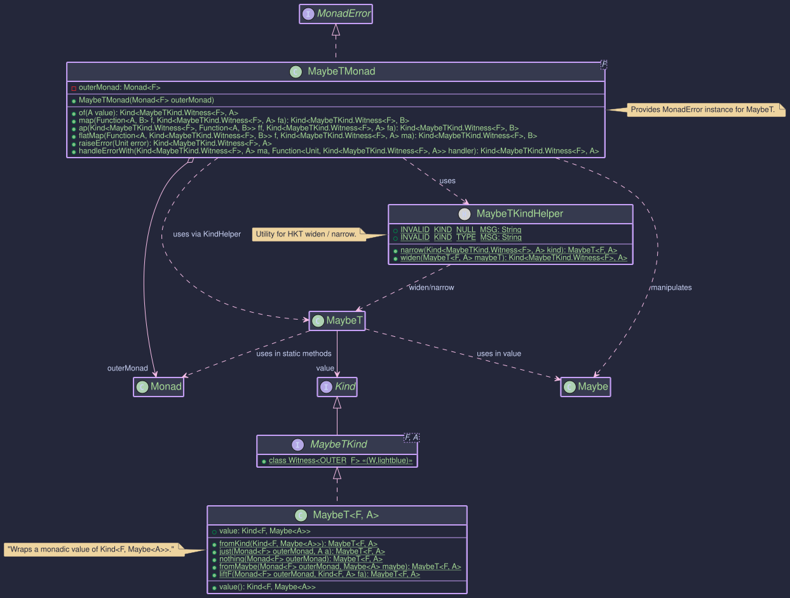
MaybeT<F, A>: Combining Any Monad F with Maybe<A>
The MaybeT monad transformer allows you to combine the optionality of Maybe<A> (representing a value that might be
Just<A> or Nothing) with another outer monad F. It transforms a computation that results in Kind<F, Maybe<A>>
into a single monadic structure. This is useful for operations within an effectful context F (like
CompletableFutureKind for async operations or ListKind for non-deterministic computations) that can also result in
an absence of a value.
F: The witness type of the outer monad (e.g.,CompletableFutureKind.Witness,ListKind.Witness). This monad handles the primary effect (e.g., asynchronicity, non-determinism).A: The type of the value potentially held by the innerMaybe.
// From: org.higherkindedj.hkt.maybe_t.MaybeT
public record MaybeT<F, A>(@NonNull Kind<F, Maybe<A>> value) {
/* ... static factories ... */ }
MaybeT<F, A> wraps a value of type Kind<F, Maybe<A>>. It signifies a computation in the context of F that will
eventually produce a Maybe<A>. The main benefit comes from its associated type class instance, MaybeTMonad, which
provides monadic operations for this combined structure.
MaybeTKind<F, A>: The Witness Type
Similar to other HKTs in Higher-Kinded-J, MaybeT uses MaybeTKind<F, A> as its witness type for use in generic
functions.
- It extends
Kind<G, A>whereG(the witness for the combined monad) isMaybeTKind.Witness<F>. Fis fixed for a specificMaybeTcontext, whileAis the variable type parameter.
public interface MaybeTKind<F, A> extends Kind<MaybeTKind.Witness<F>, A> {
// Witness type G = MaybeTKind.Witness<F>
// Value type A = A (from Maybe<A>)
}
MaybeTKindHelper
- This utility class provides static
wrapandunwrapmethods for safe conversion between the concreteMaybeT<F, A>and itsKindrepresentation (Kind<MaybeTKind.Witness<F>, A>).
// To wrap:
// MaybeT<F, A> maybeT = ...;
Kind<MaybeTKind.Witness<F>, A> kind = MAYBE_T.widen(maybeT);
// To unwrap:
MaybeT<F, A> unwrappedMaybeT = MAYBE_T.narrow(kind);
MaybeTMonad<F>: Operating on MaybeT
The MaybeTMonad<F> class implements MonadError<MaybeTKind.Witness<F>, Unit>. The error type E for MonadError is fixed to Unit, signifying that an "error" in this context is the Maybe.nothing() state within the F<Maybe<A>> structure.
MaybeT represents failure (or absence) as Nothing, which doesn't carry an error value itself.
- It requires a
Monad<F>instance for the outer monadF, provided during construction. This instance is used to manage the effects ofF. - It uses
MaybeTKindHelper.wrapandMaybeTKindHelper.unwrapfor conversions. - Operations like
raiseError(Unit.INSTANCE)will create aMaybeTrepresentingF<Nothing>. TheUnit.INSTANCEsignifies theNothingstate without carrying a separate error value. handleErrorWithallows "recovering" from aNothingstate by providing an alternativeMaybeT. The handler function passed tohandleErrorWithwill receiveUnit.INSTANCEif aNothingstate is encountered.
// Example: F = CompletableFutureKind.Witness, Error type for MonadError is Unit
// 1. Get the Monad instance for the outer monad F
Monad<CompletableFutureKind.Witness> futureMonad = CompletableFutureMonad.INSTANCE;
// 2. Create the MaybeTMonad, providing the outer monad instance
MonadError<MaybeTKind.Witness<CompletableFutureKind.Witness>, Unit> maybeTMonad =
new MaybeTMonad<>(futureMonad);
// Now 'maybeTMonad' can be used to operate on Kind<MaybeTKind.Witness<CompletableFutureKind.Witness>, A> values.
maybeTMonad.of(value): Lifts a nullable valueAinto theMaybeTcontext. Result:F<Maybe.fromNullable(value)>.maybeTMonad.map(f, maybeTKind): Applies functionA -> Bto theJustvalue inside the nested structure. If it'sNothing, orfreturnsnull, it propagatesF<Nothing>.maybeTMonad.flatMap(f, maybeTKind): Sequences operations. TakesA -> Kind<MaybeTKind.Witness<F>, B>. If the input isF<Just(a)>, it appliesf(a)to get the nextMaybeT<F, B>and extracts itsKind<F, Maybe<B>>. IfF<Nothing>, it propagatesF<Nothing>.maybeTMonad.raiseError(Unit.INSTANCE): CreatesMaybeTrepresentingF<Nothing>.maybeTMonad.handleErrorWith(maybeTKind, handler): Handles aNothingstate. The handlerUnit -> Kind<MaybeTKind.Witness<F>, A>is invoked withnull.
MaybeT instances are typically created using its static factory methods, often requiring the outer Monad<F>
instance:
public void createExample() {
Monad<OptionalKind.Witness> optMonad = OptionalMonad.INSTANCE; // Outer Monad F=Optional
String presentValue = "Hello";
// 1. Lifting a non-null value: Optional<Just(value)>
MaybeT<OptionalKind.Witness, String> mtJust = MaybeT.just(optMonad, presentValue);
// Resulting wrapped value: Optional.of(Maybe.just("Hello"))
// 2. Creating a 'Nothing' state: Optional<Nothing>
MaybeT<OptionalKind.Witness, String> mtNothing = MaybeT.nothing(optMonad);
// Resulting wrapped value: Optional.of(Maybe.nothing())
// 3. Lifting a plain Maybe: Optional<Maybe(input)>
Maybe<Integer> plainMaybe = Maybe.just(123);
MaybeT<OptionalKind.Witness, Integer> mtFromMaybe = MaybeT.fromMaybe(optMonad, plainMaybe);
// Resulting wrapped value: Optional.of(Maybe.just(123))
Maybe<Integer> plainNothing = Maybe.nothing();
MaybeT<OptionalKind.Witness, Integer> mtFromMaybeNothing = MaybeT.fromMaybe(optMonad, plainNothing);
// Resulting wrapped value: Optional.of(Maybe.nothing())
// 4. Lifting an outer monad value F<A>: Optional<Maybe<A>> (using fromNullable)
Kind<OptionalKind.Witness, String> outerOptional = OPTIONAL.widen(Optional.of("World"));
MaybeT<OptionalKind.Witness, String> mtLiftF = MaybeT.liftF(optMonad, outerOptional);
// Resulting wrapped value: Optional.of(Maybe.just("World"))
Kind<OptionalKind.Witness, String> outerEmptyOptional = OPTIONAL.widen(Optional.empty());
MaybeT<OptionalKind.Witness, String> mtLiftFEmpty = MaybeT.liftF(optMonad, outerEmptyOptional);
// Resulting wrapped value: Optional.of(Maybe.nothing())
// 5. Wrapping an existing nested Kind: F<Maybe<A>>
Kind<OptionalKind.Witness, Maybe<String>> nestedKind =
OPTIONAL.widen(Optional.of(Maybe.just("Present")));
MaybeT<OptionalKind.Witness, String> mtFromKind = MaybeT.fromKind(nestedKind);
// Resulting wrapped value: Optional.of(Maybe.just("Present"))
// Accessing the wrapped value:
Kind<OptionalKind.Witness, Maybe<String>> wrappedValue = mtJust.value();
Optional<Maybe<String>> unwrappedOptional = OPTIONAL.narrow(wrappedValue);
// unwrappedOptional is Optional.of(Maybe.just("Hello"))
}
Let's consider fetching a user and then their preferences, where each step is asynchronous and might not return a value.
public static class MaybeTAsyncExample {
// --- Setup ---
Monad<CompletableFutureKind.Witness> futureMonad = CompletableFutureMonad.INSTANCE;
MonadError<MaybeTKind.Witness<CompletableFutureKind.Witness>, Unit> maybeTMonad =
new MaybeTMonad<>(futureMonad);
// Simulates fetching a user asynchronously
Kind<CompletableFutureKind.Witness, Maybe<User>> fetchUserAsync(String userId) {
System.out.println("Fetching user: " + userId);
CompletableFuture<Maybe<User>> future = CompletableFuture.supplyAsync(() -> {
try {
TimeUnit.MILLISECONDS.sleep(50);
} catch (InterruptedException e) { /* ignore */ }
if ("user123".equals(userId)) {
return Maybe.just(new User(userId, "Alice"));
}
return Maybe.nothing();
});
return FUTURE.widen(future);
}
// Simulates fetching user preferences asynchronously
Kind<CompletableFutureKind.Witness, Maybe<UserPreferences>> fetchPreferencesAsync(String userId) {
System.out.println("Fetching preferences for user: " + userId);
CompletableFuture<Maybe<UserPreferences>> future = CompletableFuture.supplyAsync(() -> {
try {
TimeUnit.MILLISECONDS.sleep(30);
} catch (InterruptedException e) { /* ignore */ }
if ("user123".equals(userId)) {
return Maybe.just(new UserPreferences(userId, "dark-mode"));
}
return Maybe.nothing(); // No preferences for other users or if user fetch failed
});
return FUTURE.widen(future);
}
// --- Service Stubs (returning Future<Maybe<T>>) ---
// Function to run the workflow for a given userId
Kind<CompletableFutureKind.Witness, Maybe<UserPreferences>> getUserPreferencesWorkflow(String userIdToFetch) {
// Step 1: Fetch User
// Directly use MaybeT.fromKind as fetchUserAsync already returns F<Maybe<User>>
Kind<MaybeTKind.Witness<CompletableFutureKind.Witness>, User> userMT =
MAYBE_T.widen(MaybeT.fromKind(fetchUserAsync(userIdToFetch)));
// Step 2: Fetch Preferences if User was found
Kind<MaybeTKind.Witness<CompletableFutureKind.Witness>, UserPreferences> preferencesMT =
maybeTMonad.flatMap(
user -> { // This lambda is only called if userMT contains F<Just(user)>
System.out.println("User found: " + user.name() + ". Now fetching preferences.");
// fetchPreferencesAsync returns Kind<CompletableFutureKind.Witness, Maybe<UserPreferences>>
// which is F<Maybe<A>>, so we can wrap it directly.
return MAYBE_T.widen(MaybeT.fromKind(fetchPreferencesAsync(user.id())));
},
userMT // Input to flatMap
);
// Try to recover if preferences are Nothing, but user was found (conceptual)
Kind<MaybeTKind.Witness<CompletableFutureKind.Witness>, UserPreferences> preferencesWithDefaultMT =
maybeTMonad.handleErrorWith(preferencesMT, (Unit v) -> { // Handler for Nothing
System.out.println("Preferences not found, attempting to use default.");
// We need userId here. For simplicity, let's assume we could get it or just return nothing.
// This example shows returning nothing again if we can't provide a default.
// A real scenario might try to fetch default preferences or construct one.
return maybeTMonad.raiseError(Unit.INSTANCE); // Still Nothing, or could be MaybeT.just(defaultPrefs)
});
// Unwrap the final MaybeT to get the underlying Future<Maybe<UserPreferences>>
MaybeT<CompletableFutureKind.Witness, UserPreferences> finalMaybeT =
MAYBE_T.narrow(preferencesWithDefaultMT); // or preferencesMT if no recovery
return finalMaybeT.value();
}
public void asyncExample() {
System.out.println("--- Fetching preferences for known user (user123) ---");
Kind<CompletableFutureKind.Witness, Maybe<UserPreferences>> resultKnownUserKind =
getUserPreferencesWorkflow("user123");
Maybe<UserPreferences> resultKnownUser = FUTURE.join(resultKnownUserKind);
System.out.println("Known User Result: " + resultKnownUser);
// Expected: Just(UserPreferences[userId=user123, theme=dark-mode])
System.out.println("\n--- Fetching preferences for unknown user (user999) ---");
Kind<CompletableFutureKind.Witness, Maybe<UserPreferences>> resultUnknownUserKind =
getUserPreferencesWorkflow("user999");
Maybe<UserPreferences> resultUnknownUser = FUTURE.join(resultUnknownUserKind);
System.out.println("Unknown User Result: " + resultUnknownUser);
// Expected: Nothing
}
// --- Workflow Definition using MaybeT ---
// --- Domain Model ---
record User(String id, String name) {
}
record UserPreferences(String userId, String theme) {
}
}
This example illustrates:
- Setting up
MaybeTMonadwithCompletableFutureMonadandUnitas the error type. - Using
MaybeT.fromKindto lift an existingKind<F, Maybe<A>>into theMaybeTcontext. - Sequencing operations with
maybeTMonad.flatMap. IfWorkspaceUserAsyncresults inF<Nothing>, the lambda for fetching preferences is skipped. - The
handleErrorWithshows a way to potentially recover from aNothingstate usingUnitin the handler andraiseError(Unit.INSTANCE). - Finally,
.value()is used to extract the underlyingKind<CompletableFutureKind.Witness, Maybe<UserPreferences>>.
- The
MaybeTtransformer simplifies working with nested optional values within other monadic contexts by providing a unified monadic interface, abstracting away the manual checks and propagation ofNothingstates. - When
MaybeTMonadis used as aMonadError, the error type isUnit, indicating that the "error" (aNothingstate) doesn't carry a specific value beyond its occurrence.
ReaderT - Combining Monadic Effects with a Read-Only Environment
ReaderT Monad Transformer
The ReaderT monad transformer (short for Reader Transformer) allows you to combine the capabilities of the Reader monad (providing a read-only environment R) with another outer monad F. It encapsulates a computation that, given an environment R, produces a result within the monadic context F (i.e., Kind<F, A>).
This is particularly useful when you have operations that require some configuration or context (R) and also involve other effects managed by F, such as asynchronicity (CompletableFutureKind), optionality (OptionalKind, MaybeKind), or error handling (EitherKind).
The ReaderT<F, R, A> structure essentially wraps a function R -> Kind<F, A>.
Structure
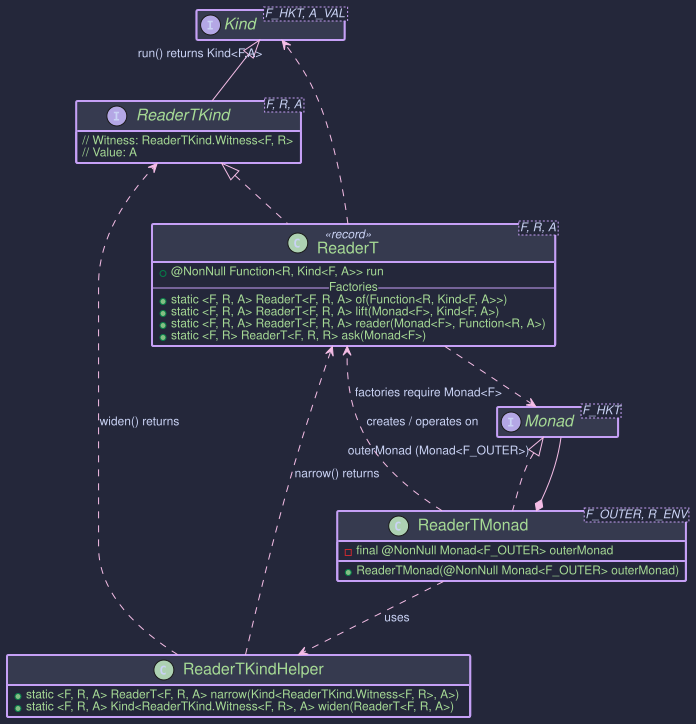
ReaderT<F, R, A>: The Core Data Type
ReaderT<F, R, A> is a record that encapsulates the core computation.
public record ReaderT<F, R, A>(@NonNull Function<R, Kind<F, A>> run)
implements ReaderTKind<F, R, A> {
// ... static factory methods ...
}
F: The witness type of the outer monad (e.g.,OptionalKind.Witness,CompletableFutureKind.Witness). This monad handles an effect such as optionality or asynchronicity.R: The type of the read-only environment (context or configuration) that the computation depends on.A: The type of the value produced by the computation, wrapped within the outer monadF.run: The essential functionR -> Kind<F, A>. When this function is applied to an environment of typeR, it yields a monadic valueKind<F, A>.
ReaderTKind<F, R, A>: The Witness Type
To integrate with Higher-Kinded-J's generic programming capabilities, ReaderTKind<F, R, A> serves as the witness type.
- It extends
Kind<G, A>, whereG(the witness for the combinedReaderTmonad) isReaderTKind.Witness<F, R>. - The types
F(outer monad) andR(environment) are fixed for a specificReaderTcontext, whileAis the variable value type.
public interface ReaderTKind<F, R, A> extends Kind<ReaderTKind.Witness<F, R>, A> {
// Witness type G = ReaderTKind.Witness<F, R>
// Value type A = A
}
ReaderTKindHelper: Utility for Wrapping and Unwrapping
ReaderTKindHelper provides READER_T enum essential utility methods to convert between the concrete ReaderT<F, R, A> type and its Kind representation (Kind<ReaderTKind.Witness<F, R>, A>).
public enum ReaderTKindHelper {
READER_T;
// Unwraps Kind<ReaderTKind.Witness<F, R>, A> to ReaderT<F, R, A>
public <F, R, A> @NonNull ReaderT<F, R, A> narrow(
@Nullable Kind<ReaderTKind.Witness<F, R>, A> kind);
// Wraps ReaderT<F, R, A> into ReaderTKind<F, R, A>
public <F, R, A> @NonNull ReaderTKind<F, R, A> widen(
@NonNull ReaderT<F, R, A> readerT);
}
ReaderTMonad<F, R>: Operating on ReaderT
The ReaderTMonad<F, R> class implements the Monad<ReaderTKind.Witness<F, R>> interface, providing the standard monadic operations (of, map, flatMap, ap) for the ReaderT structure.
- It requires a
Monad<F>instance for the outer monadFto be provided during its construction. ThisouterMonadis used internally to sequence operations within theFcontext. Ris the fixed environment type for this monad instance.
// Example: F = OptionalKind.Witness, R = AppConfig
// 1. Get the Monad instance for the outer monad F
OptionalMonad optionalMonad = OptionalMonad.INSTANCE;
// 2. Define your environment type
record AppConfig(String apiKey) {}
// 3. Create the ReaderTMonad
ReaderTMonad<OptionalKind.Witness, AppConfig> readerTOptionalMonad =
new ReaderTMonad<>(optionalMonad);
// Now 'readerTOptionalMonad' can be used to operate on
// Kind<ReaderTKind.Witness<OptionalKind.Witness, AppConfig>, A> values.
readerTMonad.of(value): Lifts a pure valueAinto theReaderTcontext. The underlying function becomesr -> outerMonad.of(value). Result:ReaderT(r -> F<A>).readerTMonad.map(func, readerTKind): Applies a functionA -> Bto the valueAinside theReaderTstructure, if present and successful within theFcontext. The transformationA -> Bhappens within theouterMonad.mapcall. Result:ReaderT(r -> F<B>).readerTMonad.flatMap(func, readerTKind): The core sequencing operation. Takes a functionA -> Kind<ReaderTKind.Witness<F, R>, B>(which is effectivelyA -> ReaderT<F, R, B>). It runs the initialReaderTwith the environmentRto getKind<F, A>. Then, it usesouterMonad.flatMapto process this. IfKind<F, A>yields anA,funcis applied toato get a newReaderT<F, R, B>. This newReaderTis then also run with the same original environmentRto yieldKind<F, B>. This allows composing computations that all depend on the same environmentRwhile also managing the effects ofF. Result:ReaderT(r -> F<B>).
You typically create ReaderT instances using its static factory methods. These methods often require an instance of Monad<F> for the outer monad.
public void createExample(){
// --- Setup ---
// Outer Monad F = OptionalKind.Witness
OptionalMonad optMonad = OptionalMonad.INSTANCE;
// Environment Type R
record Config(String setting) {
}
Config testConfig = new Config("TestValue");
// --- Factory Methods ---
// 1. `ReaderT.of(Function<R, Kind<F, A>> runFunction)`
// Constructs directly from the R -> F<A> function.
Function<Config, Kind<OptionalKind.Witness, String>> runFn1 =
cfg -> OPTIONAL.widen(Optional.of("Data based on " + cfg.setting()));
ReaderT<OptionalKind.Witness, Config, String> rt1 = ReaderT.of(runFn1);
// To run: OPTIONAL.narrow(rt1.run().apply(testConfig)) is Optional.of("Data based on TestValue")
System.out.println(OPTIONAL.narrow(rt1.run().apply(testConfig)));
// 2. `ReaderT.lift(Monad<F> outerMonad, Kind<F, A> fa)`
// Lifts an existing monadic value `Kind<F, A>` into ReaderT.
// The resulting ReaderT ignores the environment R and always returns `fa`.
Kind<OptionalKind.Witness, Integer> optionalValue = OPTIONAL.widen(Optional.of(123));
ReaderT<OptionalKind.Witness, Config, Integer> rt2 = ReaderT.lift(optMonad, optionalValue);
// To run: OPTIONAL.narrow(rt2.run().apply(testConfig)) is Optional.of(123)
System.out.println(OPTIONAL.narrow(rt2.run().apply(testConfig)));
Kind<OptionalKind.Witness, Integer> emptyOptional = OPTIONAL.widen(Optional.empty());
ReaderT<OptionalKind.Witness, Config, Integer> rt2Empty = ReaderT.lift(optMonad, emptyOptional);
// To run: OPTIONAL.narrow(rt2Empty.run().apply(testConfig)) is Optional.empty()
// 3. `ReaderT.reader(Monad<F> outerMonad, Function<R, A> f)`
// Creates a ReaderT from a function R -> A. The result A is then lifted into F using outerMonad.of(A).
Function<Config, String> simpleReaderFn = cfg -> "Hello from " + cfg.setting();
ReaderT<OptionalKind.Witness, Config, String> rt3 = ReaderT.reader(optMonad, simpleReaderFn);
// To run: OPTIONAL.narrow(rt3.run().apply(testConfig)) is Optional.of("Hello from TestValue")
System.out.println(OPTIONAL.narrow(rt3.run().apply(testConfig)));
// 4. `ReaderT.ask(Monad<F> outerMonad)`
// Creates a ReaderT that, when run, provides the environment R itself as the result, lifted into F.
// The function is r -> outerMonad.of(r).
ReaderT<OptionalKind.Witness, Config, Config> rt4 = ReaderT.ask(optMonad);
// To run: OPTIONAL.narrow(rt4.run().apply(testConfig)) is Optional.of(new Config("TestValue"))
System.out.println(OPTIONAL.narrow(rt4.run().apply(testConfig)));
// --- Using ReaderTKindHelper.READER_T to widen/narrow for Monad operations ---
// Avoid a cast with var ReaderTKind<OptionalKind.Witness, Config, String> kindRt1 =
// (ReaderTKind<OptionalKind.Witness, Config, String>) READER_T.widen(rt1);
var kindRt1 = READER_T.widen(rt1);
ReaderT<OptionalKind.Witness, Config, String> unwrappedRt1 = READER_T.narrow(kindRt1);
}
Sometimes, a computation dependent on an environment R and involving an outer monad F might perform an action (e.g., logging, initializing a resource, sending a fire-and-forget message) without producing a specific data value. In such cases, the result type A of ReaderT<F, R, A> can be org.higherkindedj.hkt.unit.Unit.
Let's extend the asynchronous example to include an action that logs a message using the AppConfig and completes asynchronously, returning Unit.
// Action: Log a message using AppConfig, complete asynchronously returning F<Unit>
public static Kind<CompletableFutureKind.Witness, Unit> logInitializationAsync(AppConfig config) {
CompletableFuture<Unit> future = CompletableFuture.runAsync(() -> {
System.out.println("Thread: " + Thread.currentThread().getName() +
" - Initializing component with API Key: " + config.apiKey() +
" for Service URL: " + config.serviceUrl());
// Simulate some work
try {
TimeUnit.MILLISECONDS.sleep(50);
} catch (InterruptedException e) {
Thread.currentThread().interrupt();
throw new RuntimeException(e);
}
System.out.println("Thread: " + Thread.currentThread().getName() +
" - Initialization complete for: " + config.serviceUrl());
}, config.executor()).thenApply(v -> Unit.INSTANCE); // Ensure CompletableFuture<Unit>
return FUTURE.widen(future);
}
// Wrap the action in ReaderT: R -> F<Unit>
public static ReaderT<CompletableFutureKind.Witness, AppConfig, Unit> initializeComponentRT() {
return ReaderT.of(ReaderTAsyncUnitExample::logInitializationAsync);
}
public static void main(String[] args) {
ExecutorService executor = Executors.newFixedThreadPool(2);
AppConfig prodConfig = new AppConfig("prod_secret_for_init", "[https://init.prod.service](https://init.prod.service)", executor);
// Get the ReaderT for the initialization action
ReaderT<CompletableFutureKind.Witness, AppConfig, Unit> initAction = initializeComponentRT();
System.out.println("--- Running Initialization Action with Prod Config ---");
// Run the action by providing the prodConfig environment
// This returns Kind<CompletableFutureKind.Witness, Unit>
Kind<CompletableFutureKind.Witness, Unit> futureUnit = initAction.run().apply(prodConfig);
// Wait for completion and get the Unit result (which is just Unit.INSTANCE)
Unit result = FUTURE.join(futureUnit);
System.out.println("Initialization Result: " + result); // Expected: Initialization Result: ()
executor.shutdown();
try {
if (!executor.awaitTermination(5, TimeUnit.SECONDS)) {
executor.shutdownNow();
}
} catch (InterruptedException e) {
executor.shutdownNow();
Thread.currentThread().interrupt();
}
}
This example illustrates:
- An asynchronous action (
logInitializationAsync) that depends onAppConfigbut logically returns no specific data, so its result isCompletableFuture<Unit>. - This action is wrapped into a
ReaderT<CompletableFutureKind.Witness, AppConfig, Unit>. - When this
ReaderTis run with anAppConfig, it yields aKind<CompletableFutureKind.Witness, Unit>. - The final result of joining such a future is
Unit.INSTANCE, signifying successful completion of the effectful, environment-dependent action.
Let's illustrate ReaderT by combining an environment dependency (AppConfig) with an asynchronous operation (CompletableFuture).
public class ReaderTAsyncExample {
// --- Monad Setup ---
// Outer Monad F = CompletableFutureKind.Witness
static final Monad<CompletableFutureKind.Witness> futureMonad = CompletableFutureMonad.INSTANCE;
// ReaderTMonad for AppConfig and CompletableFutureKind
static final ReaderTMonad<CompletableFutureKind.Witness, AppConfig> cfReaderTMonad =
new ReaderTMonad<>(futureMonad);
// Simulates an async call to an external service
public static Kind<CompletableFutureKind.Witness, ServiceData> fetchExternalData(AppConfig config, String itemId) {
System.out.println("Thread: " + Thread.currentThread().getName() + " - Fetching external data for " + itemId + " using API key: " + config.apiKey() + " from " + config.serviceUrl());
CompletableFuture<ServiceData> future = CompletableFuture.supplyAsync(() -> {
try {
TimeUnit.MILLISECONDS.sleep(100); // Simulate network latency
} catch (InterruptedException e) {
Thread.currentThread().interrupt();
throw new RuntimeException(e);
}
return new ServiceData("Raw data for " + itemId + " from " + config.serviceUrl());
}, config.executor());
return FUTURE.widen(future);
}
// Operation 1: Fetch data, wrapped in ReaderT
// This is R -> F<A> which is the core of ReaderT
public static ReaderT<CompletableFutureKind.Witness, AppConfig, ServiceData> fetchServiceDataRT(String itemId) {
return ReaderT.of(appConfig -> fetchExternalData(appConfig, itemId));
}
// Operation 2: Process data (sync part, depends on AppConfig, then lifts to ReaderT)
// This uses ReaderT.reader: R -> A, then A is lifted to F<A>
public static ReaderT<CompletableFutureKind.Witness, AppConfig, ProcessedData> processDataRT(ServiceData sData) {
return ReaderT.reader(futureMonad, // Outer monad to lift the result
appConfig -> { // Function R -> A (Config -> ProcessedData)
System.out.println("Thread: " + Thread.currentThread().getName() + " - Processing data with config: " + appConfig.apiKey());
return new ProcessedData("Processed: " + sData.rawData().toUpperCase() + " (API Key Suffix: " + appConfig.apiKey().substring(Math.max(0, appConfig.apiKey().length() - 3)) + ")");
});
}
// --- Service Logic (depends on AppConfig, returns Future<ServiceData>) ---
public static void main(String[] args) throws Exception {
ExecutorService executor = Executors.newFixedThreadPool(2);
AppConfig prodConfig = new AppConfig("prod_secret_key_xyz", "https://api.prod.example.com", executor);
AppConfig stagingConfig = new AppConfig("stag_test_key_123", "https://api.staging.example.com", executor);
// --- Composing with ReaderTMonad.flatMap ---
// Define a workflow: fetch data, then process it.
// The AppConfig is threaded through automatically by ReaderT.
Kind<ReaderTKind.Witness<CompletableFutureKind.Witness, AppConfig>, ProcessedData> workflowRTKind =
cfReaderTMonad.flatMap(
serviceData -> READER_T.widen(processDataRT(serviceData)), // ServiceData -> ReaderTKind<..., ProcessedData>
READER_T.widen(fetchServiceDataRT("item123")) // Initial ReaderTKind<..., ServiceData>
);
// Unwrap to the concrete ReaderT to run it
ReaderT<CompletableFutureKind.Witness, AppConfig, ProcessedData> composedWorkflow =
READER_T.narrow(workflowRTKind);
// --- Running the workflow with different configurations ---
System.out.println("--- Running with Production Config ---");
// Run the workflow by providing the 'prodConfig' environment
// This returns Kind<CompletableFutureKind.Witness, ProcessedData>
Kind<CompletableFutureKind.Witness, ProcessedData> futureResultProd = composedWorkflow.run().apply(prodConfig);
ProcessedData resultProd = FUTURE.join(futureResultProd); // Blocks for result
System.out.println("Prod Result: " + resultProd);
// Expected output will show "prod_secret_key_xyz", "[https://api.prod.example.com](https://api.prod.example.com)" in logs
// and "Processed: RAW DATA FOR ITEM123 FROM [https://api.prod.example.com](https://api.prod.example.com) (API Key Suffix: xyz)"
System.out.println("\n--- Running with Staging Config ---");
// Run the same workflow with 'stagingConfig'
Kind<CompletableFutureKind.Witness, ProcessedData> futureResultStaging = composedWorkflow.run().apply(stagingConfig);
ProcessedData resultStaging = FUTURE.join(futureResultStaging); // Blocks for result
System.out.println("Staging Result: " + resultStaging);
// Expected output will show "stag_test_key_123", "[https://api.staging.example.com](https://api.staging.example.com)" in logs
// and "Processed: RAW DATA FOR ITEM123 FROM [https://api.staging.example.com](https://api.staging.example.com) (API Key Suffix: 123)"
// --- Another example: Using ReaderT.ask ---
ReaderT<CompletableFutureKind.Witness, AppConfig, AppConfig> getConfigSettingRT =
ReaderT.ask(futureMonad); // Provides the whole AppConfig
Kind<ReaderTKind.Witness<CompletableFutureKind.Witness, AppConfig>, String> getServiceUrlRT =
cfReaderTMonad.map(
(AppConfig cfg) -> "Service URL from ask: " + cfg.serviceUrl(),
READER_T.widen(getConfigSettingRT)
);
String stagingServiceUrl = FUTURE.join(
READER_T.narrow(getServiceUrlRT).run().apply(stagingConfig)
);
System.out.println("\nStaging Service URL via ask: " + stagingServiceUrl);
executor.shutdown();
try {
if (!executor.awaitTermination(5, TimeUnit.SECONDS)) {
executor.shutdownNow();
}
} catch (InterruptedException e) {
executor.shutdownNow();
Thread.currentThread().interrupt();
}
}
// --- ReaderT-based Service Operations ---
// --- Environment ---
record AppConfig(String apiKey, String serviceUrl, ExecutorService executor) {
}
// --- Service Response ---
record ServiceData(String rawData) {
}
record ProcessedData(String info) {
}
}
This example demonstrates:
- Defining an
AppConfigenvironment. - Creating service operations (
WorkspaceServiceDataRT,processDataRT) that returnReaderT<CompletableFutureKind, AppConfig, A>. These operations implicitly depend onAppConfig. - Using
cfReaderTMonad.flatMapto chain these operations. TheAppConfigis passed implicitly through the chain. - Executing the composed workflow (
composedWorkflow.run().apply(config)) by providing a specificAppConfig. This "injects" the dependency at the very end. - The asynchronicity from
CompletableFutureis handled by thefutureMonadwithinReaderTMonadandReaderT's factories. - Using
ReaderT.askto directly access the configuration within aReaderTcomputation.
ReaderT simplifies managing computations that require a shared, read-only environment while also dealing with other monadic effects, leading to cleaner, more composable, and testable code by deferring environment injection.
StateT Monad Transformer
The StateT monad transformer is a powerful construct that allows you to add state-management capabilities to an existing monadic context. Think of it as taking the State Monad and making it work on top of another monad, like OptionalKind, EitherKind, or IOKind.
This is incredibly useful when you have computations that are both stateful and involve other effects, such as:
- Potentially missing values (
Optional) - Operations that can fail (
Either,Try) - Side-effecting computations (
IO)
What is StateT?
At its core, a StateT<S, F, A> represents a computation that:
- Takes an initial state of type
S. - Produces a result of type
Aalong with a new state of typeS. - And this entire process of producing the
(newState, value)pair is itself wrapped in an underlying monadic contextF.
So, the fundamental structure of a StateT computation can be thought of as a function:
S -> F<StateTuple<S, A>>
Where:
S: The type of the state.F: The witness type for the underlying monad (e.g.,OptionalKind.Witness,IOKind.Witness).A: The type of the computed value.StateTuple<S, A>: A simple container holding a pair of(state, value).

Key Classes and Concepts
StateT<S, F, A>: The primary data type representing the stateful computation stacked on monadF. It holds the functionS -> Kind<F, StateTuple<S, A>>.StateTKind<S, F, A>: TheKindrepresentation forStateT, allowing it to be used withhigher-kinded-j's typeclasses likeMonad. This is what you'll mostly interact with when usingStateTin a generic monadic context.StateTKind.Witness<S, F>: The higher-kinded type witness forStateT<S, F, _>. Note that both the state typeSand the underlying monad witnessFare part of theStateTwitness.StateTMonad<S, F>: TheMonadinstance forStateT<S, F, _>. It requires aMonadinstance for the underlying monadFto function.StateTKindHelper: A utility class providing static methods for working withStateTKind, such asnarrow(to convertKind<StateTKind.Witness<S, F>, A>back toStateT<S, F, A>),runStateT,evalStateT, andexecStateT.StateTuple<S, A>: A simple record-like class holding the pair(S state, A value).
Motivation: Why Use StateT?
Imagine you're processing a sequence of items, and for each item:
- You need to update some running total (state).
- The processing of an item might fail or return no result (e.g.,
Optional).
Without StateT, you might end up with deeply nested Optional<StateTuple<S, A>> and manually manage both the optionality and the state threading. StateT<S, OptionalKind.Witness, A> elegantly combines these concerns.
Usage
Creating StateT Instances
You typically create StateT instances in a few ways:
-
Directly with
StateT.create(): This is the most fundamental way, providing the state function and the underlying monad instance.// Assume S = Integer (state type), F = OptionalKind.Witness, A = String (value type) OptionalMonad optionalMonad = OptionalMonad.INSTANCE; Function<Integer, Kind<OptionalKind.Witness, StateTuple<Integer, String>>> runFn = currentState -> { if (currentState < 0) { return OPTIONAL.widen(Optional.empty()); } return OPTIONAL.widen(Optional.of(StateTuple.of(currentState + 1, "Value: " + currentState))); }; StateT<Integer, OptionalKind.Witness, String> stateTExplicit = StateT.create(runFn, optionalMonad); Kind<StateTKind.Witness<Integer, OptionalKind.Witness>, String> stateTKind = stateTExplicit; -
Lifting values with
StateTMonad.of(): This lifts a pure valueAinto theStateTcontext. The state remains unchanged, and the underlying monadFwill wrap the result using its ownofmethod.StateTMonad<Integer, OptionalKind.Witness> stateTMonad = StateTMonad.instance(optionalMonad); Kind<StateTKind.Witness<Integer, OptionalKind.Witness>, String> pureStateT = stateTMonad.of("pure value"); Optional<StateTuple<Integer, String>> pureResult = OPTIONAL.narrow(STATE_T.runStateT(pureStateT, 10)); System.out.println("Pure StateT result: " + pureResult); // When run with state 10, this will result in Optional.of(StateTuple(10, "pure value"))
Running StateT Computations
To execute a StateT computation and extract the result, you use methods from StateTKindHelper or directly from the StateT object:
-
runStateT(initialState): Executes the computation with aninitialStateand returns the result wrapped in the underlying monad:Kind<F, StateTuple<S, A>>.// Continuing the stateTKind from above: Kind<OptionalKind.Witness, StateTuple<Integer, String>> resultOptionalTuple = StateTKindHelper.runStateT(stateTKind, 10); Optional<StateTuple<Integer, String>> actualOptional = OPTIONAL.narrow(resultOptionalTuple); if (actualOptional.isPresent()) { StateTuple<Integer, String> tuple = actualOptional.get(); System.out.println("New State (from stateTExplicit): " + tuple.state()); System.out.println("Value (from stateTExplicit): " + tuple.value()); } else { System.out.println("actualOptional was empty for initial state 10"); } // Example with negative initial state (expecting empty Optional) Kind<OptionalKind.Witness, StateTuple<Integer, String>> resultEmptyOptional = StateTKindHelper.runStateT(stateTKind, -5); Optional<StateTuple<Integer, String>> actualEmpty = OPTIONAL.narrow(resultEmptyOptional); // Output: Is empty: true System.out.println("Is empty (for initial state -5): " + actualEmpty.isEmpty()); -
evalStateT(initialState): Executes and gives youKind<F, A>(the value, discarding the final state). -
execStateT(initialState): Executes and gives youKind<F, S>(the final state, discarding the value).
Composing StateT Actions
Like any monad, StateT computations can be composed using map and flatMap.
-
map(Function<A, B> fn): Transforms the valueAtoBwithin theStateTcontext, leaving the state transformation logic and the underlying monadF's effect untouched for that step.Kind<StateTKind.Witness<Integer, OptionalKind.Witness>, Integer> initialComputation = StateT.create(s -> OPTIONAL.widen(Optional.of(StateTuple.of(s + 1, s * 2))), optionalMonad); Kind<StateTKind.Witness<Integer, OptionalKind.Witness>, String> mappedComputation = stateTMonad.map( val -> "Computed: " + val, initialComputation); // Run mappedComputation with initial state 5: // 1. initialComputation runs: state becomes 6, value is 10. Wrapped in Optional. // 2. map's function ("Computed: " + 10) is applied to 10. // Result: Optional.of(StateTuple(6, "Computed: 10")) Optional<StateTuple<Integer, String>> mappedResult = OPTIONAL.narrow(STATE_T.runStateT(mappedComputation, 5)); System.out.print("Mapped result (initial state 5): "); mappedResult.ifPresentOrElse(System.out::println, () -> System.out.println("Empty")); // Output: StateTuple[state=6, value=Computed: 10] -
flatMap(Function<A, Kind<StateTKind.Witness<S, F>, B>> fn): Sequences twoStateTcomputations. The state from the first computation is passed to the second. The effects of the underlying monadFare also sequenced according toF'sflatMap.// stateTMonad and optionalMonad are defined Kind<StateTKind.Witness<Integer, OptionalKind.Witness>, Integer> firstStep = StateT.create(s -> OPTIONAL.widen(Optional.of(StateTuple.of(s + 1, s * 10))), optionalMonad); Function<Integer, Kind<StateTKind.Witness<Integer, OptionalKind.Witness>, String>> secondStepFn = prevValue -> StateT.create( s -> { if (prevValue > 100) { return OPTIONAL.widen(Optional.of(StateTuple.of(s + prevValue, "Large: " + prevValue))); } else { return OPTIONAL.widen(Optional.empty()); } }, optionalMonad); Kind<StateTKind.Witness<Integer, OptionalKind.Witness>, String> combined = stateTMonad.flatMap(secondStepFn, firstStep); // Run with initial state 15 // 1. firstStep(15): state=16, value=150. Wrapped in Optional.of. // 2. secondStepFn(150) is called. It returns a new StateT. // 3. The new StateT is run with state=16: // Its function: s' (which is 16) -> Optional.of(StateTuple(16 + 150, "Large: 150")) // Result: Optional.of(StateTuple(166, "Large: 150")) Optional<StateTuple<Integer, String>> combinedResult = OPTIONAL.narrow(STATE_T.runStateT(combined, 15)); System.out.print("Combined result (initial state 15): "); combinedResult.ifPresentOrElse(System.out::println, () -> System.out.println("Empty")); // Output: StateTuple[state=166, value=Large: 150] // Run with initial state 5 // 1. firstStep(5): state=6, value=50. Wrapped in Optional.of. // 2. secondStepFn(50) is called. // 3. The new StateT is run with state=6: // Its function: s' (which is 6) -> Optional.empty() // Result: Optional.empty() Optional<StateTuple<Integer, String>> combinedEmptyResult = OPTIONAL.narrow(STATE_T.runStateT(combined, 5)); // Output: true System.out.println("Is empty from small initial (state 5 for combined): " + combinedEmptyResult.isEmpty()); -
ap(ff, fa): Applies a wrapped function to a wrapped value.
Note on Null Handling: The
apmethod requires the function it extracts from the firstStateTcomputation to be non-null. If the function isnull, aNullPointerExceptionwill be thrown when the computation is executed. It is the developer's responsibility to ensure that any functions provided within aStateTcontext are non-null. Similarly, the value from the second computation may benull, and the provided function must be able to handle anullinput if that is a valid state.
State-Specific Operations
While higher-kinded-j's StateT provides the core monadic structure, you'll often want common state operations like get, set, modify. These can be constructed using StateT.create or StateTKind.lift.
-
get(): Retrieves the current state as the value.public static <S, F> Kind<StateTKind.Witness<S, F>, S> get(Monad<F> monadF) { Function<S, Kind<F, StateTuple<S, S>>> runFn = s -> monadF.of(StateTuple.of(s, s)); return StateT.create(runFn, monadF); } // Usage: stateTMonad.flatMap(currentState -> ..., get(optionalMonad)) -
set(newState, monadF): Replaces the current state withnewState. The value is oftenVoidorUnit.public static <S, F> Kind<StateTKind.Witness<S, F>, Unit> set(S newState, Monad<F> monadF) { Function<S, Kind<F, StateTuple<S, Void>>> runFn = s -> monadF.of(StateTuple.of(newState, Unit.INSTANCE)); return StateT.create(runFn, monadF); } -
modify(f, monadF): Modifies the state using a function.public static <S, F> Kind<StateTKind.Witness<S, F>, Unit> modify(Function<S, S> f, Monad<F> monadF) { Function<S, Kind<F, StateTuple<S, Unit>>> runFn = s -> monadF.of(StateTuple.of(f.apply(s), Unit.INSTANCE)); return StateT.create(runFn, monadF); } -
gets(f, monadF): Retrieves a value derived from the current state.
public static <S, F, A> Kind<StateTKind.Witness<S, F>, A> gets(Function<S, A> f, Monad<F> monadF) {
Function<S, Kind<F, StateTuple<S, A>>> runFn = s -> monadF.of(StateTuple.of(s, f.apply(s)));
return StateT.create(runFn, monadF);
}
Let's simulate stack operations where the stack is a List<Integer> and operations might be absent if, for example, popping an empty stack.
public class StateTStackExample {
private static final OptionalMonad OPT_MONAD = OptionalMonad.INSTANCE;
private static final StateTMonad<List<Integer>, OptionalKind.Witness> ST_OPT_MONAD =
StateTMonad.instance(OPT_MONAD);
// Helper to lift a state function into StateT<List<Integer>, OptionalKind.Witness, A>
private static <A> Kind<StateTKind.Witness<List<Integer>, OptionalKind.Witness>, A> liftOpt(
Function<List<Integer>, Kind<OptionalKind.Witness, StateTuple<List<Integer>, A>>> f) {
return StateTKindHelper.stateT(f, OPT_MONAD);
}
// push operation
public static Kind<StateTKind.Witness<List<Integer>, OptionalKind.Witness>, Unit> push(Integer value) {
return liftOpt(stack -> {
List<Integer> newStack = new LinkedList<>(stack);
newStack.add(0, value); // Add to front
return OPTIONAL.widen(Optional.of(StateTuple.of(newStack, Unit.INSTANCE)));
});
}
// pop operation
public static Kind<StateTKind.Witness<List<Integer>, OptionalKind.Witness>, Integer> pop() {
return liftOpt(stack -> {
if (stack.isEmpty()) {
return OPTIONAL.widen(Optional.empty()); // Cannot pop from empty stack
}
List<Integer> newStack = new LinkedList<>(stack);
Integer poppedValue = newStack.remove(0);
return OPTIONAL.widen(Optional.of(StateTuple.of(newStack, poppedValue)));
});
}
public static void main(String[] args) {
var computation =
For.from(ST_OPT_MONAD, push(10))
.from(_ -> push(20))
.from(_ -> pop())
.from(_ -> pop()) // t._3() is the first popped value
.yield((a, b, p1, p2) -> {
System.out.println("Popped in order: " + p1 + ", then " + p2);
return p1 + p2;
});
List<Integer> initialStack = Collections.emptyList();
Kind<OptionalKind.Witness, StateTuple<List<Integer>, Integer>> resultWrapped =
StateTKindHelper.runStateT(computation, initialStack);
Optional<StateTuple<List<Integer>, Integer>> resultOpt =
OPTIONAL.narrow(resultWrapped);
resultOpt.ifPresentOrElse(
tuple -> {
System.out.println("Final value: " + tuple.value()); // Expected: 30
System.out.println("Final stack: " + tuple.state()); // Expected: [] (empty)
},
() -> System.out.println("Computation resulted in empty Optional.")
);
// Example of popping an empty stack
Kind<StateTKind.Witness<List<Integer>, OptionalKind.Witness>, Integer> popEmptyStack = pop();
Optional<StateTuple<List<Integer>, Integer>> emptyPopResult =
OPTIONAL.narrow(StateTKindHelper.runStateT(popEmptyStack, Collections.emptyList()));
System.out.println("Popping empty stack was successful: " + emptyPopResult.isPresent()); // false
}
}
Relationship to State Monad
The State Monad (State<S, A>) can be seen as a specialized version of StateT. Specifically, State<S, A> is equivalent to StateT<S, Id, A>, where Id is the Identity monad (a monad that doesn't add any effects, simply Id<A> = A). higher-kinded-j provides an Id monad. State<S, A> can be seen as an equivalent to StateT<S, Id.Witness, A>.
Further Reading
- State Monad: Understand the basics of stateful computations.
- Monad Transformers: General concept of monad transformers.
- Documentation for the underlying monads you might use with
StateT, such as:
Using StateT, helps write cleaner, more composable code when dealing with computations that involve both state and other monadic effects.
The Order Workflow Example
This example is a practical demonstration of how to use the Higher-Kinded-J library to manage a common real-world scenario.
The scenario covers an Order workflow that involves asynchronous operations. The Operations can fail with specific, expected business errors.
Async Operations with Error Handling:
You can find the code for the Order Processing example in the org.higherkindedj.example.order package.
Goal of this Example:
- To show how to compose asynchronous steps (using
CompletableFuture) with steps that might result in domain-specific errors (usingEither). - To introduce the
EitherTmonad transformer as a powerful tool to simplify working with nested structures likeCompletableFuture<Either<DomainError, Result>>. - To illustrate how to handle different kinds of errors:
- Domain Errors: Expected business failures (e.g., invalid input, item out of stock) represented by
Either.Left. - System Errors: Unexpected issues during async execution (e.g., network timeouts) handled by
CompletableFuture. - Synchronous Exceptions: Using
Tryto capture exceptions from synchronous code and integrate them into the error handling flow.
- Domain Errors: Expected business failures (e.g., invalid input, item out of stock) represented by
- To demonstrate error recovery using
MonadErrorcapabilities. - To show how dependencies (like logging) can be managed within the workflow steps.
Prerequisites:
Before diving in, it's helpful to have a basic understanding of:
- Core Concepts of Higher-Kinded-J (
Kindand Type Classes). - The specific types being used: Supported Types.
- The general Usage Guide.
Key Files:
Dependencies.java: Holds external dependencies (e.g., logger).OrderWorkflowRunner.java: Orchestrates the workflow, initialising and running different workflow versions (Workflow1 and Workflow2).OrderWorkflowSteps.java: Defines the individual workflow steps (sync/async), acceptingDependencies.Workflow1.java: Implements the order processing workflow usingEitherToverCompletableFuture, with the initial validation step using anEither.Workflow2.java: Implements a similar workflow toWorkflow1, but the initial validation step uses aTrythat is then converted to anEither.WorkflowModels.java: Data records (OrderData,ValidatedOrder, etc.).DomainError.java: Sealed interface defining specific business errors.
Order Processing Workflow
The Problem: Combining Asynchronicity and Typed Errors
Imagine an online order process with the following stages:
- Validate Order Data: Check quantity, product ID, etc. (Can fail with
ValidationError). This is a synchronous operation. - Check Inventory: Call an external inventory service (async). (Can fail with
StockError). - Process Payment: Call a payment gateway (async). (Can fail with
PaymentError). - Create Shipment: Call a shipping service (async). (Can fail with
ShippingError, some of which might be recoverable). - Notify Customer: Send an email/SMS (async). (Might fail, but should not critically fail the entire order).
We face several challenges:
- Asynchronicity: Steps 2, 3, 4, 5 involve network calls and should use
CompletableFuture. - Domain Errors: Steps can fail for specific business reasons. We want to represent these failures with types (like
ValidationError,StockError) rather than just generic exceptions or nulls.Either<DomainError, SuccessValue>is a good fit for this. - Composition: How do we chain these steps together? Directly nesting
CompletableFuture<Either<DomainError, ...>>leads to complex and hard-to-read code (often called "callback hell" or nestedthenCompose/thenApplychains). - Short-Circuiting: If validation fails (returns
Left(ValidationError)), we shouldn't proceed to check inventory or process payment. The workflow should stop and return the validation error. - Dependencies & Logging: Steps need access to external resources (like service clients, configuration, loggers). How do we manage this cleanly?
The Solution: EitherT Monad Transformer + Dependency Injection
This example tackles these challenges using:
Either<DomainError, R>: To represent the result of steps that can fail with a specific business error (DomainError).Leftholds the error,Rightholds the success valueR.CompletableFuture<T>: To handle the asynchronous nature of external service calls. It also inherently handles system-level exceptions (network timeouts, service unavailability) by completing exceptionally with aThrowable.EitherT<F_OUTER_WITNESS, L_ERROR, R_VALUE>: The key component! This monad transformer wraps a nested structureKind<F_OUTER_WITNESS, Either<L_ERROR, R_VALUE>>. In our case:F_OUTER_WITNESS(Outer Monad's Witness) =CompletableFutureKind.Witness(handling async and system errorsThrowable).L_ERROR(Left Type) =DomainError(handling business errors).R_VALUE(Right Type) = The success value of a step. It providesmap,flatMap, andhandleErrorWithoperations that work seamlessly across both the outerCompletableFuturecontext and the innerEithercontext.
- Dependency Injection: A
Dependenciesrecord holds external collaborators (like a logger). This record is passed toOrderWorkflowSteps, making dependencies explicit and testable. - Structured Logging: Steps use the injected logger (
dependencies.log(...)) for consistent logging.
Setting up EitherTMonad
In OrderWorkflowRunner, we get the necessary type class instances:
// MonadError instance for CompletableFuture (handles Throwable)
// F_OUTER_WITNESS for CompletableFuture is CompletableFutureKind.Witness
private final @NonNull MonadError<CompletableFutureKind.Witness, Throwable> futureMonad =
CompletableFutureMonad.INSTANCE;
// EitherTMonad instance, providing the outer monad (futureMonad).
// This instance handles DomainError for the inner Either.
// The HKT witness for EitherT here is EitherTKind.Witness<CompletableFutureKind.Witness, DomainError>
private final @NonNull
MonadError<EitherTKind.Witness<CompletableFutureKind.Witness, DomainError>, DomainError>
eitherTMonad = new EitherTMonad<>(this.futureMonad);
Now, eitherTMonad can be used to chain operations on EitherT values (which are Kind<EitherTKind.Witness<CompletableFutureKind.Witness, DomainError>, A>). Its flatMap method automatically handles:
- Async Sequencing: Delegated to
futureMonad.flatMap(which translates toCompletableFuture::thenCompose). - Error Short-Circuiting: If an inner
EitherbecomesLeft(domainError), subsequentflatMapoperations are skipped, propagating theLeftwithin theCompletableFuture.
Workflow Step-by-Step (Workflow1.java)
Let's trace the execution flow defined in Workflow1. The workflow uses a For comprehension to sequentially chain the steps. steps. The state (WorkflowContext) is carried implicitly within the Right side of the EitherT.
The OrderWorkflowRunner initialises and calls Workflow1 (or Workflow2). The core logic for composing the steps resides within these classes.
We start with OrderData and create an initial WorkflowContext.
Next eitherTMonad.of(initialContext) lifts this context into an EitherT value. This represents a CompletableFuture that is already successfully completed with an Either.Right(initialContext).We start with OrderData and create an initial WorkflowContext.
eitherTMonad.of(initialContext) lifts this context into an EitherT value. This represents a CompletableFuture that is already successfully completed with an Either.Right(initialContext).
// From Workflow1.run()
var initialContext = WorkflowModels.WorkflowContext.start(orderData);
// The For-comprehension expresses the workflow sequentially.
// Each 'from' step represents a monadic bind (flatMap).
var workflow = For.from(eitherTMonad, eitherTMonad.of(initialContext))
// Step 1: Validation. The lambda receives the initial context.
.from(ctx1 -> {
var validatedOrderET = EitherT.fromEither(futureMonad, EITHER.narrow(steps.validateOrder(ctx1.initialData())));
return eitherTMonad.map(ctx1::withValidatedOrder, validatedOrderET);
})
// Step 2: Inventory. The lambda receives a tuple of (initial context, context after validation).
.from(t -> {
var ctx = t._2(); // Get the context from the previous step
var inventoryCheckET = EitherT.fromKind(steps.checkInventoryAsync(ctx.validatedOrder().productId(), ctx.validatedOrder().quantity()));
return eitherTMonad.map(ignored -> ctx.withInventoryChecked(), inventoryCheckET);
})
// Step 3: Payment. The lambda receives a tuple of all previous results. The latest context is the last element.
.from(t -> {
var ctx = t._3(); // Get the context from the previous step
var paymentConfirmET = EitherT.fromKind(steps.processPaymentAsync(ctx.validatedOrder().paymentDetails(), ctx.validatedOrder().amount()));
return eitherTMonad.map(ctx::withPaymentConfirmation, paymentConfirmET);
})
// Step 4: Shipment (with error handling).
.from(t -> {
var ctx = t._4(); // Get the context from the previous step
var shipmentAttemptET = EitherT.fromKind(steps.createShipmentAsync(ctx.validatedOrder().orderId(), ctx.validatedOrder().shippingAddress()));
var recoveredShipmentET = eitherTMonad.handleErrorWith(shipmentAttemptET, error -> {
if (error instanceof DomainError.ShippingError(var reason) && "Temporary Glitch".equals(reason)) {
dependencies.log("WARN: Recovering from temporary shipping glitch for order " + ctx.validatedOrder().orderId());
return eitherTMonad.of(new WorkflowModels.ShipmentInfo("DEFAULT_SHIPPING_USED"));
}
return eitherTMonad.raiseError(error);
});
return eitherTMonad.map(ctx::withShipmentInfo, recoveredShipmentET);
})
// Step 5 & 6 are combined in the yield for a cleaner result.
.yield(t -> {
var finalContext = t._5(); // The context after the last 'from'
var finalResult = new WorkflowModels.FinalResult(
finalContext.validatedOrder().orderId(),
finalContext.paymentConfirmation().transactionId(),
finalContext.shipmentInfo().trackingId()
);
// Attempt notification, but recover from failure, returning the original FinalResult.
var notifyET = EitherT.fromKind(steps.notifyCustomerAsync(finalContext.initialData().customerId(), "Order processed: " + finalResult.orderId()));
var recoveredNotifyET = eitherTMonad.handleError(notifyET, notifyError -> {
dependencies.log("WARN: Notification failed for order " + finalResult.orderId() + ": " + notifyError.message());
return Unit.INSTANCE;
});
// Map the result of the notification back to the FinalResult we want to return.
return eitherTMonad.map(ignored -> finalResult, recoveredNotifyET);
});
// The yield returns a Kind<M, Kind<M, R>>, so we must flatten it one last time.
var flattenedFinalResultET = eitherTMonad.flatMap(x -> x, workflow);
var finalConcreteET = EITHER_T.narrow(flattenedFinalResultET);
return finalConcreteET.value();
There is a lot going on in the For comprehension so lets try and unpick it.
Breakdown of the For Comprehension:
For.from(eitherTMonad, eitherTMonad.of(initialContext)): The comprehension is initiated with a starting value. We lift the initialWorkflowContextinto ourEitherTmonad, representing a successful, asynchronous starting point:Future<Right(initialContext)>..from(ctx1 -> ...)(Validation):- Purpose: Validates the basic order data.
- Sync/Async: Synchronous.
steps.validateOrderreturnsKind<EitherKind.Witness<DomainError>, ValidatedOrder>. - HKT Integration: The
Eitherresult is lifted into theEitherT<CompletableFuture, ...>context usingEitherT.fromEither(...). This wraps the immediateEitherresult in a completedCompletableFuture. - Error Handling: If validation fails,
validateOrderreturns aLeft(ValidationError). This becomes aFuture<Left(ValidationError)>, and theForcomprehension automatically short-circuits, skipping all subsequent steps.
.from(t -> ...)(Inventory Check):- Purpose: Asynchronously checks if the product is in stock.
- Sync/Async: Asynchronous.
steps.checkInventoryAsyncreturnsKind<CompletableFutureKind.Witness, Either<DomainError, Unit>>. - HKT Integration: The
Kindreturned by the async step is directly wrapped intoEitherTusingEitherT.fromKind(...). - Error Handling: Propagates
Left(StockError)or underlyingCompletableFuturefailures.
.from(t -> ...)(Payment):- Purpose: Asynchronously processes the payment.
- Sync/Async: Asynchronous.
- HKT Integration & Error Handling: Works just like the inventory check, propagating
Left(PaymentError)orCompletableFuturefailures.
.from(t -> ...)(Shipment with Recovery):- Purpose: Asynchronously creates a shipment.
- HKT Integration: Uses
EitherT.fromKindandeitherTMonad.handleErrorWith. - Error Handling & Recovery: If
createShipmentAsyncreturns aLeft(ShippingError("Temporary Glitch")), thehandleErrorWithblock catches it and returns a successfulEitherTwith default shipment info, allowing the workflow to proceed. All other errors are propagated.
.yield(t -> ...)(Final Result and Notification):- Purpose: The final block of the
Forcomprehension. It takes the accumulated results from all previous steps (in a tuplet) and produces the final result of the entire chain. - Logic:
- It constructs the
FinalResultfrom the successfulWorkflowContext. - It attempts the final, non-critical notification step (
notifyCustomerAsync). - Crucially, it uses
handleErroron the notification result. If notification fails, it logs a warning but recovers to aRight(Unit.INSTANCE), ensuring the overall workflow remains successful. - It then maps the result of the recovered notification step back to the
FinalResult, which becomes the final value of the entire comprehension.
- It constructs the
- Purpose: The final block of the
- Final
flatMapand Unwrapping:- The
yieldblock itself can return a monadic value. To get the final, single-layer result, we do one lastflatMapover theForcomprehension's result. - Finally,
EITHER_T.narrow(...)and.value()are used to extract the underlyingKind<CompletableFutureKind.Witness, Either<...>>from theEitherTrecord. Themainmethod inOrderWorkflowRunnerthen usesFUTURE.narrow()and.join()to get the finalEitherresult for printing.
- The
Alternative: Handling Exceptions with Try (Workflow2.java)
The OrderWorkflowRunner also initialises and can run Workflow2. This workflow is identical to Workflow1 except for the first step. It demonstrates how to integrate synchronous code that might throw exceptions.
// From Workflow2.run(), inside the first .from(...)
.from(ctx1 -> {
var tryResult = TRY.narrow(steps.validateOrderWithTry(ctx1.initialData()));
var eitherResult = tryResult.toEither(
throwable -> (DomainError) new DomainError.ValidationError(throwable.getMessage()));
var validatedOrderET = EitherT.fromEither(futureMonad, eitherResult);
// ... map context ...
})
- The
steps.validateOrderWithTrymethod is designed to throw exceptions on validation failure (e.g.,IllegalArgumentException). TRY.tryOf(...)inOrderWorkflowStepswraps this potentially exception-throwing code, returning aKind<TryKind.Witness, ValidatedOrder>.- In
Workflow2, wenarrowthis to a concreteTry<ValidatedOrder>. - We use
tryResult.toEither(...)to convert theTryinto anEither<DomainError, ValidatedOrder>:- A
Try.Success(validatedOrder)becomesEither.right(validatedOrder). - A
Try.Failure(throwable)is mapped to anEither.left(new DomainError.ValidationError(throwable.getMessage())).
- A
- The resulting
Eitheris then lifted intoEitherTusingEitherT.fromEither, and the rest of the workflow proceeds as before.
This demonstrates a practical pattern for integrating synchronous, exception-throwing code into the EitherT-based workflow by explicitly converting failures into your defined DomainError types.
This example illustrates several powerful patterns enabled by Higher-Kinded-J:
EitherTforFuture<Either<Error, Value>>: This is the core pattern. UseEitherTwhenever you need to sequence asynchronous operations (CompletableFuture) where each step can also fail with a specific, typed error (Either).- Instantiate
EitherTMonad<F_OUTER_WITNESS, L_ERROR>with theMonad<F_OUTER_WITNESS>instance for your outer monad (e.g.,CompletableFutureMonad). - Use
eitherTMonad.flatMapor aForcomprehension to chain steps. - Lift async results (
Kind<F_OUTER_WITNESS, Either<L, R>>) intoEitherTusingEitherT.fromKind. - Lift sync results (
Either<L, R>) intoEitherTusingEitherT.fromEither. - Lift pure values (
R) intoEitherTusingeitherTMonad.oforEitherT.right. - Lift errors (
L) intoEitherTusingeitherTMonad.raiseErrororEitherT.left.
- Instantiate
- Typed Domain Errors: Use
Either(often with a sealed interface likeDomainErrorfor theLefttype) to represent expected business failures clearly. This improves type safety and makes error handling more explicit. - Error Recovery: Use
eitherTMonad.handleErrorWith(for complex recovery returning anotherEitherT) orhandleError(for simpler recovery to a pure value for theRightside) to inspectDomainErrors and potentially recover, allowing the workflow to continue gracefully. - Integrating
Try: If dealing with synchronous legacy code or libraries that throw exceptions, wrap calls usingTRY.tryOf. Then,narrowtheTryand usetoEither(orfold) to convertTry.Failureinto an appropriateEither.Left<DomainError>before lifting intoEitherT. - Dependency Injection: Pass necessary dependencies (loggers, service clients, configurations) into your workflow steps (e.g., via a constructor and a
Dependenciesrecord). This promotes loose coupling and testability. - Structured Logging: Use an injected logger within steps to provide visibility into the workflow's progress and state without tying the steps to a specific logging implementation (like
System.out). varfor Conciseness: Utilise Java'svarfor local variable type inference where the type is clear from the right-hand side of an assignment. This can reduce verbosity, especially with complex generic types common in HKT.
While this example covers a the core concepts, a real-world application might involve more complexities. Here are some areas to consider for further refinement:
- More Sophisticated Error Handling/Retries:
- Retry Mechanisms: For transient errors (like network hiccups or temporary service unavailability), you might implement retry logic. This could involve retrying a failed async step a certain number of times with exponential backoff. While
higher-kinded-jitself doesn't provide specific retry utilities, you could integrate libraries like Resilience4j or implement custom retry logic within aflatMaporhandleErrorWithblock. - Compensating Actions (Sagas): If a step fails after previous steps have caused side effects (e.g., payment succeeds, but shipment fails irrevocably), you might need to trigger compensating actions (e.g., refund payment). This often leads to more complex Saga patterns.
- Retry Mechanisms: For transient errors (like network hiccups or temporary service unavailability), you might implement retry logic. This could involve retrying a failed async step a certain number of times with exponential backoff. While
- Configuration of Services:
- The
Dependenciesrecord currently only holds a logger. In a real application, it would also provide configured instances of service clients (e.g.,InventoryService,PaymentGatewayClient,ShippingServiceClient). These clients would be interfaces, with concrete implementations (real or mock for testing) injected.
- The
- Parallel Execution of Independent Steps:
- If some workflow steps are independent and can be executed concurrently, you could leverage
CompletableFuture.allOf(to await all) orCompletableFuture.thenCombine(to combine results of two). - Integrating these with
EitherTwould require careful management of theEitherresults from parallel futures. For instance, if you run twoEitherToperations in parallel, you'd get twoCompletableFuture<Either<DomainError, ResultX>>. You would then need to combine these, deciding how to aggregate errors if multiple occur, or how to proceed if one fails and others succeed.
- If some workflow steps are independent and can be executed concurrently, you could leverage
- Transactionality:
- For operations requiring atomicity (all succeed or all fail and roll back), traditional distributed transactions are complex. The Saga pattern mentioned above is a common alternative for managing distributed consistency.
- Individual steps might interact with transactional resources (e.g., a database). The workflow itself would coordinate these, but doesn't typically manage a global transaction across disparate async services.
- More Detailed & Structured Logging:
- The current logging is simple string messages. For better observability, use a structured logging library (e.g., SLF4J with Logback/Log4j2) and log key-value pairs (e.g.,
orderId,stepName,status,durationMs,errorTypeif applicable). This makes logs easier to parse, query, and analyse. - Consider logging at the beginning and end of each significant step, including the outcome (success/failure and error details).
- The current logging is simple string messages. For better observability, use a structured logging library (e.g., SLF4J with Logback/Log4j2) and log key-value pairs (e.g.,
- Metrics & Monitoring:
- Instrument the workflow to emit metrics (e.g., using Micrometer). Track things like workflow execution time, step durations, success/failure counts for each step, and error rates. This is crucial for monitoring the health and performance of the system.
Higher-Kinded-J can help build more robust, resilient, and observable workflows using these foundational patterns from this example.
Building a Playable Draughts Game
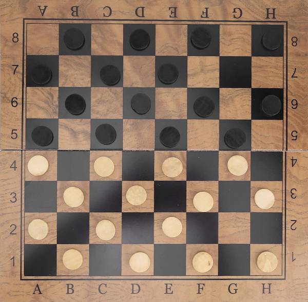
This tutorial will guide you through building a complete and playable command-line draughts (checkers) game.
We will provide all the necessary code, broken down into manageable files. More importantly, we will demonstrate how higher-kinded-j makes this process more robust, maintainable, and functionally elegant by cleanly separating game logic, user interaction, and state management.
The Functional Approach
At its core, a game like draughts involves several key aspects where functional patterns can shine:
- State Management: The board, the position of pieces, whose turn it is – this is all game state. Managing this immutably can prevent a host of bugs.
- User Input: Players will enter moves, which might be valid, invalid, or incorrectly formatted.
- Game Logic: Operations like validating a move, capturing a piece, checking for kings, or determining a winner.
- Side Effects: Interacting with the console for input and output.
higher-kinded-j provides monads that are perfect for these tasks:
StateMonad: For cleanly managing and transitioning the game state without mutable variables.EitherMonad: For handling input parsing and move validation, clearly distinguishing between success and different kinds of errors.IOMonad: For encapsulating side effects like reading from and printing to the console, keeping the core logic pure.ForComprehension: To flatten sequences of monadic operations (flatMapcalls) into a more readable, sequential style.
By using these, we can build a more declarative and composable game.
The Complete Code
you can find the complete code in the package:
Step 1: Core Concepts Quick Recap
Before we write game code, let's briefly revisit whyhigher-kinded-j is necessary. Java doesn't let us write, for example, a generic function that works for any container F<A> (like List<A> or Optional<A>). higher-kinded-j simulates this with:
Kind<F, A>: A bridge interface representing a typeAwithin a contextF.- Witness Types: Marker types that stand in for
F(the type constructor). - Type Classes: Interfaces like
Functor,Applicative,Monad, andMonadErrorthat define operations (likemap,flatMap,handleErrorWith) which work over theseKinds.
For a deeper dive, check out the Core Concepts of Higher-Kinded-J and the Usage Guide.
Step 2: Defining the Draughts Game State
Our game state needs to track the board, pieces, and current player. First, we need to define the core data structures of our game. These are simple, immutable records represent the game's state.
// Enum for the two players
enum Player { RED, BLACK }
// Enum for the type of piece
enum PieceType { MAN, KING }
// A piece on the board, owned by a player with a certain type
record Piece(Player owner, PieceType type) {}
// A square on the 8x8 board, identified by row and column
record Square(int row, int col) {
@Override
public @NonNull String toString() {
return "" + (char)('a' + col) + (row + 1);
}
}
// Represents an error during move parsing or validation
record GameError(String description) {}
// The command to make a move from one square to another
record MoveCommand(Square from, Square to) {}
// The outcome of a move attempt
enum MoveOutcome { SUCCESS, INVALID_MOVE, CAPTURE_MADE, GAME_WON }
record MoveResult(MoveOutcome outcome, String message) {}
We can define a GameState record:
// The complete, immutable state of the game at any point in time
public record GameState(Map<Square, Piece> board, Player currentPlayer, String message, boolean isGameOver) {
public static GameState initial() {
Map<Square, Piece> startingBoard = new HashMap<>();
// Place BLACK pieces
for (int r = 0; r < 3; r++) {
for (int c = (r % 2 != 0) ? 0 : 1; c < 8; c += 2) {
startingBoard.put(new Square(r, c), new Piece(Player.BLACK, PieceType.MAN));
}
}
// Place RED pieces
for (int r = 5; r < 8; r++) {
for (int c = (r % 2 != 0) ? 0 : 1; c < 8; c += 2) {
startingBoard.put(new Square(r, c), new Piece(Player.RED, PieceType.MAN));
}
}
return new GameState(Collections.unmodifiableMap(startingBoard), Player.RED, "Game started. RED's turn.", false);
}
GameState withBoard(Map<Square, Piece> newBoard) {
return new GameState(Collections.unmodifiableMap(newBoard), this.currentPlayer, this.message, this.isGameOver);
}
GameState withCurrentPlayer(Player nextPlayer) {
return new GameState(this.board, nextPlayer, this.message, this.isGameOver);
}
GameState withMessage(String newMessage) {
return new GameState(this.board, this.currentPlayer, newMessage, this.isGameOver);
}
GameState withGameOver() {
return new GameState(this.board, this.currentPlayer, this.message, true);
}
GameState togglePlayer() {
Player next = (this.currentPlayer == Player.RED) ? Player.BLACK : Player.RED;
return withCurrentPlayer(next).withMessage(next + "'s turn.");
}
}
We'll use the State<S, A> monad from higher-kinded-j to manage this GameState. A State<GameState, A> represents a computation that takes an initial GameState and produces a result A along with a new, updated GameState. Explore the State Monad documentation for more.
Step 3: Handling User Input with IO and Either
This class handles reading user input from the console. The readMoveCommand method returns an IO<Either<GameError, MoveCommand>>. This type signature is very descriptive: it tells us the action is an IO side effect, and its result will be either a GameError or a valid MoveCommand.
class InputHandler {
private static final Scanner scanner = new Scanner(System.in);
static Kind<IOKind.Witness, Either<GameError, MoveCommand>> readMoveCommand() {
return IOKindHelper.IO_OP.delay(() -> {
System.out.print("Enter move for " + " (e.g., 'a3 b4') or 'quit': ");
String line = scanner.nextLine();
if ("quit".equalsIgnoreCase(line.trim())) {
return Either.left(new GameError("Player quit the game."));
}
String[] parts = line.trim().split("\\s+");
if (parts.length != 2) {
return Either.left(new GameError("Invalid input. Use 'from to' format (e.g., 'c3 d4')."));
}
try {
Square from = parseSquare(parts[0]);
Square to = parseSquare(parts[1]);
return Either.right(new MoveCommand(from, to));
} catch (IllegalArgumentException e) {
return Either.left(new GameError(e.getMessage()));
}
});
}
private static Square parseSquare(String s) throws IllegalArgumentException {
if (s == null || s.length() != 2) throw new IllegalArgumentException("Invalid square format: " + s);
char colChar = s.charAt(0);
char rowChar = s.charAt(1);
if (colChar < 'a' || colChar > 'h' || rowChar < '1' || rowChar > '8') {
throw new IllegalArgumentException("Square out of bounds (a1-h8): " + s);
}
int col = colChar - 'a';
int row = rowChar - '1';
return new Square(row, col);
}
}
Learn more about the IO Monad and Either Monad.
Step 4: Game Logic as State Transitions
This is the heart of our application. It contains the rules of draughts. The applyMove method takes a MoveCommand and returns a State computation. This computation, when run, will validate the move against the current GameState, and if valid, produce a MoveResult and the new GameState. This entire class has no side effects.
public class GameLogicSimple {
static Kind<StateKind.Witness<GameState>, MoveResult> applyMove(MoveCommand command) {
return StateKindHelper.STATE.widen(
State.of(
currentState -> {
// Unpack command for easier access
Square from = command.from();
Square to = command.to();
Piece piece = currentState.board().get(from);
String invalidMsg; // To hold error messages
// Validate the move based on currentState and command
// - Is it the current player's piece?
// - Is the move diagonal?
// - Is the destination square empty or an opponent's piece for a jump?
if (piece == null) {
invalidMsg = "No piece at " + from;
return new StateTuple<>(
new MoveResult(MoveOutcome.INVALID_MOVE, invalidMsg),
currentState.withMessage(invalidMsg));
}
if (piece.owner() != currentState.currentPlayer()) {
invalidMsg = "Not your piece.";
return new StateTuple<>(
new MoveResult(MoveOutcome.INVALID_MOVE, invalidMsg),
currentState.withMessage(invalidMsg));
}
if (currentState.board().containsKey(to)) {
invalidMsg = "Destination square " + to + " is occupied.";
return new StateTuple<>(
new MoveResult(MoveOutcome.INVALID_MOVE, invalidMsg),
currentState.withMessage(invalidMsg));
}
int rowDiff = to.row() - from.row();
int colDiff = to.col() - from.col();
// Simple move or jump?
if (Math.abs(rowDiff) == 1 && Math.abs(colDiff) == 1) { // Simple move
if (piece.type() == PieceType.MAN) {
if ((piece.owner() == Player.RED && rowDiff > 0)
|| (piece.owner() == Player.BLACK && rowDiff < 0)) {
invalidMsg = "Men can only move forward.";
return new StateTuple<>(
new MoveResult(MoveOutcome.INVALID_MOVE, invalidMsg),
currentState.withMessage(invalidMsg));
}
}
return performMove(currentState, command, piece);
} else if (Math.abs(rowDiff) == 2 && Math.abs(colDiff) == 2) { // Jump move
Square jumpedSquare =
new Square(from.row() + rowDiff / 2, from.col() + colDiff / 2);
Piece jumpedPiece = currentState.board().get(jumpedSquare);
if (jumpedPiece == null || jumpedPiece.owner() == currentState.currentPlayer()) {
invalidMsg = "Invalid jump. Must jump over an opponent's piece.";
return new StateTuple<>(
new MoveResult(MoveOutcome.INVALID_MOVE, invalidMsg),
currentState.withMessage(invalidMsg));
}
return performJump(currentState, command, piece, jumpedSquare);
} else {
invalidMsg = "Move must be diagonal by 1 or 2 squares.";
return new StateTuple<>(
new MoveResult(MoveOutcome.INVALID_MOVE, invalidMsg),
currentState.withMessage(invalidMsg));
}
}));
}
private static StateTuple<GameState, MoveResult> performMove(
GameState state, MoveCommand command, Piece piece) {
Map<Square, Piece> newBoard = new HashMap<>(state.board());
newBoard.remove(command.from());
newBoard.put(command.to(), piece);
GameState movedState = state.withBoard(newBoard);
GameState finalState = checkAndKingPiece(movedState, command.to());
return new StateTuple<>(
new MoveResult(MoveOutcome.SUCCESS, "Move successful."), finalState.togglePlayer());
}
private static StateTuple<GameState, MoveResult> performJump(
GameState state, MoveCommand command, Piece piece, Square jumpedSquare) {
Map<Square, Piece> newBoard = new HashMap<>(state.board());
newBoard.remove(command.from());
newBoard.remove(jumpedSquare);
newBoard.put(command.to(), piece);
GameState jumpedState = state.withBoard(newBoard);
GameState finalState = checkAndKingPiece(jumpedState, command.to());
// Check for win condition
boolean blackWins =
finalState.board().values().stream().noneMatch(p -> p.owner() == Player.RED);
boolean redWins =
finalState.board().values().stream().noneMatch(p -> p.owner() == Player.BLACK);
if (blackWins || redWins) {
String winner = blackWins ? "BLACK" : "RED";
return new StateTuple<>(
new MoveResult(MoveOutcome.GAME_WON, winner + " wins!"),
finalState.withGameOver().withMessage(winner + " has captured all pieces!"));
}
return new StateTuple<>(
new MoveResult(MoveOutcome.CAPTURE_MADE, "Capture successful."), finalState.togglePlayer());
}
private static GameState checkAndKingPiece(GameState state, Square to) {
Piece piece = state.board().get(to);
if (piece != null && piece.type() == PieceType.MAN) {
// A RED piece is kinged on row index 0 (the "1st" row).
// A BLACK piece is kinged on row index 7 (the "8th" row).
if ((piece.owner() == Player.RED && to.row() == 0)
|| (piece.owner() == Player.BLACK && to.row() == 7)) {
Map<Square, Piece> newBoard = new HashMap<>(state.board());
newBoard.put(to, new Piece(piece.owner(), PieceType.KING));
return state
.withBoard(newBoard)
.withMessage(piece.owner() + "'s piece at " + to + " has been kinged!");
}
}
return state;
}
}
This uses State.of to create a stateful computation. State.get(), State.set(), and State.modify() are other invaluable tools from the State monad.
Step 5: Composing with flatMap - The Monadic Power
Now, we combine these pieces. The main loop needs to:
- Display the board (
IO). - Read user input (
IO). - If the input is valid, apply it to the game logic (
State). - Loop with the new game state.
This sequence of operations is a goodt use case for a For comprehension to improve on nested flatMap calls.
public class Draughts {
private static final IOMonad ioMonad = IOMonad.INSTANCE;
// Processes a single turn of the game
private static Kind<IOKind.Witness, GameState> processTurn(GameState currentGameState) {
// 1. Use 'For' to clearly sequence the display and read actions.
var sequence = For.from(ioMonad, BoardDisplay.displayBoard(currentGameState))
.from(ignored -> InputHandler.readMoveCommand())
.yield((ignored, eitherResult) -> eitherResult); // Yield the result of the read action
// 2. The result of the 'For' is an IO<Either<...>>.
// Now, flatMap that single result to handle the branching.
return ioMonad.flatMap(
eitherResult ->
eitherResult.fold(
error -> { // Left case: Input error
return IOKindHelper.IO_OP.delay(
() -> {
System.out.println("Error: " + error.description());
return currentGameState;
});
},
moveCommand -> { // Right case: Valid input
var stateComputation = GameLogic.applyMove(moveCommand);
var resultTuple = StateKindHelper.STATE.runState(stateComputation, currentGameState);
return ioMonad.of(resultTuple.state());
}),
sequence);
}
// other methods....
}
The For comprehension flattens the display -> read sequence, making the primary workflow more declarative and easier to read than nested callbacks.
The Order Processing Example in the higher-kinded-j docs shows a more complex scenario using CompletableFuture and EitherT, which is a great reference for getting started with monad transformers.
Step 6: The Game Loop
public class Draughts {
private static final IOMonad ioMonad = IOMonad.INSTANCE;
// The main game loop as a single, recursive IO computation
private static Kind<IOKind.Witness, Unit> gameLoop(GameState gameState) {
if (gameState.isGameOver()) {
// Base case: game is over, just display the final board and message.
return BoardDisplay.displayBoard(gameState);
}
// Recursive step: process one turn and then loop with the new state
return ioMonad.flatMap(Draughts::gameLoop, processTurn(gameState));
}
// processTurn as before....
public static void main(String[] args) {
// Get the initial state
GameState initialState = GameState.initial();
// Create the full game IO program
Kind<IOKind.Witness, Unit> fullGame = gameLoop(initialState);
// Execute the program. This is the only place where side effects are actually run.
IOKindHelper.IO_OP.unsafeRunSync(fullGame);
System.out.println("Thank you for playing!");
}
}
Key methods like IOKindHelper.IO_OP.unsafeRunSync() and StateKindHelper.STATE.runState() are used to execute the monadic computations at the "edge" of the application.
Step 7: Displaying the Board
A simple text representation will do the trick.
This class is responsible for rendering the GameState to the console. Notice how the displayBoard method doesn't perform the printing directly; it returns an IO<Unit> which is a description of the printing action. This keeps the method pure.
public class BoardDisplay {
public static Kind<IOKind.Witness, Unit> displayBoard(GameState gameState) {
return IOKindHelper.IO_OP.delay(
() -> {
System.out.println("\n a b c d e f g h");
System.out.println(" +-----------------+");
for (int r = 7; r >= 0; r--) { // Print from row 8 down to 1
System.out.print((r + 1) + "| ");
for (int c = 0; c < 8; c++) {
Piece p = gameState.board().get(new Square(r, c));
if (p == null) {
System.out.print(". ");
} else {
char pieceChar = (p.owner() == Player.RED) ? 'r' : 'b';
if (p.type() == PieceType.KING) pieceChar = Character.toUpperCase(pieceChar);
System.out.print(pieceChar + " ");
}
}
System.out.println("|" + (r + 1));
}
System.out.println(" +-----------------+");
System.out.println(" a b c d e f g h");
System.out.println("\n" + gameState.message());
if (!gameState.isGameOver()) {
System.out.println("Current Player: " + gameState.currentPlayer());
}
return Unit.INSTANCE;
});
}
}
Playing the game
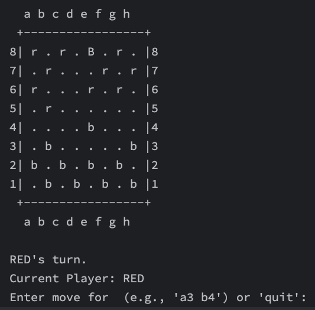
In the game we can see the black has "kinged" a piece by reaching e8.
Step 8: Refactoring for Multiple Captures
A key rule in draughts is that if a capture is available, it must be taken, and if a capture leads to another possible capture for the same piece, that jump must also be taken.
The beauty of our functional approach is that we only need to modify the core rules in GameLogic.java. The Draughts.java game loop, the IO handlers, and the data models don't need to change at all.
The core idea is to modify the performJump method. After a jump is completed, we will check if the piece that just moved can make another jump from its new position.
We do this by adding a helper canPieceJump and modify performJump to check for subsequent jumps.
If another jump is possible, the player's turn does not end., we will update the board state but not switch the current player, forcing them to make another capture. If another jump is not possible, we will switch the player as normal.
/** Check if a piece at a given square has any valid jumps. */
private static boolean canPieceJump(GameState state, Square from) {
Piece piece = state.board().get(from);
if (piece == null) return false;
int[] directions = {-2, 2};
for (int rowOffset : directions) {
for (int colOffset : directions) {
if (piece.type() == PieceType.MAN) {
if ((piece.owner() == Player.RED && rowOffset > 0)
|| (piece.owner() == Player.BLACK && rowOffset < 0)) {
continue; // Invalid forward direction for man
}
}
Square to = new Square(from.row() + rowOffset, from.col() + colOffset);
if (to.row() < 0
|| to.row() > 7
|| to.col() < 0
|| to.col() > 7
|| state.board().containsKey(to)) {
continue; // Off board or destination occupied
}
Square jumpedSquare = new Square(from.row() + rowOffset / 2, from.col() + colOffset / 2);
Piece jumpedPiece = state.board().get(jumpedSquare);
if (jumpedPiece != null && jumpedPiece.owner() != piece.owner()) {
return true; // Found a valid jump
}
}
}
return false;
}
/** Now it checks for further jumps after a capture. */
private static StateTuple<GameState, MoveResult> performJump(
GameState state, MoveCommand command, Piece piece, Square jumpedSquare) {
// Perform the jump and update board
Map<Square, Piece> newBoard = new HashMap<>(state.board());
newBoard.remove(command.from());
newBoard.remove(jumpedSquare);
newBoard.put(command.to(), piece);
GameState jumpedState = state.withBoard(newBoard);
// Check for kinging after the jump
GameState stateAfterKinging = checkAndKingPiece(jumpedState, command.to());
// Check for win condition after the capture
boolean blackWins =
!stateAfterKinging.board().values().stream().anyMatch(p -> p.owner() == Player.RED);
boolean redWins =
!stateAfterKinging.board().values().stream().anyMatch(p -> p.owner() == Player.BLACK);
if (blackWins || redWins) {
String winner = blackWins ? "BLACK" : "RED";
return new StateTuple<>(
new MoveResult(MoveOutcome.GAME_WON, winner + " wins!"),
stateAfterKinging.withGameOver().withMessage(winner + " has captured all pieces!"));
}
// Check if the same piece can make another jump
boolean anotherJumpPossible = canPieceJump(stateAfterKinging, command.to());
if (anotherJumpPossible) {
// If another jump exists, DO NOT toggle the player.
// Update the message to prompt for the next jump.
String msg = "Capture successful. You must jump again with the same piece.";
return new StateTuple<>(
new MoveResult(MoveOutcome.CAPTURE_MADE, msg), stateAfterKinging.withMessage(msg));
} else {
// No more jumps, so end the turn and toggle the player.
return new StateTuple<>(
new MoveResult(MoveOutcome.CAPTURE_MADE, "Capture successful."),
stateAfterKinging.togglePlayer());
}
}
Why This Functional Approach is Better
Having seen the complete code, let's reflect on the benefits:
- Testability: The
GameLogicclass is completely pure. It has no side effects and doesn't depend onSystem.inorSystem.out. You can test the entire rules engine by simply providing aGameStateand aMoveCommandand asserting on the resultingGameStateandMoveResult. This is significantly easier than testing code that is tangled with console I/O. - Composability: The
gameLoopinDraughts.javais a beautiful example of composition. It clearly and declaratively lays out the sequence of events for a game turn:display -> read -> process. TheflatMapcalls hide all the messy details of passing state and results from one step to the next. - Reasoning: The type signatures tell a story.
IO<Either<GameError, MoveCommand>>is far more descriptive than a method that returns aMoveCommandbut might throw an exception or returnnull. It explicitly forces the caller to handle both the success and error cases. - Maintainability: If you want to change from a command-line interface to a graphical one, you only need to replace
BoardDisplayandInputHandler. The entire coreGameLogicremains untouched because it's completely decoupled from the presentation layer.
This tutorial has only scratched the surface. You could extend this by exploring other constructs from the library, like using Validated to accumulate multiple validation errors or using the Reader monad to inject different sets of game rules.
Java may not have native HKTs, but with Higher-Kinded-J, you can absolutely utilise these powerful and elegant functional patterns to write better, more robust applications.
Contributing to Java HKT Simulation
First off, thank you for considering contributing! This project is a simulation to explore Higher-Kinded Types in Java, and contributions are welcome.
This document provides guidelines for contributing to this project.
Code of Conduct
This project and everyone participating in it is governed by the Code of Conduct. By participating, you are expected to uphold this code. Please report unacceptable behavior to simulation.hkt@gmail.com.
How Can I Contribute?
Reporting Bugs
- Ensure the bug was not already reported by searching on GitHub under Issues.
- If you're unable to find an open issue addressing the problem, open a new one. Be sure to include a title and clear description, as much relevant information as possible, and a code sample or an executable test case demonstrating the expected behavior that is not occurring.
- Use the "Bug Report" issue template if available.
Suggesting Enhancements
- Open a new issue to discuss your enhancement suggestion. Please provide details about the motivation and potential implementation.
- Use the "Feature Request" issue template if available.
Your First Code Contribution
Unsure where to begin contributing? You can start by looking through good first issue or help wanted issues (you can add these labels yourself to issues you think fit).
Pull Requests
- Fork the repository on GitHub.
- Clone your fork locally:
git clone git@github.com:higher-kinded-j/higher-kinded-j.git - Create a new branch for your changes:
git checkout -b name-of-your-feature-or-fix - Make your changes. Ensure you adhere to standard Java coding conventions.
- Add tests for your changes. This is important!
- Run the tests: Make sure the full test suite passes using
./gradlew test. - Build the project: Ensure the project builds without errors using
./gradlew build. - Commit your changes: Use clear and descriptive commit messages.
git commit -am 'Add some feature' - Push to your fork:
git push origin name-of-your-feature-or-fix - Open a Pull Request against the
mainbranch of the original repository. - Describe your changes in the Pull Request description. Link to any relevant issues (e.g., "Closes #123").
- Ensure the GitHub Actions CI checks pass.
Development Setup
- You need a Java Development Kit (JDK), version 24 or later.
- This project uses Gradle. You can use the included Gradle Wrapper (
gradlew) to build and test.- Build the project:
./gradlew build - Run tests:
./gradlew test - Generate JaCoCo coverage reports:
./gradlew test jacocoTestReport(HTML report atbuild/reports/jacoco/test/html/index.html)
- Build the project:
Coding Style
Please follow the Google Java Style Guide. Keep code simple, readable, and well-tested. Consistent formatting is encouraged.
Thank you for contributing!
Contributor Covenant Code of Conduct
Our Pledge
We as members, contributors, and leaders pledge to make participation in our community a harassment-free experience for everyone, regardless of age, body size, visible or invisible disability, ethnicity, sex characteristics, gender identity and expression, level of experience, education, socio-economic status, nationality, personal appearance, race, religion, or sexual identity and orientation.
We pledge to act and interact in ways that contribute to an open, welcoming, diverse, inclusive, and healthy community.
Our Standards
Examples of behavior that contributes to a positive environment for our community include:
- Demonstrating empathy and kindness toward other people
- Being respectful of differing opinions, viewpoints, and experiences
- Giving and gracefully accepting constructive feedback
- Accepting responsibility and apologizing to those affected by our mistakes, and learning from the experience
- Focusing on what is best not just for us as individuals, but for the overall community
Examples of unacceptable behavior include:
- The use of sexualized language or imagery, and sexual attention or advances of any kind
- Trolling, insulting or derogatory comments, and personal or political attacks
- Public or private harassment
- Publishing others' private information, such as a physical or email address, without their explicit permission
- Other conduct which could reasonably be considered inappropriate in a professional setting
Enforcement Responsibilities
Community leaders are responsible for clarifying and enforcing our standards of acceptable behavior and will take appropriate and fair corrective action in response to any behavior that they deem inappropriate, threatening, offensive, or harmful.
Community leaders have the right and responsibility to remove, edit, or reject comments, commits, code, wiki edits, issues, and other contributions that are not aligned to this Code of Conduct, and will communicate reasons for moderation decisions when appropriate.
Scope
This Code of Conduct applies within all community spaces, and also applies when an individual is officially representing the community in public spaces. Examples of representing our community include using an official e-mail address, posting via an official social media account, or acting as an appointed representative at an online or offline event.
Enforcement
Instances of abusive, harassing, or otherwise unacceptable behavior may be reported to the community leaders responsible for enforcement at simulation.hkt@gmail.com. All complaints will be reviewed and investigated promptly and fairly.
All community leaders are obligated to respect the privacy and security of the reporter of any incident.
Enforcement Guidelines
Community leaders will follow these Community Impact Guidelines in determining the consequences for any action they deem in violation of this Code of Conduct:
1. Correction
Community Impact: Use of inappropriate language or other behavior deemed unprofessional or unwelcome in the community.
Consequence: A private, written warning from community leaders, providing clarity around the nature of the violation and an explanation of why the behavior was inappropriate. A public apology may be requested.
2. Warning
Community Impact: A violation through a single incident or series of actions.
Consequence: A warning with consequences for continued behavior. No interaction with the people involved, including unsolicited interaction with those enforcing the Code of Conduct, for a specified period of time. This includes avoiding interactions in community spaces as well as external channels like social media. Violating these terms may lead to a temporary or permanent ban.
3. Temporary Ban
Community Impact: A serious violation of community standards, including sustained inappropriate behavior.
Consequence: A temporary ban from any sort of interaction or public communication with the community for a specified period of time. No public or private interaction with the people involved, including unsolicited interaction with those enforcing the Code of Conduct, is allowed during this period. Violating these terms may lead to a permanent ban.
4. Permanent Ban
Community Impact: Demonstrating a pattern of violation of community standards, including sustained inappropriate behavior, harassment of an individual, or aggression toward or disparagement of classes of individuals.
Consequence: A permanent ban from any sort of public interaction within the community.
Attribution
This Code of Conduct is adapted from the Contributor Covenant, version 2.1, available at https://www.contributor-covenant.org/version/2/1/code_of_conduct.html.
Community Impact Guidelines were inspired by Mozilla's code of conduct enforcement ladder.
For answers to common questions about this code of conduct, see the FAQ at https://www.contributor-covenant.org/faq. Translations are available at https://www.contributor-covenant.org/translations.
MIT License
Copyright (c) 2025 Magnus Smith
Permission is hereby granted, free of charge, to any person obtaining a copy of this software and associated documentation files (the "Software"), to deal in the Software without restriction, including without limitation the rights to use, copy, modify, merge, publish, distribute, sublicense, and/or sell copies of the Software, and to permit persons to whom the Software is furnished to do so, subject to the following conditions:
The above copyright notice and this permission notice shall be included in all copies or substantial portions of the Software.
THE SOFTWARE IS PROVIDED "AS IS", WITHOUT WARRANTY OF ANY KIND, EXPRESS OR IMPLIED, INCLUDING BUT NOT LIMITED TO THE WARRANTIES OF MERCHANTABILITY, FITNESS FOR A PARTICULAR PURPOSE AND NONINFRINGEMENT. IN NO EVENT SHALL THE AUTHORS OR COPYRIGHT HOLDERS BE LIABLE FOR ANY CLAIM, DAMAGES OR OTHER LIABILITY, WHETHER IN AN ACTION OF CONTRACT, TORT OR OTHERWISE, ARISING FROM, OUT OF OR IN CONNECTION WITH THE SOFTWARE OR THE USE OR OTHER DEALINGS IN THE SOFTWARE.